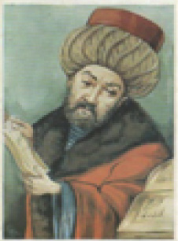

İ
İBNİ Sina (980-1037) Aristotelesçi felsefe anlayışını İslam düşüncesine göre yorumlayan, görgücü-usçu yöntemin gelişimine katkıda bulunmuş olan İslam düşünürü. İbni Sina, Buhara yakınlarında Hormisen’de doğdu. Babası, Samanoğulları hükümdarlarından II. Nuh döneminde sarayda yüksek görevler almış olan Abdullah’tır. İbni Sina, önce babasından; sonra çağın önde gelen bilginlerinden mantık, matematik, gökbilim dersleri aldı. Bir süre ilgilendiği tıp alanında hastalıkların ortaya çıkış ve yayılış nedenlerini araştırdı ve hastalıkların tedavisiyle uğraştı. Bu alandaki başarısı nedeniyle II. Nuh’un özel hekimi olup onu sağlığına kavuşturunca dönemin önde gelen tıp bilginlerinden biri olarak ün kazandı. İslam ve Yunan düşünürlerinin görüşlerini eleştiren ve yorumlayan İbni Sina, genellikle Aristoteles ve Farabi’nin düşüncelerine bağlı sorunları ele aldı. Bunları bilgi, mantık, evren (fizik), psikoloji, metafizik, ahlak, Tanrıbilim ve bilimlerin sınıflaması oluşturuyor. İbni Sina’ya göre bütün bilgi türleri, usa uygun biçimlerden oluşuyor. Us kuralları, insan zihninde doğuştan var olan, değişmez ve genelgeçer ilkelerdir. Sonradan duyularla kazanılan bilgi için de bu kurallara uyuluyor. Deney verileri, us ilkelerine göre, yeni bir işlemden geçirilerek biçimlendiriliyor; ancak onların anlam ve önemi, burada sınırlanıyor. İbni Sina’ya göre biri bitkisel, öteki insanla ilgili olmak üzere iki türlü ruh vardır. Bedeni devindiren, ona dirilik kazandıran bu tözün bir özelliği de yetkin düşünme yeteneğidir. Sürekli olarak özünü ve birliğini koruyan ruh, bütün izlenimlerini beden aracılığı ile alır; zihin yoluyla kavramları; kavramlardan yararlanarak da usavurmayı gerçekleştirir. Bu nedenle bedenle dolaylı olarak bağlantılıdır; ancak bu bağlantı, onun oluş koşulu değildir. İbni Sina, canlı sorununa gözlem kaynaklı bir psikoloji anlayışıyla çözüm aradı. Ona göre canlılar, doğal organların, göksel güçlerin yardımıyla birleşmesi sonucunda ortaya çıkmıştır. İlk olarak, varlığında tohumla üreme, beslenme ve büyüme güçleri olan bitki ortaya çıktı. İkinci aşamada, kendikendine devinme ve algı güçleri olan hayvan var oldu. İnsan özü ise, doğal evrim sürecinde en üst düzeyde oluşarak öteki varlıklardan ayrı bir özellik kazandı. İnsandaki iki algı türünden dış algı, duyumlarla; iç algı ise tasarlama yetisi de bulunan beynin ön boşluğundaki ortak duyu ile sağlanıyor. Duyularla alınan izlenimler, bu ortak duyu ile beyne gidiyor. İnsan için en önemli olan düşünen öz, yapıcı ve bilici güçlerle donatılmıştır. Yapıcı güç (us), gerekli özel eylemler için bedeni uyarıyor. Bilici güç de yapıcı gücü yönlendiriyor. Yapıcı güç, insanda iyiyi kötüden, yararlıyı yararsızdan ayırdığı için, bir istenç (irade) niteliğindedir. İbni Sina’ya göre 5 türlü us vardır. Bunların ilki, kavrama ve bilmeyi sağlayan maddesel ustur. İkincisi yalın, açık seçik olanı bilen, eyleme yönelik olan işlek ustur. Üçüncüsü, kazanılmış verileri kavrayan ve ikinci aşamada bulunan ustan üstün olan eylemsel ustur. Dördüncüsü, kendisine verilen ve düşünülebilen nesneleri bilen, aşama bakımından usun olgunluk basamağında bulunan kazanılmış ustur. Beşincisi de usun en yüksek aşaması olan, bütün varlık türlerinin özünü, kaynağını, onları oluşturan gücü, başka bir aracıya gereksinim duymadan bir bütünlük içinde kavrayan kutsal ustur. İbni Sina, insanın, ayrıntıları duyularla algıladığını; tümelleri usla kavradığını; tümelleri kavrayan yetkin usun da nesneleri anlama yeteneği olan etkin usa olanak sağladığını ileri sürdü. Ona göre us, bu kavranabilir nesneleri kazanabilmek için önce, duyu verilerinden yararlanıyor; sonra, duyu verilerini usun genel kurallarına göre işlemden geçiriyor ve yargıları ortaya koymada da onları aşıyor. İbni Sina’nın yapıtları 12. yüzyılda Latinceye çevrildi ve ünü Batı’da da yayıldı. Başlıca yapıtları: Kitâb al-Şifa (Ruhun Tedavisi Kitabı), Kitâb al-Necat (Kurtuluşun Kitabı), Kanun fi’l-Tıb (Tıbbın Yasası). Son iki yapıt, 1593 yılında Roma’da basıldı.
İBRAHİM MÜTEFERRİKA (1670-1745) İlk Osmanlı matbaasını kuran Osmanlı yayıncı. Macaristan’ın Erdel bölgesinde Kolozsvar’da (bugünkü Romanya’da Cluj’da) doğdu; doğum tarihi kesin olarak bilinmiyor; İstanbul’da öldü. Bir manastırda tanrıbilim okudu. Erdel Avusturya’nın eline geçince Katoliklik resmi mezhep durumuna gelip öbür inançlar üzerinde baskı kurmaya başlayınca İbrahim, Osmanlı uyruğunu seçerek 1688’den önce Müslüman oldu. 1710’da yazdığı Risale-i İslamiye ile dikkati çekti. Yapıt, Hıristiyanlık inançlarına yönelik eleştirileri içeriyordu. Sonra devlet hizmetine girerek müteferrika oldu. 1715’te bu görevle Mora sorunu için Viyana’ya gönderildi. 1716’da çevirmenlik ve komiserlik göreviyle Macar ordusu yanında Belgrat’ta bulundu. 1718-1735 arasında Türkiye’ye sığınan Orta Macar Kralı II. Rakoczi’nin mihmandarı oldu. Rakoczi’nin ölümü üzerine yeniden resmi görevler aldı. İbrahim Müteferrika, daha çok yayıncı, basımcı kişiliği ile tanınmıştır. Erdel, basımcılığın gelişmiş olduğu bir yerdi. Ünlü harf dökümcüsü ve basımcı Mihail Kiss, 1689’da Kolozsvar’da o dönemin en büyük basımevlerinden birini kurmuştu. Müteferrika, 1719’da basım işleriyle ilgilenmeye başladı; 1726’da Osmanlı yetkililerine basımevinin gerekliliğini, yararlarını anlatan bir dilekçe yazarak, basımevi kurmak için ferman ve fetva istedi. 1728’de Sait Mehmet Efendi’yle birlikte ilk Osmanlı-İslam basımevini kurdu. Osmanlı Devleti’nde yaklaşık 250 yıllık bir gecikme ile İbrahim Müteferrika’nın kurduğu basımevinde Türkçe basım başlamış oldu. Bu gecikmeye Osmanlı İslam kültürünün dışa kapalılığı ile birlikte iktisadi, siyasal ve teknik nedenler yol açmıştı. Şeyhülislam basımevi için din dışı kitapların basımı için fetva vermiş ve ulemadan on kişi, ilk kitabın başına konan takrizler yazmışlardır. Dinsel kitapların basımının yasaklanmasında, İmparatorluğun her yanındaki çok sayıda hattatın işsiz bırakılmaması kaygısı da bulunuyordu. Uzun bir serüvenden sonra 31 Ocak 1729’da ilk kitap olarak Vankulu Lügatı basıldı. Kitap için kâğıdı, Sait Çelebi Fransa’dan getirtmişti. Sonra 29 Mayıs 1729’da Kâtip Çelebi’nin Osmanlı deniz seferleriyle ilgili kitabının basımı gerçekleştirildi. Onu da konusu dil, tarih, coğrafya, pozitif bilimler, askerlik olan kitapların basımı sürdü. Basılacak kitapların seçiminde Osmanlı Devleti’nin kendini aydınlatma eğilimi de vardı. Müteferrika’nın matbaasında 17 yapıt basıldı. Bunların toplam baskı sayısı, 13200’dür. Bu kitapların bir bölümünü İbrahim Müteferrika yazmıştı. Kimisine de önsöz ve dizin eklemişti. Bu yapıtların en önemlisi, Kâtip Çelebi’nin 03 Temmuz 1732’de basılan Cihannüma’sıdır. Cihannüma, bilimsel bir yapıttır. Yapıt, Müteferrika’nın ekleriyle önemli ölçüde yenilenmişti. 14 Haziran 1733’te de aynı yazarın Tarihler Takvimi basıldı. Kâtip Çelebi’nin yapıtlarına yaptığı katkılar; coğrafya, astronomi ve mıknatıs üzerine yazdığı yazılar, Müteferrika’nın Batı Rönesansı’ndan haberli olduğunu ortaya koyuyor. Basımcılıktaki ünü öne çıkmış olsa da yaptığı öneriler, onun Osmanlı düzenini çağdaşlaştırma çabası içinde olduğunu da gösteriyor. 1731’de I. Mahmut’a sunduğu Ulusların Düzeni Üzerine Akıl İlkeleri adlı yapıtında Nizam-ı Cedit terimini ilk kez Müteferrika kullanmış ve işlemiştir. Orada pozitif bilimlerin gelişmediği bir ülkede güçlü bir devletin olamayacağını anlatmış; Avrupalıların geliştirmiş olduğu askerlik düzenini kurmanın önemine değinmiştir. Başlıca yapıtları: Usulü’l-Hikem fi Nizamü’l Ümem, 1732 (Ulusların Düzeni Üzerine Akıl İlkeleri); Risale-i İslamiye, (ö.s.), H. Necatioğlu yay., 1982. Bkz. GUTENBERG, Konstantin.

İBRAHİM MÜTEFERRİKA
içalgı (proprioception) Bedensel devinim ve konum algısı. Duyu alıcılarından, kaslardan, eklemlerden, merkez sinir sistemine gelen ve bedene ilişkin bilinçsiz bir farkında olma duygusu yaratan bilgiler. Duyu-devinim bütünleşmesinde belirleyici olan bu duygu, refleksler, istemdışı tepkiler ve planlı davranışlarla çevreye uyumu sağlıyor.
içben Bkz. ilkelbenlik.
iç çatışmalar Bkz.içgüdü kuramı (Çatışma).
iç çevre (internal environment) Canlıyı etkileyen ve böylece dış uyaranlara karşı yaptığı tepkileri değiştirip yönlendiren bütün fiziksel koşullar, duygular, coşkular ve zihinsel süreçler.
iç çevre etkisi (internal environment effect) Salgı bezi, kan dolaşımı gibi organlarla ilgili etkinliklerin, davranış ve uyum üzerindeki etkisi.
iç davranış (implicit behavior) Canlı varlıkların salgı bezleri, solunum ve kan dolaşımı organlarının işleyişinden başka, konuşma alışkanlıkları, tasarım ve düşünmeyi de kapsayan davranışlar.
iç denetim (internal control) Vicdanı izin vermediği ya da adalet duygusu engel olduğu için kişinin kendi davranışlarına koyduğu kısıtlama ya da yaptığı baskı; otokontrol, özdenetim. İç denetim, çocukça ya da gence özgü bir ülküyü; olgun, kendini engelleyebilen ve sorumlu bir yetişkin idealizmini yansıtabiliyor. Bkz. dış denetim.
iç dil (inner language) Sözcük ve kavramların zihindeki görsel, işitsel, devimsel temsilleri; içinden konuşma. Vygotsky’ye göre, iç dil, beniçinci konuşmadan sonra gelişiyor ve bu gelişim çocuğun, dili akıl yürütme süreçlerinde kullanmaya başladığını gösteriyor. Bkz. sözlü düşünme.
iç disiplin Bkz. iç denetim.
içe aktarım Bkz. özdeşim.
içealım (incorporation) Olağan bir beslenme eylemi; özümseme. Bu savunma mekanizması, içeatım mekanizması ile karıştırılmamalıdır. Çocuk, içealımla, dıştan verilen her türlü besini ve gelen uyarıları, ağız ve duyu organlarıyla alarak besleniyor; başkalarının özelliklerini ya da davranışlarını özümseyip kendi benliğinin bir parçası durumuna getirerek bedensel ve ruhsal yapısını geliştirip zenginleştiriyor. Annenin sütü, çıkardığı tatlı ses, bu besinlerdendir. Olumlu, doyum sağlayıcı şeyler, yaşamın her döneminde içe alınıyor. Bkz. içe yansıtma; içselleştirme.
içeatım (introjection) Psikanalize göre, ilkel ve bilinçdışı bir savunma mekanizması. İçeatım, bir başka şeyin varlığının ya da varlığının bir parçasının, yenip yutulurcasına benliğe katılmasıdır. İnsan, yabancı bir nesne gibi benlikte tuttuğu bu varlıkla ilişki kurabiliyor. Bu varlığı, gerektiğinde yaşatılan; gerektiğinde yok edilen bir savunma aracı olarak algılıyor. Kendisini içine şeytan girmiş kişi olarak algılama durumu; küçük çocuğun eşyayı, kişiyi yiyip yutmuş gibi içinde yaşatması, bu mekanizmayla gerçekleştiriliyor. Bu niteliği ile içeatım, özdeşim mekanizmasının bir öncüsü gibidir. Ancak, ondan farklı olarak içe atılanlar benimsenmiyor; ayrı bir varlıkmış gibi içte yaşatılıyor. Bu mekanizmayla içe atmış oldukları bir sevgi nesnesine ağır bir kin ve nefret duyanların, içlerindeki nesneyi öldürmek isteği ile özkıyıma (intihara) başvurdukları bile görülüyor. Bkz. içealım.
içebakış (introspection) 1. Yapısal psikolojide, bireyin bilincinde olanları izleyip ruhsal süreçlerin özellik ve niteliklerine ilişkin bilgi vermesi durumu; içgözlem. Bu yöntem, psikolojide olayların önemli bir bölümünün zihinde oluşan iç yaşantılar oluşu nedeniyle, bunların başkalarınca gözlemlenemeyeceği; bunları ancak, kişinin kendisinin inceleyebileceği sayıltısından yola çıkılarak geliştirilmiştir. İçgözlem, geleneksel tedavi yaklaşımlarında, kişilik testlerinde kullanılan bir yöntemdir. 2. Yapısalcılık (structuralism) okulunun kullandığı özel bir teknik. Yapısalcılık, aklın öğelerinin neler olduğunu araştırmayı amaç edinmiştir. Bu yaklaşımda her öğe, bir duyum olarak düşünülüyor. Yapısalcılar, sıcak, soğuk, ak, kara, acı, tatlı gibi öğelerin ve bunların birbiriyle ilişkilerinin ne olabileceğini incelemek için içebekış tekniğini geliştirmişlerdir. Bu tekniğin kullanımı sırasında deneğe sıcak, acı gibi bir uyarıcı verildiğinde ne duyumsadığı soruluyor ve denekten, duyumsadığını ayrıntılı olarak betimlemesi isteniyor. Bu yolla zihnin yapısı anlaşılmaya çalışılıyor. Bkz. davranışçılık; duygusal boşalım; KÜLPE, Oswald.
içe bakışçılık (introspectionism) Psikoojide temel ve güvenirliği olan tek yöntemin içe bakış olduğunu savunan akımlar.
içedönük kişilik Bkz. Eysenck’in ruhsal yapı sınıflaması; Jung’un ruhsal yapı sınıflaması
içedönüklük Bkz. Eysenck’in ruhsal yapı sınıflaması; Jung’un ruhsal yapı sınıflaması.
içekapanık (schizoid) Dış dünyaya karşı ilgi ve ilişkisi güçsüz, içine kapanık (kişi); şizoid. Bkz. içe kapanık kişilik.
içe kapanık çocuk Bkz. otizm.
içekapanık kişilik (schizoid personality) Başkalarıyla yakın ilişki kurmaktan kaçınan, düşmanca ve saldırgan duygularını açığa vurmakta güçsüz, düşünceleri gerçekler yerine dilek ve özlemlerince yönetilen uyumsuz bir kişilik tipi. Bkz. içedönük kişilik; içekapanık.
içerik çözümü (content analysis) İletişimde kullanılan düşünce, duygu, gerçek ve kişisel ilintilerin belirli bir tasarım çerçevesinde görünüm sıklıklarını belirleme.
içe yansıtma (introjection) 1. Dışarıda olan bir şeyi kendi bedenine alma. 2. Bir başka kişinin ya da kümenin değer yargılarını, inançlarını kendi kişiliğine katma. Bu alma ve katmalar, özümseme, benimseme biçiminde değil; daha çok, kopyalama, olduğu gibi alma biçiminde gerçekleşiyor. Örneğin, çocuk, anne babasının tutumunu; ergen, akran grubunun değer yargılarını kopyalayarak içine yansıtıyor. Kaygı yaratan durumlarda içe yansıtma, bir savunma mekanizması olarak kullanılıyor. “Bükemediğin eli öp, başına koy.” atasözü bunu açıklıyor. Bkz. içe alım; içe atım; içselleştirme; özdeşim; özümseme.
içeyönelik kişilik (autistic personality) Toplumsal etkileşimlerden kaçınarak yaşamın gerçekleri ile ilgisi olmayan bir düşünce dünyası içinde yaşama özelliği gösteren kişilik. Bkz. içedönük kişilik; içekapanık kişilik.
içe yöneliklik Bkz. otizm.
iç geçerlik (internal validity) Bir deneyin, bir araştırmanın sonuçlarının, o deney ya da araştırma tasarımındaki hatalara değil de manipüle edilen bağımsız değişkenlere bağlanabilme derecesi; başka deyişle, bir değişkenin, öteki değişken üzerindeki nedensel etkilerine ilişkin geçerli sonuçlar çıkarabilme derecesi. Ancak bu, genelleştirme ya da temsil etme güvencesi oluşturmuyor. Bkz. dış geçerlik; karıştırıcı değişken.
içgörü (insight) 1. Daha derin bir düzlemde öz-bilgi, öz-kavrayış. 2. Psikoterapide, kişinin belirtilerin varlığını, anlamını, kaynağını ve hastalığın ortaya çıkmasında oynadığı rolü ayırt etmesi. İçgörü kazandırıcı tedavi, bir başına hastalığı iyileştirmese de kişinin kendi rahatsızlığını duygusal boyutta kabul etmesi, çoğunlukla anlamlı değişimlerin ve belirtilerin hafiflemesinin önkoşuludur. Buna “Aha!” deneyimi de deniyor. 3. Gestalt psikolojisinde sorun çözmede, soruna yönelik bakış açısının değiştirilmesi, önceden görülmeyen ilişkilerin görülmesi sonucu ortaya çıkan birdenbire, sonuç verici bir kavrayış, görüş derinliği. 4. Bir durumun ya da şeyin gerçek yapısını, ayırt edici özelliğini, o duruma ilişkin altta yatan gerçeği görme yetisi.
içgörü kazandırıcı tedavi Bkz. içgörü.
içgözlem Bkz. içebakış.
içgüdü (instinct) Doğuştan getirilen ve insanı her türlü etkinliğe yönelten enerji; dürtü. Bkz. davranışçılık; içtepi; içgüdü kuramı.
içgüdü kuramı (instinct theory) Freud’un geliştirdiği altı kuramdan biri. Freud’a göre İçgüdü, doğuştan getirilen ve insanı her türlü etkinliğe yönelten bir enerji, sürekli olarak doyumu amaçlayan bir dürtüdür. Doyum ise, duyulan gereksinimin yarattığı gerginliği ya da acıyı belli bir enerji kullanımı ile gidererek bozulmuş olan dengeyi yeniden kurup haz duymaktır. Bu amaca, istenen nesne elde edilerek ya da bir nesne aracılığı ile ulaşılıyor. İçgüdüler: Kaynaklarına göre içgüdüler iki grupta toplanıyor. Birinci grup açlık, susuzluk, solunum, işeme, dışkılama, uyku, etkinlik gibi bedensel gereksinimleri içeriyor. Bu içgüdülerin her birinin, bedende oluşum ve doyum bölgesi vardır. Kimi bedensel gereksinimlerin yarattığı değişimler, geciktirilemeyen duyular oluşturuyor. Bu duyular, insanı belirli bir eyleme itiyor. O eylemin gerçekleştirilmesiyle, bedende beliren değişim ortadan kaldırılarak, rahatlama ve haz sağlanıyor. Örneğin, işeme ve dışkılama gereksinimi böyledir. İkinci grubu ise, Freud’un ortaya koyduğu ve incelediği içgüdüler oluşturuyor. Bunlar yaşam içgüdüsü (öbür adlarıyla libido, cinsel içgüdü, eros) ile ölüm içgüdüsünden (thanatos’tan) oluşuyor. Haz veren, haşlanım sağlayan her türlü nesne ya da uyarana yönelme yaşam içgüdüsünün; türlü biçimlerdeki saldırganlıklar, yıkıcı davranışlar da ölüm içgüdüsünün türevleri olarak ortaya çıkıyor. İçgüdüler, engellendikleri ve benlikçe bastırıldıkları için çoğu kez, oldukları gibi ortaya çıkamıyor; bu yüzden kılık, amaç ve nesne değiştirerek bilince ulaşmanın yolunu arıyor. Freud’a göre çocukların belli davranışları, cinsel içgüdüye dayanıyor. Bunun birkaç nedeni vardır. Bunlardan birincisi, insanın geleceğinin, çocukluğunun toprağında yeşermesidir. Örneğin, yirmi iki yaşındaki koşucu, bir yaşında iken emekliyordu. Ünlü yazar, bir zamanlar, anlamsız sesler çıkarıyordu. Üç evlat yetiştirmiş anne babanın da yıllar önce, çocuksu cinsel istek ve eğilimleri vardı. Çocuk, bütünüyle büyüyüp gelişince yetişkin bir insan durumuna geliyor; kendini yetişkinlere özgü devinimlerin; konuşma, yazma etkinliklerinin ve cinsel yaşamın içinde buluyor. İkincisi, cinsel gelişim, bedendeki kimyasal değişim özellikleriyle ilişkili olarak gerçekleşiyor. Bu kimyasal değişiklikler, kişiyi cinsel davranışlara iten cinsel (erojen) bölgeleri uyarıyor ve insanı o bölgede kimi cinsel eylemlere geçmeye yöneltiyor. Çocukluktaki bu basit cinsel süreçler, zamanla karmaşık, zengin ve olgun bir bütünlük kazanıyor. Freud’un cinsel içgüdüyü öne çıkarmasına ve insan davranışlarının pek çoğunu bu içgüdüye bağlamasına, dün olduğu gibi bugün de karşı çıkanlar vardır. Böyle olmakla birlikte daha önce, cinsellikle ilişkisi olmadığı sanılan birçok tutum ve davranışın cinsel içgüdü ile ilişkili olduğunu Freud’un açıkladığı da bir gerçektir. Örneğin, birçok ruhsal bunalımın dayandığı cinsel nedenleri ve çocuk cinselliğini Freud ortaya çıkarmıştır. Freud’un libido kuramı, çok eleştirilmekle birlikte, saldırganlık (ölüm içgüdüsü) kuramına göre daha çok tutunmuştur. Olumsuz eleştirilerin birçoğuna, cinsellik teriminin dar anlamıyla ele alınması yol açmıştır. Oysa Freud, “cinsel içgüdü” terimiyle “haz veren herhangi bir nesne ya da uyarana yönelme” anlamını dile getiriyordu. Buna göre, ”sevilen, hoşlanılan her nesne ve uyaranın cinsel niteliği vardır.” Libido, oldukça karmaşık dürtü öğelerinden oluşuyor. Her dürtü öğesi, örneğin ağzcıl, dışkıl, genital bölgelerin her biri, kendi kaynağının özelliğini taşıyor. Ölüm İçgüdüsü: İnsanın başkalarını bile bile incitmesi, başkalarının canına kıyması; Nazi kamplarında tüyleri diken diken eden insan kıyımı, arenalardaki boğa güreşleri, boks maçları, Freud’u ölüm içgüdüsünün varlığını düşünmeye yöneltiyor. Ayrıca meşrulaştırılan avcılığa, kişinin sevdiğini çimdiklemesine, ısırmasına, elezerliğine (sadistliğine), özezerliğine (mazohistliğine) bakarak, onda saldırgan içgüdülerin (ölüm içgüdüsünün) varlığını ileri sürüyor. Freud’a göre kıskançlık, kin, nefret, elezerlik gibi türevleri olan ölüm içgüdüsünün, cinsel içgüdüden ayrı bir kaynağı ve amacı vardır. Saldırganlıkla cinsel içgüdü genellikle çatışıyor; kimi de kaynaşıyor. Freud’a göre bunların ikisi de doyum peşindedir. Bunlara bu doyumu benlik sağlıyor. Üstbenlik de doyumu onaylayan ya da yasaklayan dış dünyanın yasalarını temsil ediyor. Uygunsuz cinsel istekler, benlik için ne kadar tehlikeli görünüyorsa, yersiz saldırılar, pişmanlık ve suçluluk duyguları da o kadar kaygı verici bulunuyor. Ölüm içgüdüsünün türevi olan saldırganlık içgüdüsünün açlık, susuzluk, solunum, işeme, dışkılama içgüdüleri ve cinsel içgüdü gibi bedende belli bir bölgesi yoktur. Örneğin, sevgimiz gibi öfkemizi de bedenimizin belirli bir parçası ile yansıtmıyoruz. İçgüdülerinin doğal bir beklentisi olan doyumu engellendiğinde insan, saldırgan tepkiler gösteriyor. Malını mülkünü, ülkesini, sınırlarını korumak, varlığını sürdürmek için savaşım veriyor. Daha da ileri giderek başkalarının evine, ülkesine yerleşmeye girişiyor; haklının hakkına el koyma haksızlığını gösteriyor. Hayvanların ise gemellikle insanlar kadar saldırgan olmadıkları, birbirini insanlar kadar öldürmedikleri; insanların yaptığı gibi birbirinin evine, ülkesine yerleşmeye çalışmadıkları, kendi bölgeleriyle yetindikleri görülüyor. Freud’a göre saldırgan, yıkıcı davranışları başlatan ölüm içgüdüsünün enerjisidir. Ne ki çağımız psikologlarının çoğu, bu görüşü reddediyor. Onlara göre saldırgan, yıkıcı dürtülerin ortaya çıkıp gelişmesine yol açan neden, engellenme ve çatışmalardır. Ölüm içgüdüsü eğer doğal bir dürtü olsaydı, her şeye karşın, dünyadaki onca barış yanlısı insan ve kurumların bu yoldaki bilinçli ve inançlı çabaları anlamını yitirirdi. Oysa, ağır da olsa, dünyada barışı kurma yolundaki bilinçlenme savaşımı, amacına doğru ilerliyor. Engellenme: Engellenme (frustration), önüne geçme yüzünden dürtü boşalımı olmaması sonucu gerginliğin ortadan kalkmaması ve doyum amacının gerçekleşememesi durumudur. Engellenme nedeniyle organizmanın doyma gereksinimi giderilemediğinde, gereksinimin yarattığı gerilim sürüyor. Organizma, bu acı veren durumdan genellikle ya kaçınarak (ite bulaşacağına çalıyı dolaşarak) ya da engeli ortadan kaldırarak gerilimden kurtulmaya çalışıyor. Engellenmeyi ya içten ya da dıştan gelen etkenler yaratıyor. Bedensel güçsüzlükler, suçluluk duyguları, korkular, içselleştirilmiş yasaklar, içten gelen etkenlerdendir. Doğal ve toplumsal çevreden kaynaklanan doğal yıkımlar, çetin doğa koşulları, savaşlar, aşırı toplumsal yasaklar gibi engelleyiciler ise dıştan gelen etkenleri oluşturuyor. Bilinçli engellenmelerin yanı sıra, bir dizi de bilinçdışı engellenme söz konusudur. Ruhsal bozuklukların birçoğunun nedeni, çocukluktan gelen bilinçdışı engellenmelerdir. Örneğin, cinsel korku, fobi gibi nevrozların birçoğu, çocukluğun ilk yıllarındaki engellenme ya da çatışmalar nedeniyle bilinçdışına bastırılan dürtülerin daha sonra kılık değiştirerek ortaya çıkan; gerçek olay ya da nesneyle doğrudan ilişkisi olmayan sonuçlarıdır. Engellenmeye karşı ilk ve temel tepki, önleyicileri ortadan kaldırmaya çalışmaktır. Kişi, engeli ortadan kaldırmak için engele saldırma, geri çekilme, dürtü nesnesini değiştirme ya da gerçek nesnelerin yerine düşsel nesneler yaratma yollarından birine başvuruyor. İnsanın doğuştan bu yana pek çok engelle karşılaşması, ona bu durumlara karşı dayanıklılık kazandırıyor. İnsan, gereksinimlerini doyurmak için kimi zaman beklemeyi; kimi zaman gereksinimlerinin giderilmesini ertelemeyi; kimilerinden vazgeçmeyi; gereksinim nesnelerini değiştirmeyi; kimi zaman da gereksinimlerini gidermek amacıyla saldırıya geçmeyi öğreniyor. Engellenmeye dayanma gücü ile benlik gücünün birbirine yakın anlam kazanmasının nedeni, kişinin bu süreçte edindiği dayanıklıktan yararlanarak uyum sağlama yollarını öğrenmiş olmasıdır. Çatışma: Bir engelin bulunmadığı durumlarda ilkelbenlikten gelen dürtü, üstbenliğin izni, çevrenin uygunluğu ve benliğin etkinliği ile kişinin doyum nesnesini bulup boşalımı gerçekleştirerek doyuma (hazza) ulaşmasını sağlıyor. Engelli durumlarda ise kişi, ilkelbenliğinden gelen dürtüyü, üstbenliğinin baskısı karşısında benliğinin zayıf kalması; ayrıca uygunsuz çevre koşullarının (engellerin) varlığı yüzünden, amaçladığı doyuma ulaştırmayı başaramıyor. Dürtülerin sıklıkla engellenmesi, dürtü birikimine, gerginliğin artmasına ve hoşnutsuzluğa yol açıyor. Bunun sonucunda da saldırganlık dürtüleri güç kazanıyor. Bir saldırganlık dürtüsü engellenmeye çalışılırken, başka bir saldırganlık dürtüsü beliriyor ve böylece uyumsuzluk, artarak sürüyor. Ruhsal aygıtın üç yapısını oluşturan ilkelbenlik, benlik ve üstbenlik arasında ortaya çıkan bağdaşmazlık ya da uyuşmazlık, psikanaliz dilinde çatışma olarak adlandırılıyor. Örneğin, ilkelbenlik dürtülerinin doyum istemesi karşısında, benliğin bunu çevresel gerçeklere aykırı bulması ve yasakçı üstbenliğin de benliği tehdit etmesi (benliğe korku salması), bir çatışmaya yol açıyor. Benliğin engellemediği bir ilkelbenlik isteğini üstbenlik suçladığında, benlik ile üstbenlik arasında bir çatışma ortaya çıkıyor. Psikanalitik kuram, kaygıya yol açan çatışmaları, iç (ruhsal) çatışmalar olarak adlandırmıştır. Kişi, bilinçdışında oluşan bu çatışmaları ayırt edemiyor. Onun bilincinde olduğu, bu çatışmalar sonucunda beliren, gerginlik ve kaygıdır. Freud’a göre ruhsal bozukluklar, çocukluk çağından kalma iç çatışmalardan ileri geliyor. Engellenme ve çatışmalar, benlikte olumsuz izler bırakıyor. Bunların şiddetli olanları ise, ruhsal sarsıntılara (travmalara) yol açıyor. Bunlar, benliğin gelişimini bozarak, saptırarak, yavaşlatarak durduruyor ve geriletiyor. Benliği, kaldıramayacağı ağırlıkta uyaranlar etkileyince ruhsal sarsıntılar ortaya çıkıyor. Örneğin, hem sevdiği kişiyle evlenmeyi hem de öğrenim yapmayı çok isteyen; ama bunlardan birini yeğlemek durumunda kalan; ancak, buna karar veremeyen bir genç için bu çatışma, bir ruhsal sarsıntı nedeni olabiliyor. Ruhsal sarsıntıların güçlü ya da zayıf oluşunu, organizmanın yapısı, gelişim çağı, içinde bulunulan toplumsal-ruhsal ortam belirliyor. Örneğin, anneyi yitirme, çocuk için ağır bir ruhsal sarsıntı nedeni olurken, yetişkin için yalnızca zor bir yaşantı özelliği taşıyor. Benliği zayıf kişiye ise günlük olağan kısıtlamalar bile sarsıcı bir etki yapıyor. Görüldüğü gibi, Freud’un önem verdiği konulardan biri de ruhsal yapılar, güçler, ilkeler ve bölümler arasındaki ikilikler ile bu ikiliklerden doğan çatışmalardır. Cinsel ve saldırgan içgüdüler, bu ikilik ilkesinin en belirgin örneğidir. Cinsel içgüdü (yaşam içgüdüsü), bağdaştırıcı, birleştirici, yapıcı bir işlev görüyor; yani, olumlu durumları belirliyor. Saldırgan içgüdü (ölüm içgüdüsünün türevi) ise, ayırıcı, bozucu, kırıcı, yıkıcı ve dağıtıcı işlevi ile ortaya çıkıyor; yani, olumsuz durumları simgeliyor. Melek ve şeytan, yaz ve kış, yaşam ve ölüm gibi ikilikler arasında değişmeyen tek şey, ikilerin birleşimi ve değişimidir. Sanıldığının tersine, cinsel içgüdü, insanı çok kez cinsel ilişkiye; saldırgan içgüdü de öldürmeye güdülemiyor. Bunlar insanı; cinsel ilişkiyi, öldürmeyi de kapsayan tüm olumlu ve olumsuz eylemlere yöneltiyor. Örneğin, cinsel birleşmeye, bununla ilişkili öpme, koklama, dokunma, ısırma, sevişme gibi eylemler de eşlik ediyor. Türün yeryüzünde yaşamını sürdürmesini, bu içgüdünün varlığı ile ona boyun eğen organın varlığı sağlıyor. Alınmak istenen onca önleme karşın doğan milyonlarca çocuk, cinsel içgüdünün gücüne; tarih boyunca süren ve bitmek bilmeyen savaşlar, kırım, kıyım ve yıkımlar ise ölüm içgüdüsünün varlığına tanıklık ediyor. İnsan, bu içgüdülerin güdümüyle zaman zaman en vahşi, en ilkel bir canlı olarak varlık gösteriyor. Öte yandan en güzel ezgileri, en değerli bilimsel ve sanatsal yapıtları, en hızlı uçağı, en çabuk iyileştiren ilacı, etkili ve öldürücü silahı da bu içgüdülerin zorlamasıyla yine insan ortaya koyuyor. Bireyin birbiriyle bağdaşmayan birden çok dürtü ya da dürtü nesnesi ile karşı karşıya kalması sonucu ortaya çıkan üç çatışma biçimi daha tanımlanmıştır. Bkz. çatışma. Korkudan ayrı, gerçek dışı tuhaf bir duygu da kaygı (anxiety, endişe, bunaltı) denen duygudur. Korku, gerçek bir tehlikenin varlığından kaynaklanıyor. Kaygı ise, ortada görünür bir tehlike yokken kişiyi boğucu bir sıkıntının, “Kötü, tehlikeli bir şey olacak.” duygusunun, dehşete düşüren, yoğun bir ruhsal acı veren bir korku kuşatması biçiminde ortaya çıkıyor. Örneğin, aslandan korkup kaçmak doğal ise de fındık faresinden korkmayı o kadar doğal sayamayız. Sürekli ev temizleyen, durmadan ellerini yıkayan, başkasının elini sıkamayan, uçağa binemeyen, pistte dans edemeyen, alttan alan, üstten alan, ezen, ezilen insanlar, o anda ya da sürekli olarak kaygı içindedirler. İçgüdüsel istekler, çocukluğun özellikle ilk yıllarında üstbenliğin yasakladığı zaman, yer ve biçimlerde bilince çıkmak isteyince benlikte bir çatışma yaşanıyor. Benlik, bu çatışmanın yarattığı kaygıdan kurtulmak, kendi uyumunu aksatmamak amacıyla ilk iş olarak, üstbenliğin de yardımıyla, gerçeklere ters düşen ilkelbenlik isteklerini bastırıyor ve yok biliyor. Çocuklukta, üstbenliğin benliği suçlaması nedeniyle benlikçe zararlı bulunarak bilinçdışına itilen içgüdüsel istekler, doyurulmamış, değişmemiş, canlı, dinamik ve tehlikeli bir yığın olarak orada duruyor. Bastırılmakla, kişiliğin bir parçası olmaktan çıkarılan bu istekler, her fırsatta bilince çıkmayı bekliyor. Kaygı, işte bu tehlikenin varlığını algılayan benliğin yaşadığı bu bilinçsiz duygunun adıdır. Bastırılan istekler, içten ya da dıştan gelebilecek önemsiz uyarılarla güçlendiklerinde, kimi zaman onları engelleyen karşıt enerjiyi (sansürü) aşmayı başararak bilince çıkıyor. Bunun gerçekleşmesi bir yana, böyle bir olasılık belirdiğinde bile, benlik bunu büyük bir tehlike olarak algılıyor; ilkelbenliğin birdenbire boşalımını durduramayacağı, görevini yapamayacağı korkusuna kapılıyor. Bu korku, benlikte, “İleride tehlike var!” duygusunu; yani, kaygıyı yaratıyor. Duyulan kaygının şiddeti, üstbenliğin sertliğine; kişinin, sorunları gerçekçi tepkilerden yararlanarak çözebilecek kadar güçlü bir benlik geliştirmiş olup olmamasına göre değişiyor. Karşılaşılan bu sorunları birçok kez gerçekçi çabalarla çözerek kaygıdan kurtulmayı ve ruhsal bütünlüğünü korumayı başaramayan benlik, bu amaçla birtakım savunma mekanizmaları geliştiriyor. Bkz. benliğin savunma mekanizmaları; yapısal kuram.
içgüdü parçası (partinstinct) Yaşam ya da ölüm içgüdüsünün bilinçli yaşantılarda bir biçimde belirmesi.
içgüdüsel davranış Bkz. içgüdü kuramı (İçgüdü).
içgüdüsel gereksinimler (instinctoid needs) A. Maslow’un doğuştan geldiğini savunduğu çabaları anlatmak için kullandığı terim. Bkz. gereksinimler aşama sırası.
iç kaynaklı kaygı (endogeneus anxiety) Kişinin kendi iç zorlamalarının yarattığı kaygı. Bu kaygı bir hormon ya da sinir iletici işlev yitimiyle ilgili olarak ortaya çıksa bile, bir kaygı bozukluğunun sonucudur.
içki bağımlılığı Bkz. içki tutkusu.
içkin adalet (immanent justice) Küçük çocuğun kuralların değişmediği; yanlış davranışlar karşısında cezanın kendiliğinden olduğu inancını dile getirmek için Piaget’nin kullandığı terim. Piaget’ye göre çocuklar, bir eylemin ahlakını 8 yaşına dek yalnızca sonuçlarıyla değerlendiriyorlar Ceza, eyleme yol açan niyetle değil; sonuçlarıyla doğru orantılıdır. Örneğin, bir tepsi dolusu bardağı istemeyerek kıran kişi, bu çağdaki çocuğun gözünde, kasıtlı olarak bir adet bardak kıran kişiden daha büyük bir cezaya çarptırılmalıdır. Bkz. ahlak gelişimi (Piaget’ye Göre Ahlak Gelişimi) ahlaksal gerçekçilik; denk adalet; nesnel yönelim; öznel yönelim;
içki tutkusu (dipsomania) İçeceklere; özellikle alkollü içeceklere yönelik denetlenemeyen, sıklıkla dönemsel, hastalıklı bir istek; dipsomani. Bkz. alkol bağımlılığı; bağımlılık.
içorgansal itki (visceral drive) Açlık, susuzluk, cinsellik gibi fizyolojik gereksinimlerden kaynaklanan dürtü. Cinselliğin, toplumsal-ruhsal boyutları da vardır.
içorgansal gereksinimler (viscerogenic needs) H. A. Murray’ın, organsal süreç kaynaklı olup bedensel doyum sağlayan hava, su, yiyecek, cinsellik gibi temel, fizyolojik gereksinimler için kullandığı terim.
içsalgı (hormone) Endokrin bezlerince üretilip kan dolasımına boşaltılan; hücrelerin, organların ya da sistemlerin işlev, etkinlik ya da yapılarını denetleyen ve düzenleyen kimyasal maddeler; hormonlar. Hormonlar genellikle vücudun iç ortamını (dengeleşimsel denetimini) ve üreme süreçlerini düzenliyor; ruhsal durumu ve davranışları etkiliyor. Adrenal (epinefrin), noradrenal (norepinefrin), dopamin gibi kimi hormonlar ayrıca, sinir iletici özelliği de taşıyor. Bkz. endoktrin bezleri.
içsalgı bezleri Bkz. endokrin bezleri.
içsalgı bilgisi Bkz. yerçekimsel güvensizlik.
içsel denetim odağı (internal locus of control) Bireyin, kendi davranışlarını ve davranışlarının sonuçlarını denetlediğine inandığı bir kişilik yönelimi. Bkz. dışsal denetim odağı.
içsel disiplin Bkz. disiplin; iç denetim; özdenetim.
içsel gereksinim (internal need) Dış uyaranlardan bağımsız olarak canlının içinde beliren değişimlerden doğan gereksinim.
içsel güdülenme (intrinsic motivation) Doyumun ya da itici gücün doğrudan doğruya eylemin kendisinden sağlandığı bir güdülenme biçimi.
içselleştirme (internalization) Çocuğun, başta anne babasınınkiler olmak üzere, toplumsal rolleri, normları, değer yargılarını kendisininmiş gibi benimsemesi. Bu düzeyde benimsenen normlara, değer yargılarına uygun davranmama, çocukta suçluluk duygusu yaratıyor. Psikanalize göre bu mekanizma, üstbenliğin oluşumu ve gelişiminde temel etken oluyor. Sosyal psikolojide ise, toplumsallaşmanın önde gelen süreçlerinden biri olarak kabul ediliyor. Bkz. dışsallaştırma; içe yansıtma; içsel denetim odağı; özdeşim; özümseme.
içteki anne ya da baba Bkz. yapısal kuram (Üstbenlik).
içten ketleme (internal inhibition) Pavlov’a göre, koşullama yoluyla kurulan hareket eğilimi karşısında bedende ketleyici bir sürecin uyandığı varsayımı. Herhangi bir zamanda tepki yapma eğiliminin gücünü, bu iki sürecin gücü belirliyor. Bkz. ketleme.
içtenlik Bkz. hümanist öğretmenlik; hümanist psikoloji.
içtepi (impulse) 1. Psikanalizde zaman zaman içgüdü yerine kullanılan terim. İçtepiler, insanın hayvansal yanında gittikçe güçsüzleşerek süren içgüdü kalıntılarıdır. İnsanın bilinci geliştikçe hayvanlık evresindeki içgüdüleri, içtepilere dönüşmüştür. 2. Sinir akımı. Organizmanın alıcıları mekanik, kimyasal ve başka yollarla uyarıldığında, bu uyarının yoğunluğu ve şiddeti, içtepiler (elektrik enerjisi) aracılığı ile gerekli organlara iletiliyor. Bu sinir akımı, bir elektrik telindeki gibi kesintisiz değil; çok kısa süreli sıçramalarla ilerliyor. Söz konusu sinir akımına bu nedenle impuls adı verilmiştir. Bir organizmaya ulaşan uyaranların (stimulusların) o organizma için önemli olan özellikleri ayrılıp derecelendiriliyor ve bu bilgiler, merkeze iletilmek üzere sinir içtepileri biçiminde kodlanıyor. Bkz. sinaps, sinir hücresi.
id Bkz. yapısal kuram (İlkelbenlik).
idantifikasyon Bkz. özdeşim.
ideal (ideal) 1. Türünün en güzel örneği. 2. Örnek alınacak model.
ideal benlik Bkz. ülküsel benlik.
ideal ego Bkz. ülküsel benlik.
ideal kendilik Bkz. ideal öz.
idealize etme Bkz. ülküleştirme.
idealizm ve eğitim (idealism and education) İdealizmi savunan düşünürlerin eğitime bakışları. İdealizmin ilk temsilcisi olan Eflatun (İ.Ö. 427-347), episteme ve sanı olmak üzere iki türlü bilgi olduğunu söylüyor. Akılla kavranan ve dünyayla ilgili olan episteme ikiye ayrılıyor. Matematika gibi bağıntılarla ilgili olanlar bilimsel bilgi; idea ile ilgili olanlar ise arı ustur. Episteme; kesin, değişmez, mutlak doğrudur. Çünkü idea, bölünmez, değişmez, öncesiz ve sonrasız, parçalanmaz ve ölümsüzdür. Sanı ise duyu organlarıyla anlaşılandır (dünyayla ilgili olandır). O da ikiye ayrılıyor. Bir bölümü imgelerle ilgili olup kestirimdir; öbürü ise hayvanlar, bitkiler ve öbür varlıklarla ilgili olan inançtır. Sanı, eğreti bilgidir. Çünkü duyularla algılanan dünya, bölünüyor, parçalanıyor, değişiyor; ölümlü, önceli ve sonludur. İnsanın ölümlü olan bedeni nesneler dünyasına; ölümsüz olan ruhu ise idealar dünyasına aittir. Aynı topraktan doğdukları için kardeş olan yurttaşları Tanrı, bir tutmamış; kimisinin mayasına altın cevheri; kimisininkine gümüş cevheri; kiminkine de demir ve tunç cevheri katmıştır. Aynı cevhere sahip olanlardan genellikle aynı cevhere sahip insanlar doğuyor. İdealar dünyasına yalnızca, ,sezgi, diyalektik ve tümdengelimi kullanan akıl ulaşabiliyor. Akıllı insan, en iyi idealine sahip olandır. En iyi ideali, sürekliliğe, bilgeliğe, dayanıklılığa, oranlı ölçülülüğe, mevsimindeliğe, hakseverliğe; doğru bilgiye ve akla, acının olmadığı hazza ve sevgiye dayanıyor. Güzel, iyidir ve sanat öykünmedir. Eflatun’un eğitim anlayışı, Devlet, Nomoi ve 7. Mektup adlı yapıtlarında yer almıştır. Eflatun’un felsefesine göre eğitim, “ruhu iyiye (Tanrı’ya, ideaya) çevirme ve bu amaç için en kolay, doğru ve şaşmaz yolu bulma sanatıdır.” Kötü insan, yanlış bedensel alışkanlık ve olumsuz yetiştirilme nedeniyle kötü olmuştur. Eflatun’a göre yalnızca akıl parçası baskın olan altın cevherlilerle yürekli parçası baskın olan gümüş cevherliler eğitilmelidir. İştahsal parça baskın olan demir ve tunç cevherlileri eğitmeye gerek yoktur. Devleti, akılsal parçası fazla olan sınıf yönetecektir. Yürekli parçası fazla olanlar da onları koruyacaklardır. Devlet, herkese yaradılışına uygun görev ve sorumluluk verdiğinde doğru devlet olur. Devleti, yalnızca ideaya (gerçek dünyaya) ve doğru bilgiye ulaşabilme gücünü taşıyan aklı fazla olanlar yönetmelidir; bunlar ise filozoflardır. “Ya filozoflar kral ya da krallar filozof olmalıdır.” Olgun döneminde komünizmi; yaşlılık döneminde ise monarşiyi savunan Eflatun’a göre eğitimde uyulması gereken ilkeler şunlardır: (1) Yöneticiler ve koruyucuların malı, mülkü, parası, eş ve çocukları ortaktır. Bu iki sınıfın en sağlıklı olanları birbirleriyle ilişki kurarak çocuk sahibi olmalıdırlar. Doğan çocuklar, yabancı annelerce emzirilip büyütülmelidir. Aynı yılda doğanlar kardeş sayılıp, bunların birbiriyle cinsel ilişki kurmaları yasaklanmalıdır. (2) Bu iki sınıfın çocukları 3 yaşına dek beslenip vücut bakımları yapıldıktan sonra 7 yaşına dek oyun ve masallarla temel eğitim ve vatandaşlık eğitimi; 7-10 yaşları arasında da beden eğitimi ve müzik eğitimi verilmelidir. (3) 11-18 yaşları arasında okuma yazma, hesap ve müzik, eğitimin temeli olmalıdır. 18-20 yaşları arasında bedence ve ruhça en iyiler seçilip bunlar, zihinsel ağırlıklı bir eğitimden geçirilmelidir. 20 yaşına girenlerden askerler ve koruyucular seçilerek bunlara zihinsel ve ruhsal eğitim verilmelidir. 30’unda ikinci bir seçme daha yapılmalı; seçilenler, 5 yıl süresince sıkı bir diyalektik ve felsefe eğitiminden geçirilmelidir. 35 yaşında yapılan son seçimde kazananlar, devlet yönetimine katılmalıdır. İkinci derecede görevlerde çalıştırılıp uygulamalı bir eğitimden geçirilen bu kişilerden başarılı olanlar 50 yaşına dek bu çalışmaları yapan başarılı kişiler artık filozof olmuşlardır ve devleti yönetme yeterliği kazanmışlardır. İdealist Program: İdealizme göre insan, ideaya (Tanrı’ya) bilinçli olarak ulaşınca kendini gerçekleştirebiliyor. Bunun için aklını kullanması gerekiyor. O nedenle eğitim programı, Tanrı ve kozmozla insan arasındaki kesin ilişkileri ele alıp açıklamalıdır. Bu tür bir program, çok genel ve soyut olan felsefe, matematik ve teoloji temeline dayanmalıdır. Derslerin içeriği, genel ve özel ilkeleri desteklemelidir. Öbür dersler de bunlara ters düşmemelidir. Bu üç ders ve onun dışındakiler kişinin duyuşsal alanını ve bilişsel alanını geliştirecektir. Eğitim yöntemleri, idealist bilgi kuramından çıkarılıyor. İdealizme göre tüm doğru, kesin, mutlak bilgiler, insan aklında önceden vardır. İnsan, aklıyla doğru bilgiye ulaşmak için tümdengelimi ve onun kurallarını kullanıp kendi içine dönmelidir; çünkü insanın aklı, evrensel aklı içeriyor. Kişi, bunun için içgözlem yapmalıdır. Öğrenme-öğretme ortamı, öğrencinin gizil ilgilerini uyarıcı olmalıdır; çünkü öğrencinin ilgi ve isteği ile öğrenme gücü, birbiriyle ilişkilidir. İstekle belli olay, olgu ve nesnelere yönelen öğrenci, öğrenmek için başka bir uyarıcıya, çabaya gereksinim duymayacaktır. Başat kültürel değerlerin aktarıcısı olan öğretmen, öğrencilerin kendisini taklit ederek öğrenmesini de sağlamalıdır. İdealist eğitimin kullandığı tekniklerden biri de Sokratik tartışmadır. Bu tartışma; alaysı (ironi) ve doğurtmaca olmak üzere iki aşamadfan oluşuyor. Alaysı basamağında öğrenci, sorulan sorularla, hiçbir bilgisinin doğru olmadığını anlıyor. Doğurtmaca basamağında ise yine sorular ve ipuçları aracılığı ile öğrencinin doğru bilgiyi bulması sağlanıyor. İdealist eğitimi uygulayan öğretmenin özellikleri şunlar olmalıdır: (1) Doğru bilgilerle donanmış, kültürlü olmalı; Her yerde evrensel değerlere göre (doğru, dürüst) davranmalıdır. (2) İnsanları tanıma becerisi olmalıdır. (3) Öğretmeyi uzmanca yapmalıdır. (4) Öğrenciye arkadaş, dost gibi davranmalıdır. (5) Tutum ve davranışları, öğrencide öğrenme isteği uyandırmalıdır. (6) Doğru ve evrensel olan insanlık hedef davranışlarını, öğrencide öğrenme isteği uyandırarak kavratmalıdır. (7) Her evrensel doğrunun kültürel miras içinde yeniden yaratılmasına yardımcı olmalıdır. İdealist eğitim, konuyu (dersleri) evrensel doğruları ve bunların aktarıcısı olan öğretmeni odak almıştır. Bkz. eğitim akımları.
ideal öz (ideal self) K. Horney!ın nevroz kuramına göre, kendini kendi yarattığı ideal imgeyle özdeşleştiren nevrotik bireyin, olduğuna gerçekten inandığı kusursuz ve yüceltilmiş öz; olmak istediği kişi; ülküsel öz. Bkz. gerçek öz; uyuşmazlık.
ideoloji (ideology) 1. İnsan, toplum, dünya ve evrenle ilgili duygu, düşünce ve inançlar toplamı; düşünyapı. 2. Marksizme göre, sınıflı toplumlarda egemen sınıfların çıkarına hizmet edecek biçimde çarpıtılmış gerçeklik anlayışı.
ideomotor kuramı (ideomotor theory) W. James ve onunla aynı görüşü paylaşanların geliştirdiği kuram. Onlara göre, bilinçli hedefler, yapısal açıdan dürtüseldir; başka bilinçli düşüncelerle engellenmedikleri sürece, kendiliğinden gerçekleşme eğilimi gösterirler.
idiyo Bkz. alık.
idiyosi Bkz. alıklık.
idrak Bkz. algı.
idrak etme Bkz. algılama.
idrar kesesi Bkz. işlevsel işeme.
iğdiş (eunuch) Erkeklik bezleri burulmuş, iğdiş edilmiş erkek; hadım.
iğdiş etmek (to make (s.o.) aeunuch, castrate) Erkeklik bezlerini burarak ya da çıkararak dölleme yapamaz duruma getirmek, enemek, hadım etmek.
iğdiş edilmek (castration) Erbezlerinin; kimi zaman da yumurtalıkların kesilip atılması. Klasik psikanalize göre, erkek cinsel organının (penisin) simgesel olarak kesilmesi; hadım edilmek. Bkz. iğdişlik karmaşası; iğdişlik kaygısı.
iğdişlik karmaşası (castration complex): 4-5 yaşındaki erkek çocuğunun, cinsel organının değerini abartması ve onun zarar görmesinden korkması.; iğdişlik kompleksi. Freud’a göre bu yaşlardaki erkek çocuğu, kendini üstün görüyor ve erkekliği ile böbürleniyor. Bunların arasından, annesine kendisinin bakacağını, evin geçimini kendisinin sağlayacağını, düşmanları öldüreceğini söyleyenler bile çıkıyor. Çünkü onun pipisi vardır; o, erkektir. Psikanalize göre gelişimin bu döneminde cinsel organı çocuğun dünyasında, olduğundan daha önemli bir yer tutuyor. Kendi varlığını neredeyse üreme organına eşit görüyor. Bu duygu, kimi yetişkin erkek için de söz konusu olabiliyor. Bu yaşlarda üreme organında toplanan özsever enerjinin çokluğu ve bu organa bağlı olarak gelişen yeni duygular, hem organın değerinin abartılmasına hem de onun zarar görmesinden korkulmasına yol açıyor. Pipisinin kesilerek yok edileceği tehdidi ile bu özseverliğine darbe indirildiğinde ise çocuğun görkemi de yerle bir edilmiş oluyor. Oysa o, gerçekte daha ufacıktır. Kurumlanmasını, kendini beğenmesini sağlayan, onca değerli gördüğü organı da daha miniciktir. Bu tür darbelerin etkisiyle babasının yanında çok güçsüz kalan çocuk, yoğun ve acılı bir çöküntüye uğruyor. Organının küçüklüğünü, babası karşısında gerçek bir yenilgi olarak görüyor. Ağızcıl dönemde süt, besin, meme, sevgi; dışkıl dönemde dışkı, güç, denetim, para ne kadar önemliyse, üretken dönemde de üreme organı o kadar önemlidir. Nasıl, ağızcıl dönemde yenilip yutularak yok olma kaygısı; dışkıl dönemde, bedenin içindekilerin zorla alınması kaygısı yaşanıyorsa üretken dönemde de bedenin parçalanması korkusu ve ceza kaygısı yaşanıyor. Bu dönemde, “Suçlu organ cezalandırılır.” ilkesi yürürlüktedir. Benzer cezalandırmalara ilkel anlayışın egemen olduğu yerlerde, yetişkinler arasında da rastlanıyor. Freud, işte bu aşırı korkuyu “iğdişlik karmaşası” diye adlandırmıştır. Freud’a göre, yaşamın her alanında, kocasının neyi, nasıl, ne zaman yapması gerektiğini belirleyen; onu, 13 yaşındaki güçsüz çocuk gibi yetersiz kılan kadınlar vardır. Bunlar, öylesine değerli bir organdan yoksun olmanın bilinçdışı öfkesiyle davranan kadınlardır. Bu yaşama boyun eğen erkekler ise söz konusu davranışı gerçekten istiyorlar. İğdişlik karmaşasını yaşayan erkek, kendini iğdiş edebilecek kadını buluyor. Ancak, bu kişi, iğdiş olmadığını biliyor. Bunlar, şöyle bir mantık geliştiriyorlar: “Sen beni iğdiş ettiğini sanıyorsun; ama, benim organım hâlâ duruyor.” Bu dönemde kendini babasıyla karşılaştırması sonucu kendisinde beden ve organ kısalığı saplantısı (iğdişlik karmaşası) oluşan çocuklar, büyüdüklerinde başkalarının önünde ezilip büzülerek; kendilerini küçük, aşağı görerek; kendilerine her durumda sonunculuğu yakıştırarak bu kaygıyla baş etmeye çalışıyorlar. Bu duygu, kişinin bilgi, beceri ve düşüncesine; dahası, beden ölçülerine de yayılabiliyor. Bir seksen boyundaki kişi bile bu duygunun etkisiyle kendini cüce olarak görebiliyor. Erkek çocukta iğdişlik karmaşasının en önemli nedenlerinden biri, onun kızların bedenindeki farkı öğrenmesidir. Özsever çocuk, kendi dışındaki uyarıları, kendini odak yaparak algılıyor. Dünya, onun çevresinde, onun için döndüğüne göre, her şey onun dilediği gibi olmalıdır. Özsevere göre herkes, kendisi gibidir. O nelere sahipse, başkaları da onlara sahiptir. Onun bedeninde olanların, herkesin bedeninde de olması doğaldır. Ancak, bir gün, bir rastlantı sonucu, yeni doğan kardeşinin orasında o şeyin olmadığını görünce, merakla bunu annesine soruyor. Annesi de gülerek “Kızların yoktur.” diyor. Çocuk ise, bunu başka biçimde yorumluyor: “Onunkini kestiler.” “Onunkini kestilerse, benimkini de kesebilirler.” Kesilmesini gerektiren kendisince nedenleri de vardır. Bedeninin o parçası, ona yepyeni ve tatlı duygular yaşatıyor. Onunla kimi eylemler yapmak istiyor. Ancak, üstbenliğin uyarılarıyla, bu isteklerinin büyük bir suç olduğunu da biliyor. Suçlu cezalandırılır. Suçu bu organ işlediğine ya da işlemek istediğine göre, şimdi ya da gelecekte bu organ cezalandırılacaktır. O da kız kardeşi gibi olacaktır. Böyle bir kaygıya kapılan çocuk, düşünmeye başlıyor: “Kim kız, kim erkek; kim anne baba, teyze, hala, abladır?” Açık, gizli, bunu araştırmaya girişiyor. Kimi erkekler, iğdiş edilmiş kişinin organından (karşı cinsin organından) kaçınıyor. Bu kaçınma, daha sonra eşcinselliğin ve cinsel yetersizliğin nedenlerinden biri olarak ortaya çıkıyor. İğdişlik karmaşası, basit bir duygu değildir. Bunun yarattığı kaygının kaynağı, insanın bilinçdışındaki sayısız olay örüntüsünün oluşturduğu binlerce ruhsal süreçle ilgisi olan karmaşık, kendine özgü, dinamik bir güçtür. Bu kaygı, kişiliğe sinip onu yapılandırıyor; tüm davranışları etkisi altına alabiliyor ve kişiyi bilincinde olmadığı olumlu, olumsuz birçok davranışa itiyor. İğdişlik karmaşası, yalnızca çocuklara ve ruhsal bunalımlı insanlara yakıştırılmamalıdır. Eğer, bir kişi kendini bir bilenin yanında bilgisiz, iri kıyım adamın yanında küçücük görüyorsa; boyunu, yeteneklerini, cinsel gücünü çevresindeki kişilere göre inip çıkan bir özellikte algılıyorsa; kendisinden aşağıda olanlarla daha güvenli, yukarıda olanlarla güvensiz ve gergin ilişkiler kuruyorsa, o da bu karmaşayı belli belirsiz yaşıyor demektir. Kız çocuklar da erkeklerin cinsel organını ilk gördüklerinde şaşırıyorlar. Erkek çocuğu, pipisinin yok olma olasılığından kaygılanırken, kız çocuğu,. “Ben de ondan istiyorum.” ya da “Bende de vardı; ama, yok edildi.” duygusuna kapılıyor. Dahası, kızlarda erkeklerin organına benzeyen ve cinsel yaşamlarında önemli etken olan klitoris bulunuyor. Kız, üretken dönemde cinsel uyarıları yalnızca döl yatağında değil, organının öbür parçalarında da duyumsuyor. Döl yatağına ilişkin isteklerini tehlikeleri nedeniyle bastırınca, klitoris cinselliği öne çıkıyor ve ilerki yaşlarda bu alanı uyararak cinsel doyum sağlıyor. Kız da erkek çocuğu gibi kendi dışındaki olayları, kendine göre yorumluyor. O da henüz bencil ve özseverdir. Herkesin de kendisine benzediğini sanıyor. Bunun böyle olmadığını öğrenmesi, eksik görülmesi, erkeğe tanınan hakkın ona tanınmadığına tanık olması ise hoşuna gitmiyor. Çoğu kadının benimsediği erkek egemenliğine, toplumsal koşulların, iki cins arasındaki anatomi ayrımı ve bu ayrımın iki cinsçe önemsenmesinin yol açtığı ileri sürülüyor. Cinsel ilişkide de kadın daha edilgin, erkek daha etkindir. Kadın gebe kalabiliyor ve bu, onun tüm yaşamını önemli derecede etkileyebiliyor. Oysa cinsel ilişki, erkek için fazla bir kısıtlama getirmiyor. Bebek de uzun süre, annesine bağımlı olarak yaşıyor. Erkek gibi olmadığını gözlemledikten sonra, onun gibi olmayı istemek ve onun organına imrenmek ise birçok kızın ruhsal gelişimini ve kişiliğini olumsuz etkiliyor. Kimileri, erkeklik organının yokluğunu bir ceza olarak algılayıp kabulleniyor; kimileri ise bu cezalandırılmanın haksızlığını düşünerek bunun öfkesini yaşıyor. Kimi kadınlar, kendileriyle yarışacaklarına, erkeklerle yarışa giriyorlar. “Mademki bende yok, onda da olmasın.” biçimindeki bilinçdışı dürtüyle, örneğin, sevişmenin bir aşamasında öyle bir söz söylüyorlar ki erkek, cinsel eylemini yürütemez duruma düşüyor. Kadın, bu davranışıyla, erkeğin var olan organını simgesel olarak yok ediyor. Kimi kadınlar ise, çocukluğunda yaşadığı eksikliğe, toplumsal koşullanmaların da etkisiyle şu duygular içinde boyun eğiyor: “Ben, güçsüzüm; bir şey yapamam; benim bir şeye aklım ermez; on yaşındaki erkek çocuk bile benden daha güçlüdür.” Gerçekte ise iki cins, birlikte değerli ve anlamlıdır. Biri olmayınca öbürü yeterince değerlenemiyor. Her iki cins de doğanın yasasına uyarak, erkek erkekliğini, kadın da kadınlığını bildiğinde yaşam mutlu geçiyor. Sağlam bir bilinçlendirme ile bu sorunun bir ruhsal sarsıntıya dönüşmesini önlemek gerekiyor. Çocuğu büyüten ve yaşama hazırlayan kişiler, onun sağlıklı bir yetişkin olmasını istiyorlarsa çocuğa her yaşın doğal eğilimlerinin tadını çıkarma hakkını tanımalıdırlar. Çocuğun sağlıklı bir yetişkin olması için çocuk cinselliğinin son aşaması olan üretken dönemin ruhsal zorluklarını da aşması gerekiyor. Freud, bu nedenle çocukluk yaşamını önemsiyor. Oedipal dönemde anneye bağımlı kalmış çocuklar, çevreye ve okula uyumda zorlanıyorlar. O dönemin çözümlenmemiş kimi olaylarının anısını taşıyan çocuklar, daha sonra o tatsız takıntıların yarattığı kaygıyı yaşıyorlar. Bu olumsuz duyguların yatıştırılması amacıyla bu yaşlarda ruhsal gücün spor, sanatsal ve toplumsal etkinlik gibi alanlarda kullanılması, oldukça yararlı sonuçlar veriyor. Bilgilendirme ve olumlu koşullamalarla çocuğun başına buyruk davranma eğilimleri sınırlandırılabiliyor. Çocuğun anne babasından başka, öğretmenleriyle, arkadaşlarıyla, beğendiği başka kişilerle özdeşleşme çabaları görülüyor. Cinsel dürtünün hafifliği, dengeliliği, dışa yönelik oluşu ve olumlu özdeşleşmeler, çocuğun kişilik gelişimine önemli katkılar sağlıyor. Böylece ev dışındaki dünyasını oluşturan okul ve sokak da çocuğun toplumsallaşmasını desteklemiş oluyor.. Çocuk, buralarda ailesinden bağımsız yaşamayı öğreniyor. Çocukta bu dönemdeki egemen duygu, hem anne babasına ve evine bağlı olma hem de onlardan bağımsız davranma eğilimidir. Bu iki eğilim arasında denge sağlandığı ölçüde çocuk, uyumlu davranışlar sergiliyor. Aile bağımlılığı ağır bastığında ise okula uyumda güçlükler yaşanıyor. Bunun sonucunda da çekingenlik, içekapanıklık, aileye karşı direnç gösterme gibi uyumsuz davranışlar ortaya çıkıyor. Gizil dönemde ise cinsel ilgi; çocuksu mastürbasyon, annelik, karı kocalık, hemşirelik oyunları biçiminde sürdürülüyor. Bireyin, üretken döneme saplanma sonucu geliştirdiği kişilik özellikleri, onda üretken kişilik oluşturuyor. Üretken kişiliğin belirleyici özellikleri övünme, aşırı özgüven, özsever kibir, kimi zaman da saldırgan ya da göstermeci davranışlardır. Bkz. anne baba tutumları; iğdiş edilmek; iğdişlik kaygısı; ruhsal-cinsel gelişim kuramı..
iğdişlik kaygısı (castration anxiety) Psikanalize göre, çocuğun cinsel işlev ve etkinliklerine ilişkin gerçek ya da düşsel tehditler nedeniyle cinsel işlevlerini, haz alma yetisini ya da cinsel organını yitireceği kaygısı; hadımlık anksiyetesi. Genellikle erkek çocuklar için böyle bir kaygıdan söz ediliyor ise de kız çocuklarda da bu tehdidin gerçekleşmiş ve suçluluk duygusu yaratmış olması inancı yaygındır. Bkz. iğdişlik karmaşası.
iğdişlik kompleksi Bkz. iğdişlik karmaşası.
ihmal sendromu Bkz. büyük, ortanca, küçük ve tek çocukta kişilik gelişimi; savsaklama sendromu.
ihtiyaçlar hiyerarşisi Bkz. gereksinimler aşama sırası.
ihtiyarlık Bkz. yaşlılık.
iki cinslilik (gynandry ambisexuality) Bir kişide erkeklik ya da dişilik özelliklerinden birinin baskın olarak gelişmediği ve iki cinsin cinsel özelliklerinin de görüldüğü durum.
iki etkenli duygu kuramı (two-factor theory of emotion) Duygusal yaşantıların, iki aşamalı bir özalgılama sürecinin (genel fizyolojik uyarılma ile bu uyarılmaya ilişkin bilişsel değerlendirme etkileşiminin) bir sonucu olduğunu ileri süren kuram; iki faktörlü duygu teorisi. Bu kurama göre kişi, önce fizyolojik uyarılmayı duyumsuyor, buna uygun bir açıklama arıyor; eğer bu uyarılmayı duygusal bir kaynağa bağlarsa o duyguyu yaşıyor. Bu kuramın belirttiği çok önemli bir şey daha vardır: Uyarılma, fizyolojik düzlemde aynılık ya da benzerlik gösteriyor; duygunun niteliğini ise uyarımın bağlandığı kaynak belirliyor. Bkz. özel etken.
iki evreli bellek kuramı (two stage memory theory) Öğrenmeyle edinilen bilginin önce kısa süreli bellekte saklandığını; orada işlendikten sonra uzun süreli belleğe aktarıldığını açıklayan kuram. Bkz. kısa süreli bellek; uzun süreli bellek.
iki faktörlü duygu teorisi Bkz. iki etkenli duygu kuramı.
ikili çağrışım öğrenmesi (paired associate learning) Deneğin, belli sayıda yinelemelerle ikili sözcükleri öğrendikten sonra, bu ikili sözcüklerden birini karışık bir düzen içinde gördüğünde, bunun eşini anımsama çalışması.
ikili kaçınma çatışması (avoidance-avoidance conflict) Deneylerde hayvanın istenmeyen bir durumdan kaçınmaya çabalarken, istenmeyen başka bir durumla karşılaşması. Bkz. çatışma ((2) Kaçınma-Kaçınma Çatışması).
ikilik ilkesi Bkz. içgüdü kuramı (Çatışma).
ikili kişilik (dual personality) Bireyin, birbirine benzemeyen iki kişiliği sıra ile yaşaması; çifte şahsiyet. Bkz. çözülme; kişilik.
ikili kod kuramı (dual code theory) Hem görsel hem de sözel olarak kodlanan bilginin uzun süreli bellekte saklanma ve anımsanma olasılığının, bunlardan yalnızca biriyle işlenip kodlanandan daha yüksek olduğunu açıklayan kuram. Bkz. bellek.
ikili yaklaşma çatışması (dual approach conflict) Canlının, ikisi de çekici ve uzlaştırılamayan isteği bir arada duyması nedeniyle birini ötekine yeğleyememesi. Bkz. çatışma ((1) Yaklaşma-Yaklaşma Çatışması).
İkinci Çocukluk Dönemi (second childhood period) 7-11 yaşlar arasındaki evre. Bkz. çocuk ve ergenin gelişim dönemleri..
ikinci düzeyden koşullama Bkz. yüksek düzeyli koşullama.
ikincil (secondary) 1. Önem, ağırlık, sıralama açısından ikinci derecede olan; tali. 2. Varlığı başka bir şeye dayalı olan ya da başka bir şeyden kaynaklanan. Örneğin, kimi hastalıklar, belli başka bir hastalıktan kaynaklanıyor. Bkz. ikincil birleştirim; ikincil cinsel özellikler; ikincil döngüsel tepki; ikincil gereksinimler; ikincil gereksinimlere dayanan yaklaşım; ikincil güdüler; ikincil işler; ikincil öğrenmeler; ikincil özdeşim; ikincil özseverlik; ikincil pekiştirme; ikincil savunma belirtileri; ikincil süreçler; ikincil tedavi teknikleri.
ikincil birleştirim (secondary integration) Yaklaşık 5-6 yaşlarında, çocukluk evresi cinsel dürtülerinin yavaş yavaş yetişkinlik evresinin cinsel örüntüsüne dönüşmeye başlaması.
ikincil cinsel özellikler (secondary sex character) Birincil cinsellik özelliklerini oluşturan üretim organları ve onların görevleri dışında, ergenlik döneminde cinselliğe bağlı hormon artışıyla birlikte ortaya çıkıp yaşam boyu varlığını koruyan, erkek ve kadınlarda boy, ağırlık artışı; el ve ayakların, burun ve çenenin büyümesi, kıllanma, cinsel organların büyümesi, kızlarda memelerin büyümesi, kalçaların genişlemesi, vücudun belli bir yuvarlaklık kazanması; erkeklerin omuzlarının genişlemesi; sakalının, bıyığının çıkması, sesinin kalınlaşması gibi yapı ve kişilik özellikleri olarak beliren özellikler. Bkz. birincil cinsel özellikler; çocuk ve ergenin gelişim dönemleri (4)Ergenlik ve Delikanlılık Dönemi: a) Bedensel ve Devimsel Gelişim); estrojen.
ikincil döngüsel tepki (secondary circular reaction) Piaget’ye göre, duyusal-devimsel evreye rastlayan dördüncü, beşinci aylarda ortaya çıkan ve bebeğin nesneleri kullanmaya yönelik devinim yinelemeleri. Bebek, geçmişte sonuç veren devinimleri yineliyor; ama bunları yeni durumun gereksinimleriyle eşgüdümleyemiyor. Bkz. bilişsel gelişim kuramı; birincil döngüsel tepki; döngüsel tepki; duyusal-devimsel evre; üçüncül döngüsel tepki.
ikincil dürtüler Bkz. dürtü; içgüdü; ikincil güdüler.
ikincil gereksinimler (secondary needs) Yaşam sürerken ortaya çıkan sevme, sevilme, hoşlanma, saygınlık, kendini gerçekleştirme gibi, ortaya çıkışlarında öğrenmenin ağır bastığı, daha çok toplumsal-ruhsal kaynaklı gereksinimler. Bunlara üstün gereksinimler de deniyor. İkincil gereksinimler, içinde bulunulan yaşın, zamanın, toplumun ve bölgenin izlerini taşıyor. Bkz. gereksinim; gereksinimler aşama sırası; güdü.
ikincil gereksinimlere dayanan yaklaşım Bkz. başkalarıyla birlikte olma isteği.
ikincil güdüler (secondary motives) Öğrenme sonucu kazanılan güdüler; ikincil dürtüler. Bkz. MASLOW, Abraham.
ikincil işler Bkz. iş.
ikincil öğrenmeler bkz. duyuşsal öğrenme.
ikincil özdeşim (secondary identification) 1. Kişinin anne babası dışında hayranlık duyduğu kimselerle özdeşleşmesi. 2. Psikanalize göre, birincil özdeşim evresinden sonra gerçekleşen; örneğin, ölmüş olan ve sevilen bir kişinin özelliklerini benimseyerek onu yaşatma isteği gibi savunma amaçlı bilinçsiz çabalarla başka birinin özelliklerini kendi benliğine katma biçimindeki hastalıklı bir özdeşim. Bkz. birincil özdeşim; özdeşim.
ikincil özseverlik (secondary narcissism) Psikanalize göre, libidonun başlangıçtaki bebeksi birincil özseverlikten sonraki dönemlerinde kişiler ve öteki nesnelerden geri çekilerek, kişinin kendine; özellikle anne babanın örnek olduğu “benlik” üzerine yönelmesi ile gelişen özseverlik. Görkemlilik kuruntusu bunu örneklendiriyor. Bkz. özseverlik.
ikincil pekiştirme (secondary reinforcement) Öğrenilmiş pekiştireçlerle yapılan pekiştirme. İkincil pekiştireçler, birincil pekiştireçlerle eşlenerek ikincil pekiştirme gerçekleştiriliyor. Bu iki pekiştirici uyarıcı arasındaki bağ, gerektiği kadar güçlendiğinde önceleri etkisiz olan uyarıcı, davranımı güçlendirmek için ödül olarak kullanılabiliyor. Örneğin para, birincil güdüleri doyuracak olan yiyecek gibi birçok birincil pekiştirecin satın alınmasını sağladığı için, ikincil pekiştirici güç kazanıyor. Bkz. klasik koşullama.
ikincil savunma belirtileri (secondary defense symptoms) Takınaklı nevrotik bozukluğu olan kişinin, bastırdığı anılara karşı oluşturduğu temel savunmalar işe yaramaz duruma geldiğinde başvurduğu savunma manevraları. Bu savunmalar, daha çok fobiler, törensel tepkiler, boşinançlar ve bilgiçlik biçiminde ortaya çıkan takınaklı düşünme, kuşku deliliği ve kurgulardan oluşuyor.
ikincil süreç (secondary process) Psikanalize göre, benliğin (gerçeklik ilkesinin) denetimindeki bilinçli bilişsel etkinlikler ile düşünme süreçleri. Akıl yürütme, bilgileri düzenleyip sistemleştirme, sorun çözme gibi etkinlikleri içeren bu düşünme süreçleri, çevrenin beklentileri ile içgüdüsel gereksinimlerimizi akla ve koşullara uygun, etkili bir biçimde gidermemize olanak sağlıyor. Bkz. birincil süreç.
ikincil tedavi teknikleri Bkz. yardımcı tedavi
İkinci Meşrutiyet Dönemindeki Eğitimsel Çabalar Bkz. Türklerde eğitim.
ikirciklilik (ambivalance), ikirciklilik öncesi (pre-ambivelant stage), ikirciklilik sonrası (post-ambivalent) Karl Abraham’ın, libidinal dönemlerin evrimini nesne ilişkileri ışığında tanımlamada kullandığı terimler. İkirciklilik, aynı nesneyle ilişkili olarak karşıt eğilim, düşünce, duygu ya da tutumların var olması; özellikle aynı kişiye karşı, aynı anda hem sevgi hem de nefret duyulmasıdır. Normal koşullarda ikirciklilik, tümüyle bilinçli değildir. Eğer aşırı ölçüde ise hastalıklı olabiliyor. Anne babalar, aynı anda hem yetke hem sevgi kaynağı oldukları için, onlarla ilgili çatışan duygular daha güçlüdür. Evlenme, bir işe girme gibi durumlarda gözlemlenen kararsızlıklar, çoğu kez, en azından bir oranda bilinçsiz ikircikli duygulara dayanıyor. İkircikliliği, aynı nesneye karışık duygular beslemeden ayırt etmeliyiz. İkirciklilik, karşıt duygusal tutumların, ortak bir kaynaktan geldiği ve birbirine bağlı olduğu bir duygusal tutumdur. Karışık duygular ise, nesnenin kusurlu yapısına ilişkin gerçekçi bir değerlendirmeye dayanabiliyor. Her türlü nevrotik çatışma, ikirciklilik yaratabiliyor. En belirgin durumu ise, ikircikliliğin iki yanını da bilinçte dengelemeye çalışan takınaklı nevrozlarda gözlemleniyor. Buna karşılık, öteki nevrozlarda ikircikliliğin şu ya da bu yanı, genellikle bastırılıyor. Ağzcıl dönemin ilk (emme) evresi, ikirciklilik öncesi diye adlandırılıyor. Ağızcıl dönemin ikinci (ısırma) evresinde ortaya çıkan ikirciklilik, dışkıl dönemde doruğa ulaşıyor; üretken dönemde sürerek gizil dönemden ve cinsel(genital) sevgi ilişkisi kurulunca ortadan kalkıyor. İkirciklilik sonrası evre, psikanalize göre, ruhsal-cinsel gelişimin, cinsel organların önceliği ve gerçek sevginin varlığı ile yaşanan doruk evresidir. Örneğin, ağızcıl dönemdeki yeme ve ısırma sürecinde olduğu gibi, nesnenin yok edildiği önceki evrelerin tersine, bu evrede doyuma ulaşma sürecinde sevgi, en azından, normal koşullarda nefret ya da yıkıcılık duygularıyla birleşmiyor. Bu evre, cinsel organlarda tam doyuma ulaşma (orgazm olma) yetisini gerektiriyor. Bkz. cinsel tepki döngüsü; nevrozlar.
iki tepeli dağılım (bimodal distribution) Puan ölçeği üzerinde öteki noktalardan daha sıklık gösteren iki noktası bulunan bir dağılım; iki modlu dağılım. Başka deyişle, iki tepe noktası (iki modu) bulunan bir dağılım.
İki Tepeli Dağıtım
iki yanlı felç (diplegia) Beynin her iki dilimiyle ilişkili olan inme. Bkz. felç.
ikiz çalışmaları (twin studies) Çevresel ve kalıtsal etkenlerin insanda belli bir özelliği ne ölçüde etkilediğini belirlemek için, birlikte ya da ayrı ortamlarda büyüyen tek yumurta ve çift yumurta ikizleri üzerinde yapılan araştırmalar. Bu araştırmalardan kişilik, zekâ, belli bozukluklara yatkınlık, ruh hastalıkları gibi konularda kalıtımın ve beslenme, yetişme koşulları, toplumsal ortam gibi çevresel etkenlerin görece katkılarına ilişkin önemli bilgiler elde ediliyor. Bkz. ikiz denetimi.
ikiz denetimi (twin control) Kalıtsal ve çevresel etkenleri denetleme yollarından biri olarak deneysel araştırmalarda ikizleri kullanma. Bkz. ikiz çalışmaları.
ikna tedavisi (persuasion therapy) Terapistin, hastayı hatalı tutum ve davranış yapılarını kendi kaynaklarından yararlanarak değiştirmeye özendirdiği destekleyici bir tedavi biçimi. Doğrudan telkin ve yönlendirmeye dayandırılan bu tekniği, Adler ve yandaşları, kısa süreli psikoterapi seçeneği olarak desteklemişlerdir.
ikonik bellek Bkz. duyu belleği; şipşak bellek.
iktidar 1. (power) Bireyin ya da bireyler topluluğunun kendi istekleri yönünde, rızaları olup olmadığına bakılmadan öbür insanların davranışlarını etkileyip yönlendirmesi ya da denetlemesi; saltanat, erk, güç. 2. (government) Toplumu yönlendirme, yönetme gücü; bu gücü ya da yetkiyi elinde tutan organ, hükümet.
iktidarı zorlayıcı strateji (pauorcoercive strategy) Sosyal psikolojide grev, boykot, gösteri, oturma eyemi gibi şiddet içermeyen yollarla toplumsal değişim yaratmak için toplumsal, ekonomik ve siyasal gücü kullanmaya dayalı bir strateji. Bkz. görgül-ussal strateji; normatif-yeniden eğitici strateji.
iktidarsız (impotent) Cinsel gücü olmayan, cinsel yönden güçsüz (erkek). Bkz. dikleşme bozukluğu; ilaç bağımlılığı; ruhsal güçsüzlük.
iktidarsızlık (impotence) Erkekte gerektiği gibi cinsel ilişkide bulunamama durumu; dikleşme bozukluğu. Bu duruma psikasteniklerde ve cinsel ilişki sonucu kendilerini suçlu duyumsayan heyecanlı kişilerde sık rastlanıyor. Fizyolojik sorunlar dışında beliren iktidarsızlık durumları, kültürel koşullamalara sıkı sıkıya bağlı bulunuyor. Cinselliği yaşamın normal bir işlevi olarak gören Pasifik Okyanusu’ndaki Markiz adalarında yaşayan yerli erkeklerde iktidarsızlığa rastlanmaması, bunu kanıtlıyor.
IQ testi (IQ test) Bkz. zekâ testi.
ilaç bağımlılığı Bkz. madde bağımlılığı.
ilaçbilim (pharmacology) 1. İlaçları, ilaçların kaynaklarını, yapılarını, özelliklerini ve etkilerini inceleyen bilim dalı; farmakoloji. 2. İlaçların özellikle tedaviyle ilişkili olarak özellikleri ve vücutta yol açtığı tepkiler.
ileri derecede ağır zekâ geriliği Bkz. zekânın derecelendirilişi.
ileri görüşlülük Bkz. vizyon.
ileri şizofreni Bkz. şizofreni.
ileriye doğru bozucu etki. Bkz. bozucu etki.
ileriye doğru zincirleme Bkz. davranış zinciri.
ileriye dönük bellek yitimi (anterograde amnesia) Bellek yitimine yol açan ruhsal sarsıntıdan sonraki olay ve yaşantıların unutulması. Tam ileriye dönük bellek yitiminde hasta, rahatsızlığın başlangıcından önce öğrendiklerini ve yaşadıklarını anımsayabilmesine karşın, yeni yaşantıları anımsayamıyor; öğrenme yeteneği, büyük ölçüde azalıyor. Bkz. geriye dönük bellek yitimi.
ileriye etkili engelleme Bkz. ketleme; ileriye ketleme.
ileriye etkili kolaylaştırma (proactive facilitation) Önceden edinilen bilgilerin, yeni bilgilerin öğrenilmesini kolaylaştırması. Bkz. geriye etkili kolaylaştırma; geriye ketleme.
ileriye ketleme (proactive inhibition) Önceden edinilen bilgilerin, yeni bilgilerin öğrenilmesini zorlaştırması, engellemesi; ileriye ketvurma, ileriye etkili engelleme. Aynı biçimde, önce öğrenilen bilgiler, yeni bilgilerin anımsanmasını da engelliyor. Bkz. bozucu etki; geriye ketleme; ketleme; öğrenme; unutma.
ileriye ketvurma Bkz. ileriye ketleme.
ilerlemecilik (progressivism) Pragmatik felsefeye dayanan ve onun eğitime uygulanması olarak kabul edilen eğitim akımı. Heraclitos (İ.Ö. 540-480), Protagoras, Gorgias, Prodikos, Hippias, Francis Bacon (1561-1626), Auguste Comte (1798-1857), Charles Peirce (1859-1952), William James (1842-1910), John Dewey (1859-1952), bu felsefenin hazırlayanları ve savunucularıdır. Heraclitos’a göre evren, akan bir süreç; başı ve sonu olmayan bir değişim; tükenmez, canlı bir ateştir. Bunun nedeni karşıtların savaşıdır. Evrendeki tüm şeylerin yaratıcısı bu savaştır. Gerçeğin oluşu, onun oluşuna bağlıdır. Evrenin genel uyumunu evrensel akıl (Tanrısal akıl) sağlıyor. Seçkin bir grup (en iyiler, aristokratlar) evrensel akıldan en çok; halk ise en az pay alıyor. Devleti, evrensel akıldan en çok pay alanların yönetmesi gerektiği için yalnız onlar eğitilmelidir. Evren akan bir süreç olduğu için mutlak iyi, kötü, mutlak doğru yoktur. Bilgi de görelidir. Sofistler (Protagorasi Gorgias, Prodikos, Hippias ve başkaları) arkhe’yi, sürekli oluş olarak tanımlıyorlar. “Biricik bilgi, duyu algısı ve bundan doğan sanıdır.” Bilgi görelidir; çünkü insan, gerçeğin ölçütüdür. Bu nedenle ahlak da toplumdan topluma, kişiden kişiye değişiyor. Göreli olmayan yasalar, doğanın oluşturduklarıdır; bunların karşısında tüm insanlar eşittir; bu bağlamda yönetime tüm insanlar katılmalıdır. “Hiçbir bilgi öbürüne göre daha doğru ya da daha yanlış olmadığına göre, ne ölçü alınarak davranılacak?” sorusunu Protagoras, “Her sanı, başkasına göre daha doğru değilse de daha iyi, daha sağlam, daha yararlı, daha uygundur; öyleyse bunlara göre davranılmalıdır.” diye yanıtlamıştır. İnsanlara bu tür sanılar, eğitimle aşılanarak onlar yararlı yurttaşlar durumuna getirilmelidir. Bunun için eğitim ortamında tartışma, kanıtlama, çürütme teknikleriyle dilbilgisi, retorik, diyalektik tekniklerine yer verilmelidir. Bu çalışmalarla kişilere utanma duygusu, kendi kendini yönetme becerisi; haklı olanla olmayanı ayırma, özenle çalışma, erdemli olma yeteneği kazandırılmalıdır. F. Bacon ve A. Comte da aralıksız değişimin kaçınılmaz olduğunu savundular. İnsan, doğaya egemen olma görevini yerine getirmek için daha çok tümevarım yöntemini kullanarak bilgilenmek zorundadır. “Çünkü o, sürekli gelişen zeki ve toplumsal bir varlıktır.” W. James ve J. Dewey de eğitim felsefesini bilime dayandırdı ve doğacı bir temele oturttular. Bu yaklaşıma önce pragmatizm; daha sonra aletçilik ve deneycilik denen C. Darwin’n Türlerin Kökeni adlı yapıtından etkilenerek Dewey, “Her şey değişir; hiçbir şey aynı kalmaz.” yargısını ortaya koydu. Öyleyse gerçek, doğal ortamda sürekli değişime dayanan yaşantıdır. Bu değişim ve farklılaşım, eğitimin de belirleyici normudur. Eylemlerimizi zihnimiz değil; zihnimizi eylemlerimiz belirliyor. Zihin, deneyimle geliştiği için insan, çevresiyle etkileşen, sürekli oluşum içinde olan bir varlıktır. Buna bağlı olarak sonuncul gerçeğe ulaşılamıyor. Tanrı, insanlarca oluşturulan en yücü ideallerdir. Bilgi, doğruluğu (iş görürlüğü) sınamayla kanıtlanan denencedir. Yani bilgi, eylem için yararlı olduğu sürece doğrudur. Doğru düşüncelere sahip olmak, eylem aletleri elde etmek; edim için işe yarayan aletlere sahip olmaktır. Gerçek, sürekli değiştiği için, bilgiler ve aletler de değişiyor. Kesin bilgimizin olmama nedeni budur; bilgi görelidir. İnsan, doğayı denetlemek, yeniden yaratmak için bilgiyi elde ediyor. Bu nitelikteki bilgi, yansız düşünme ya da sorun çözmeyle elde edilebiliyor. Dewey’e göre bilimsel yöntemin beş basamağı şunlardır: (1) Güçlükle karşılaşma. (2) Sorunu keşfedip tanıma. (3) Olası çözümleri belirleyip denenceler kurma. (4) Denenceleri sınama ve sonuçları düşünme. (5) Uygulamadan elde edilen sonuçlara göre denenceleri benimseme, onarma, değiştirme ya da askıya alma. Baskın olan tümevarım olmakla birlikte, bilimsel yöntemde tümdengelimin de bununla birlikte kullanıldığı görülüyor. Bilimsel yöntem, aynı zamanda deneme yanılma sürecidir. Pragmatizme göre, toplum ile birey arasındaki etkileşim sonucu ortak yarara göre oluşan ahlaksal değerler de görelidir. Bu değerlerle hem toplum hem de birey korunuyor. Yaşam, kendiliğinden ne iyi ne de kötüdür. İyi, kişi ya da topluma yararlı olandır. W. James ise “Yaşamın amacı, bireyi korumaktır.” diyerek toplumla bireyin dengesini değil; tek kişiyi savunmuş oluyor. Pragmatik Program: Pragmatizme göre eğitim, “yaşantılar yoluyla istendik değişiklik oluşturma sürecidir” Her bilgi, insanın doğal ve toplumsal çevresiyle etkileşimi sonucu edindiği yaşantılar sonucu kazanıldığına ve eğitim, yaşam için olduğuna göre, yaşamdaki tüm uğraş alanları programda yer almalıdır. Dersler, her insan için basitten karmaşığa, kolaydan zora, somuttan soyuta, birbirinin önkoşulu oluş özeliklerine göre düzenlenmelidir. Dersler, her bireyin düzeyine uygun olarak ayarlanmalıdır. Kuram ile uygulama birlikte ele alınmalıdır. Planlamada kurama; derslerde ise uygulamaya ağırlık verilmelidir. Bilgi, bilimsel yöntemle elde edildiğine göre, öğrenci, pragmatik programda bilimsel yöntemi kullanmalı; karşılaştığı sorunları sunama yanılmayla çözmeli; öğretmen yol gösterici olmalıdır. Eğitim ortamı ve etkinlikler, her öğrenci için demokratik olarak düzenlenmelidir. Programlar, öğrencinin yeteneğine, ilgisine, hazırbulunuşluk düzeyine göre düzenlenmeli; öğrenci istediği her konuyu sınıfa getirebilmelidir. Öğrenci odaklı program anlayışında konular, toplumsal süreç ve yaşantılara dayalı, çekirdek, işlevsel ve teknolojik yaklaşımlar olarak ele alınması gerekiyor. Toplumsal süreç ve yaşantılara dayalı program anlayışında ise ortak, zorunlu, doğal ve toplumsal gereksinimler odak alnıyor. Bu programda grup ve bireysel rehberlik yapılıyor. Teknolojik yaklaşımda da odak, öğrencidir; ancak toplumsal süreç ve yaşantılara dayalı program yaklaşımındaki gibi doğal ve toplumsal gereksinimler de göz önünde bulunduruluyor. Düzenlenen programlar, video, teyp, film, bilgisayar ve televizyon gibi teknolojiler aracılığı ile her öğrencinin ilgi, yetenek ve gereksinimlerine göre kendilerine sunuluyor. Bu programlarda süreç değil; elde edilen ürün önemseniyor. Öğrenci de süreç de ürüne bakılarak değerlendiriliyor. Bu programda öğretmen, rehberlik ediyor ve yönlendiriyor. Çekirdek yaklaşımda programlar, sorunlara göre, şu dört öğe göz önünde bulundurularak düzenleniyor: (1) Bütünleştirme. (2) Öğrenci gereksinimlerini karşılama. (3) Öğrencinin etkin katılımıyla öğrenmeyi gerçekleştirme. (4) Öğrenme ile yaşantı arasında bağ kurma. Bu tür programda temel ilke, kişileri toplumsal sorunları çözecek bilgi ve becerilerle donatılmış olarak yetiştirmektir. İşlevsel yaklaşımda ise her öğrenci için hedefler, içerik, eğitim ve sınama durumları belirleniyor ve bunlar her uygulama sürecine göre yeniden düzenleniyor. Sonrasız olan bu öğelerin aralarında dirik bir ilişki vardır. İlerlemeciler için hedefler, sürekli değişen bir yaşam gerçeğine dayanıyor. Özgür, bağımsız, girişken, yaratıcı, sorumluluk bilinci gelişmiş, hoşgörülü, kendini sürekli yenileyen, demokrat, yararlı olanı doğru, değerli, iyi kabul eden, toplumla anlaşabilen, kendi yaşantıları aracılığı ile zihnini ve yeteneklerini geliştiren , düşünmeyi öğrenmiş olan, toplumun güçlü ve verimli bir üyesi durumuna gelmiş olan bireyler yetişmesini istiyor. Eğitim yaşam olduğu; yaşama hazırlık olmadığı için okullarda her türlü derse yer verilmelidir. Yaşamda yer alanher meslek, sorun okullarda yer almalı; öğrenci de yaşama gitmelidir. Derslerin içeriği, toplumsal açıdan istenen etkenliğe, öğrencinin kullanabilmesine, ilgisine, tasarım ve sorunlara açık olarak düzenlenmelidir. İçerikte sunulan bilginin yeni ortamlarda değişebileceği anımsatılmalıdır. Öğrenci bunlardan istediğini seçebilmelidir. Eğitim durumlarının uyması gereken ilkeler şunlardır: (1) Eğitilecek olan öğrenci odak alınmalıdır. Çocuğun yetişmesinde dış etkenlerden çok, yaradılışına, kişiliğine önem verilmeli; öbür değişkenler, ona göre düzenlenmelidir. (2) Öğrenme yaşantılarla gerçekleştiği için öğrencinin zengin yaşantılar edinmesi sağlanmalıdır. Bu amaçla çocukta öğrenmeye ilgi uyandırılmalı,un önceki yaşantılarından yararlanılmalıdır. (3) Öğrencinin, kendisine sunulan olay, olgu ve sorunlardan yargılar çıkarması sağlanmalıdır. Bu, öğrencinin, neyi değil; nasıl düşüneceğinin önemli olduğu temeline dayanıyor. (4) nsan zihni bir bütün olduğu için fakülte psikolojisi bırakılmalıdır. Algı, imgelem, akıl, dil ve istenç ayrı ayrı değil, duruma göre birbirleriyle ilişki içinde çalışıyorlar. Onun için öğrenciye sorun çözme yöntemi kullandırıl malıdır. Öğrenci tümevarımı ağırlıklı olarak; ama tümdengelimi de birlikte kullanmalıdır. Ayrıca kubaşık çalışmaya ve proje yöntemi de kullanılmalıdır. (5) Okul yaşamın kendisi olduğu için yaşamdaki her olgu ve olay, eğitim ortamına getirilmeli ya da öğrenci o ortamlara götürülmelidir. İnsan, toplumda ve doğadaki olay ve olguları çözerek onlara egemen olabiliyor.Okul, bu işe yardım eden iş eğitimine de ağırlık vermelidir. Bunda işin ekonomik değerinden çok, toplumsal bilinç ve gücü geliştirmesine ağırlık vcerilmelidir. (6) Yalnızca kitap bilgisi öğrenciye olayların nedenlerini ve doğurduğu sonuçları kavratamadığı için eğitim ortamında kuramdan çok uygulamaya ağırlık verilmelidir. Bilimsel yöntemle, deneme yanılmayla, kubaşık çalışmayla ve proje yöntemiyle birlikte gerçekleştirilen uygulama, unutulmayan bilgi ve becerilerin öğrenilmesini sağlıyor. (7) Eğitim ortamında yapay disiplin yerine doğal disiplin egemen kılınmalıdır. Bu disiplin, anlatma, d,inletme ile değil; deneme yanılma, yaparak yaşayarak öğrenme, proje çalışması ve bilimsel yöntem uygulamalrı ile gerçekleşiyor. Orada herkes işe katılımın, iş yapmanın hareketliliği ve işletişimi içinde uğraşıyor. Bu ortamda öğrenciye ceza verme de söz konusu değildir; tersine onu özendirmek gerekiyor. (8) Eğitim ortemı demokratik olmalıdır. Öğrencilerin, istedikleri her konuyu sınıfa getirip gözlem, deney, araştırma, inceleme ve tartışma yoluyla öğrenmelidir. Bu ortamda öğretmen, anlatan, açıklayan değil; öğrenci etkinliklerinin yolunda gitmesini sağlayan, zengin öğrenme-öğretme yaşantılarını sınıfa getiren kişi konumundadır. (9) sınama (değerlendirme) durumları ezbere dayanmamalıdır. Sınama sırasında öğrenciye yaşamda karşılaştığı, karşılaşabileceği sorunlar sorulmalı; onlardan bilimsel yöntemlerle bunları çözmesi istenmelidir. Sınavlarla öğrencinin gizilgüçlerini ortaya çıkarmalarına, uygun programlara yerleştirilmelerini sağlamaya çalışılmalıdır.
ilerlemiş annelik yaşı (advanced maternal age) 34 yaşın üstünde olan ve dölütte kalıtsal değişim riski artmış olan kadınların yaşı. ileti (message) İletişim kuramına göre, bildirişim sisteminde vericinin belli bir anlam yükleyerek alıcıya gönderdiği ve alıcının da anlamını çözdüğü bir simge; mesaj.
iletici (efferent) Beyinden kas ve organlara komut götüren sinirler.
iletişim (communication) 1. Kişiler arasında duygu, düşünce, bilgi, haber alışverişi; duygu, düşünce ve haberlerin konuşma, dinleme; soru sorma, soruyu yanıtlama gibi akla gelebilecek her yolla kişiden kişiye aktarılması; ortak ileti, karşılıklı ileti, sözel öğrenme. İletişim süreciyle biz başkalarını; başkaları da bizi anlamış oluyor. İletişimde, bilgi, duygu, düşünce ve becerileri sözcük, resim, figür, grafik gibi simgeler aracılığı ile birbirimize aktarıyoruz. İletişim, bir etkileşim, bir ilişki, bir toplumsal süreçtir. İletişim Sürecinin Temel Öğeleri: Bunları kaynak, ileti, kanal, alıcı ve dönüt oluşturuyor. (1) Kaynak: Alıcıda (hedeflediği kişi ya da grupta) davranış değişikliği gerçekleştirmek üzere iletişim sürecini başlatan kişi, kaynak konumunda bulunuyor. Örneğin, sınıfta bu görevi, öğretmen üstleniyor. Öğretmenin kaynak olarak başarısını kendisi, alıcısına ve ileteceği konuya ilişkin bilgi ve becerileri; kendisine, alıcısına ve ileteceği konuya karşı tutumu; içinde yetişmiş olduğu ve bulunduğu toplumsal ve kültürel ortam; dille iletişim yeteneği; güvenilirliği (uzmanlığı, inanılırlığı) ve çekiciliği etkiliyor. (2) İleti: Kaynağın alıcıyla paylaşmak istediği duygu, düşünce ve davranışları belirten simgeler, iletidir (mesajdır). (3) Kanal: İletinin alıcıya iletilmesini sağlayan ortam, araç yöntem ve teknikler, kanal görevi yapıyor. (4) Alıcı: Kaynağın gönderdiği iletilere hedef olan kişi ya da kişiler, alıcı durumunda bulunuyor. İletişim sürecinde alıcı rolünü üstlenenler, istenen tepkiyi vermesi beklenenlerdir. (5) Dönüt: Kaynağın gönderdiği uyarıcılara, alıcının gösterdiği tepki de dönüt (geribildirim) olarak adlandırılıyor. Kaynak, alıcısına gönderdiği iletilerin alınıp alınmadığını; alındıysa anlaşılıp anlaşılmadığını ya da ne kadar anlaşıldığını, kendisine dönecek tepkilerden anlayacaktır. İletinin gönderilmesi, alıcının bu iletiyi doğru olarak alacağının ya da istenilen tepkiyi vereceğinin güvencesi değildir. Bkz. uyulmayıcı davranış. 2. Kişilerin birbirini anlaması. Bkz. eşduyum. 3. Telefon, telgraf, radyo, e-posta gibi aygıtlardan yararlanılarak yürütülen bilgi alışverisi. Bkz. iletişim araçları; iletişim bozuklukları; iletişim kuramı; uyulmalı davranış.
iletişim araçları Bkz. kitle iletişim araçları.
iletişim bozuklukları (communication disorders) Sözlü ya da yazılı dille iletişim kurmada yaşanan güçlüklere tanı koyma sınıflamasında kullanılan terim. Bkz. yaşlılık bunaması.
iletişim kuramı (communications theory) Bir kuramdan çok, fiziksel, ruhsal ve toplumsal tüm yönleri ile bir iletişim tekniği. Bu teknikle makinelerde, canlılarda, ve kurumlardaki iletişim süreçleri arasında var olan benzerlikler betimleniyor ve benzer süreçler için ortak terimler aranıp bulunuyor ya da eskilerden türetiliyor. İletilen bir şey olduğu için, bilgi kuramı ile iletişim kuramı arasında kesişen pek çok nokta vardır. Bu bağlamda psikoloji, fizyoloji, nöroloji ve elektronik, bu kurama yararlı oluyor.
İletişim Sürecinin Temel Öğeleri Bkz. iletişim.
ilgi (interest) 1. Bir kimsenin bir etkinliğe, kişiye ya da nesneye karşı, kısıtlayıcı koşullar altında bile oldukça uzun süren bağlanma isteği ya da eğilimi; alaka, duyuşsal yapı. İlgiler ve amaçlar: Bunlar, birbiriyle yakın ilişkisi olan iki kavramdır. İlgi, kişinin bir konu, etkinlik, kişi ya da bir nesneye karşı kendiliğinden dikkatle yakınlık duymasıdır. Kimi konular renkli, canlı olduğu; belli bir gereksinimi giderdiği ya da özel yeteneklere ve başarılı yaşantılara uygun olduğu için kişinin kolaylıkla dikkatini çekiyor. Kendiliğinden dikkat, özellikle yeni bir konuya başlarken ya da bir konunun belli bir yönünü öğrenirken de öğrenimi kolaylaştırıyor. İstençle (irade ile), birtakım güdüleme araçlarıyla öğrencide belli bir konuya karşı ilgi (öğrenme gereksinimi, öğrenme isteği) uyandırmak, öğretmen için de öğrenci için de yorucu oluyor. Öğrenim konuları öğrencinin ilgi duyduğu alanlardan seçilince bu yoruculuk yaşanmıyor. Ancak, okulda öğrenilmesi gereken bilgi, beceri ve alışkanlıkların tümünün ilgi çekici olduğu söylenemez. O nedenle sürekli olarak kendiliğinden dikkatle öğrenimi sürdürmek olanaksızdır. Belli bir gereksinimi giderme amacına yönelik öğrenmeyi istence dayalı dikkatten yararlanarak gerçekleştirmeye ve kişiyi başkalarından üstün kılmaya uğraşmak, yararsız bir uğraştır. Çünkü bu tür bir amaç gerçekleştirilse bile, kişinin bu yolla elde ettiği özgüven, kalıcı olmuyor. Başarma amacı ile ilgi arasında da olumlu ve ileri düzeyde bir ilişki vardır. Öğrenci, bir öğrenme çalışması sırasında (derste) ilk konuyu başarıyla bitirdiğinde, bir sonraki konuya geçmesi kolay oluyor. İlk başarıya ikinci başarının da eklenmesi, öğrencinin akademik benlik tasarımında olumlu bir gelişim sağlıyor. Bunun sonucu olarak o konu alanına giren öğrenmelerde, kendini yeterli buluyor ve o alana daha çok ilgi gösteriyor. Başarısızlıklar ise öğrencinin o konu alanına yönelik öğrenmelerden uzaklaşmasına yol açıyor. Bkz.bilişsel öğrenme; dikkat; duyuşsal öğrenme; ilgi çekme uğraşısı; ilgi envanteri; ilgi kümesi; ilgi odağı; ilgi ölçeği; ilgisizlik; ilgi testi.
ilgi çekme uğraşısı (attention getting mechanism) Beğenilmediği ya da ihmal edildiği duygusuna kapılan kişinin, çevresindekilerin ilgisini kendi üzerine çekmek için gösterdiği çaba.
ilgi envanteri (interest inventory) Kişinin sevdiği, ilgi duyduğu ve sevmediği, hoşlanmadığı nesne ve etkinlikleri tanımak için uygulanan; çoğunlukla da akademik ve mesleksel eğilimlerini saptamaya yarayan sorular ya da yargılar dizisi; ilgi ölçeği. Bunlar arasında ilgi testleri (interest tests) de bulunuyor. Bir kişinin gerçek ilgileriyle yetenekleri arasında koşutluk saptandığında, ona yol göstermek kolaylaşıyor. Örneğin, öğrencinin yetenekleriyle desteklenen ilgilerini bilen öğretmen, ders etkinliklerini bu ilgiler doğrultusunda düzenleyebiliyor. Yalnızca çalışkan öğrenciler değil, çalışma isteği göstermeyen ya da suça eğilimli öğrenciler de hoşlandıkları etkinliklere yöneltilince, onlarda da çalışma hevesinin uyandığı görülüyor. Kişiyi mesleğe yöneltmek söz konusu olduğunda, onun en güçlü yeteneklerine dayalı ilgilerinin saptanması, yine büyük önem taşıyor. İlgi testlerinin en çok tanınanı, Kuder İlgi Alanları Tercihi Envanteri Form CH’dir. İkincisi de Strong Meslek İlgi Testi’dir. Bkz. ilgi testi; psikolojik testler.
ilgi kümesi (interest group) Öğrenim ya da etkinliklerde amaçları, ilgi duydukları konu aynı olan kişilerin bu amaçlar ve konu çevresinde örgütlenmesiyle oluşan küme.
ilgileşim Bkz. korelasyon.
ilgi odağı Bkz. büyük, ortanca, küçük ve tek çocukta kişilik gelişimi.
ilgi ölçeği Bkz. ilgi envanteri; ilgi testi.
ilgisizlik (indifference) 1. Bir kişi, nesne ya da duruma karşı duygusal tepki göstermeme, yansız davranma, aldırmazlık. 2. Felsefede, gönlün sevgi ve nefret gibi duygulardan soyutlanmış olması.
ilgi testi (interest test) Kişinin hoşlandığı ve hoşlanmadığı şeyleri ölçmede kullanılan bir test ya da araç; alaka testi. Bir kişinin tipik olarak hoşlandığı ve hoşlanmadığı şeyler örüntüsünün, belli bir iş ya da mesleğe, derse, programa ya da daha başka etkinliklere karşı ilgisi bilinen kişilerin hoşlandığı ve hoşlanmadığı şeyler örüntüsüne ne ölçüde benzediğine bakılarak kişinin ilgisi belirleniyor. Bu testler genellikle birçok iş ve meslek, ders ve etkinlik türünü içeriyor. Testi alan kişi, sorulan şeyden hoşlandığını ya da hoşlanmadığını belirtiyor. Bkz. ilgi envanteri; psikolojik testler.
ilham Bkz. esin.
ilim Bkz. bilim.
ilişkiler kuramı (interpersonal theory) Kişilik gelişiminin ve ruh hastalıklarının, kalıtımdan ya da kişi dışındaki nedenlerden önce, kişiler arası ilişkiler ile toplumsal düzenden kaynaklandığını savunan görüş.
ilişkinlik ilkesi (principle of intimacy) Biçimin yeni parçalar eklenip çıkarılabilecek bir toplam olmadığı; ekleme ve çıkarmaların hem bütünü hem de parçayı etkilediği ilkesi. Bu ilkeye göre biçimde parçaların bağımsızlığı değil; birbirine bağımlılığı söz konusudur. Bkz. ilişkinlik yasası.
ilişkinlik yasası (law of belonging) Thorndike’ın, birbiriyle bağlantılı olan söz, kavram ve nesnelerin, bağlantılı olmayanlardan daha kolay ve yeterli olarak anımsanacağını savunan görüşü; aidiyet kanunu. Bkz. ilişkinlikj ilkesi.
ilk baba (primal father) Freud’a göre, kendi oğullarınca öldürülüp yenilen ve daha sonra tanrı katına çıkarılan ilkel sürünün başı. Ona göre boy öncesi bu toplumdaki bütün kadınlar, tek bir erkeğin tekelindeydi ve çocuklar da içinde, herkes, o babanın buyruğu altındaydı. Bu ilk baba, kadınlarıyla başka erkeklerin yatmasına izin vermiyordui; buna kalkışan erkekleri ya öldürüyor ya da sürüden kovuyordu. Bu durumdan rahatsız olan oğulları birleşerek bu ilk babayı öldürdüler ve kadınları paylaştılar. Bu ilk baba katli, aynı şeyin kendi başlarına da gelmesinden korkan oğullarda derin bir suçluluk duygusu yarattı. Bu duygu da “Öldürmeyeceksin!” kuralının, yakın akraba ile sevişme tabusunun, dışevliliğin, üstbenliğin; kısacası, bildiğimiz anlamdaki insan toplumunun oluşmasını sağladı. Bkz. totem ve tabu.
İlk Çocukluk Dönemi (first childhood period) Erken çocukluk dönemi de denilen 3-6 yaşlar arasında yaşanan dönem. Bkz. çocuk ve ergenin gelişim dönemleri.
ilk depresyon (primal depression) İlk çocukluk döneminde yaşanan ve çocuğun özsaygı için gereksindiği güvenlik ve sevgiden oluşan duygusal kaynakların bulunmamasından doğan depresyon.
ilke (principle) (prensip). 1. Her türlü tartışmanın dışında ve üstünde tutulan anadüşünce ve inanış, baş kural. 2. Temel bilgi, temel kural. 3. Uyulması gerekli davranış kuralı.
ilkel (primative) 1. İlk, temel olan; evrim aşama sırasında, alt sıralarda kalan, gelişmemiş; iptidai. Antropolojide vahşi, uygarlaşmamış; toplumsal örgütlenmenin ortaya çıkmadığı dönemlere ait (insanlar). Freud, bu terimi ruh gelişiminin ilk iki evresi olan insan yaşamının tümüyle dış etkenlere bağlı bulunduğu cancılık öncesi dönem ile dünyanın dış olayları ve insan yaşamını yöneten şeytanlarla, ruhlarla dolu olduğu cancılık dönemi için kullandı ve bu dönemi, insanın düşüncelerinin gücüne olan özseverce inancının bir yansıması olarak yorumladı. 2. Bir sistemin, daha fazla indirgenemeyecek olan temel yapı taşı. Biliş psikolojisinde, indirgenemeyen, kendinden başka göndermelerle tanımlanamayan bir kavram. Örneğin, “Mavi nedir?” sorusuna verebileceğimiz tek yanıt, rengi mavi olan şeyleri göstermektir. Burada mavi, anlamsal ilkel bir şeydir. Biliş psikolojisinde ilkel kavramının önemli bir yeri vardır. Çünkü bu belirleme, araştırmacıyı, sonsuz bir döngüsel düşünceler zincirine girme tehlikesinden kurtarıyor. Bkz. işlevsel çözümleme.
ilkelbenlik Bkz. içben; topografik kuram; yapısal kuram (İlkelbenlik)).
ilkelbenlik erkliliği (omnipotence of id) Freud’a göre, gücü gerçeklerle sınırlanmamış olan ilkelbenliğin, her zaman düşlemeyle doyum sağlayıp isteklerini giderebilmesi.
ilk düşlem (primal fantasy) Psikanalize göre, çocukların cinsel deneyimle ilgili bilgilerindeki boşlukları doldurmak için başvurdukları, özellikle gebelik, doğum, anne baba ilişkisi, iğdişlik gibi konulardaki düşlemleri.
ilkel imge (primordial image) Jung’a göre, çocuğun kafasındaki sonuçta ortak bilinçdışından türetilen özgün, “bilinçdışı anne imgesi” gibi ilkörnek (arketip) düşünceler.
ilkel öz Bkz. topografik kuram (Bilinçdışı).
ilkel özdeşim Bkz. ruhsal-cinsel gelişim kuramı ((3) Üretken Dönem).
ilkel ruhsal yapı Bkz. yapısal kuram (Üstbenlik).
ilkel savunma mekanizması Bkz. benliğin savunma mekanizmaları.
ilköğretim (primary education, elementary education) (ilk tedrisat) 1. Birkaç öğrenim basamağından oluşan örgün eğitim sisteminin okuyup yazmayı, aritmetiği, iyi bir yurttaş olmak için gerekli bilgi ve becerileri kazandıran ilk basamağı. 2. Bütün yurttaşların, ulusal eğitim amaçlarına uygun olarak beden, zihin ve ahlak bakımından gelişimlerine hizmet eden temel öğretim dönemi.
ilköğretim okulu (primary school) Sekiz yıllık temel eğitim veren okul. Bkz. ilköğretim.
ilkörnek (archetype) (arketip) 1. Bir şeyin oluşturulduğu özgün yapı ya da model; ilk tip. Örneğin, gördüğümüz bir ağaç, o ağaçla ilgili düşüncemizin ilk örneği ya da modelidir. 2. C. G. Jung’a göre, ortak bilinçdışını oluşturan kalıtsal (anımsanan) eğilim ve düşünceler; duygusal yönleri oldukça güçlü olan evrensel düşünce biçimlerinin her biri. Örneğin, anne ilkörneği, önce bir anne ilkörnek imgelemi oluşturuyor. Sonra bu, gerçek anne ile özdeşleşiyor. Çocuğun anneyi algılayış biçimi, annesiyle ortak yaşantılarından da etkileniyor. Böylece, çocuğun annesiyle ortak yaşantısı, anneyi algılayışını etkileyen içsel eğilimlerle annenin gerçek özelliklerinin ortak ürünü olarak beliriyor. Bu yaşantılar, dünyanın her yerinde ve her çağında yaşamış ve yaşamakta olan insan için aynıdır. Örneğin, anne ilkörneği ile bireyin gerçek annesinin özellikleri arasında büyük bir ayrım yoktur. İlkörnekler; aşk, cinsellik, anne baba, ölüm gibi özel düşünceler konusundaki evrensel ırksal belleklerdir. Farklı kültürlerde, bir ölçüde farklı ilkörnekler bulunuyor. Bu kalıtsal bellekler, sanatta, masallarda, dinde, rüyalarda ve ortak bilinçdışının başka dışavurumlarında evrensel simgelerle kendilerini ortaya koyuyor. Freud kuramında bedensel anlamda içgüdü ne kadar önemliyse Jung kuramında da ruhsal anlamda ilkörnekler o kadar önemlidir. İlkörnekler, algılarımızı örgütlüyor, imgeler topluyor, bilincimizin içeriğini düzenliyor, değiştiriyor ve davranışlarımızın temel yönünü belirliyor. Jung, çok sayıda ilkörnek tanımlamıştır. Persona, gölge, anima ve animus, ölümden sonra yaşam, yeniden doğuş, anne, baba, toprak ana, kahraman, benlik ilkörnekleri bunların başlıcalarıdır. Bkz. analitik psikoloji (Irksal Bilinçdışı; Kişiliği Oluşturan Sistemler).
ilk psikolojik testler Bkz. CATTELL, James McKeen; psikolojik testler.
ik tedrisat Bkz. ilköğretim.
ilk tip Bkz. ilkörnek.
ILLICH, Ivan (1926-2002) Avusturyalı düşünür ve toplum eleştirmeni. Viyana’da Hırvat bir baba ile Yahudi bir annenin çocuğu olarak doğdu. 2002’de öldü. Babasının gelir durumunun elverişli olması nedeniyle pek çok ülkeyi gezip gördü. İtalyanca, Fransızca ve Almancayı ana dili gibi öğrendi. Daha sonra bunlara Sırpça-Hırvatça, antik Yunan, Latin dilleri ile İspanyolca, Portekizce ve Hintçeyi ekledi. İtalya’da Florence Üniversitesi’nde Histoloji ve Kristalografi; Vatikan’da Pontifical Gregorian Üniversitesi’nde teoloji ve felsefe; Strazburg’da Orta Çağ tarihi eğitimi gördü. Portoriko Katolik Üniversitesi başkan yardımcılığına getirildi. 1961’de Meksika Cuernavaca’da Centro Intercultural de Documentacion’u kurdu. Merkezin araştırmaları, Vatikan ve CIA ile çatışmalarına neden oldu. 1970’lerde Fransa’nın sol aydın çevrelerinde popüler olmasına karşın F. Mitterand’ın 1981’deki seçiminden sonra görüşleri fazla kötümser bulunduğundan, bu çevrelerdeki etkisi azaldı. Daha sonra kansere yakalandı. Eleştirdiği geçerli tıp yerine geleneksel yöntemlere başvurdu. Hastalığının ilk aşamalarında tümörle ilgili bir doktora danıştı. Ancak, müdahale durumunda konuşma yeteneğinin yitme olasılığının çok yüksek olduğu söylendi. O nedenle “ölümlülüğüm” dediği tümör ile yaşamının sonuna dek yaşadı. Illich, gerçekte toplum eleştirmenidir. O, çağdaş Batı kültürü, kurumlar ve eğitim, çalışma yaşamı, enerjinin kullanımı, ekonomik gelişim, sağlık gibi sorunlar üzerinde durdu. Eleştirel pedagoji alanında sistemli çalışmalar ortaya koydu. Ancak bu konudaki savları üzerinde çok tartışıldı. Bunun nedeni, görüşlerinin yadsınamayacak düzeyde olmasıdır. Yarın da tartışılacak olan bu görüşler, temelde kurum üzerinde biçimlenmiştir. Bu eleştirilerin eğitime yansıması ise okul temelinde oldu. Ona göre okul, bireysel özgürlüğü kısıtlayan ve bireyi ideolojik düşüncesine göre biçimlendiren bir yapıya sahipti. Bu tartışmaların kırılma noktası ise demokratik değerlerin yüceltildiği bir okul anlayışıydı. Summerhill gibi örneklerde de bu görülmüştü. Illich’in tartıştığı okul, çok boyutlu sorunlar içeriyordu. Okul, yaşamın her alanına nüfuz etmiş durumdaydı. O, okulun, toplumdaki kurumların prototipi olduğu yolundaki yargısıyla her kurumu bir okul; her kurumsallaşmış kişiyi de öğretmen olaak düşünüyordu. İktidarın gözünde toplum, sürekli eğitimdem geçirilmesi gereken bir öğrenci topluluğu gibiydi. Illich’in okulu eleştiren başka kişilerden farkı, çıkış noktası olarak okulsuzlaşmış bir toplumu benimsemesidir. Onun bu anlamdaki görüşleri, Okulsuz Toplum adlı yapıtında geniş bir yankı bulmuştur. Illich, okulsuzlaşma savına gerekçe olarak kurumsallığın insan yaşamındaki yıkımlarını gösteriyordu. Çünkü kurumsallaşmış eğitim, bireyin okul dışında bir yerden ya da okulun belirlemediği kişiden alacağı eğitimi güvenilir bulmuyor ve geçersiz sayıyordu. Illich, okulu bu anlamda, değerleri kurumsallaştıran bir araç olarak görüyor ve öğretmen iktidarının oluştuğunu vurguluyordu. Öğrenciye öğrenimde yardımcı olmaktan öte bir görevi olmayan öğretmenin, eğitim uzmanı olup çıktığını ileri sürüyordu. Toplumda milletvekili, yönetici, doktor, asker ve polisin yaptığını olulda öğretmen yapıyordu. Böylece oluşan toplumsal ilişkiler ağı, uzman egemenliğini meşrulaştırıyordu. Toplumda uzmanlaşma ve sertifikalı yaşam, okul aracılığı ile sağlanıp sürekli kılınıyordu. Illich, bu eleştirilerini, sahnede kendisinden başka kimseyi görmeden, hiçbir partiyi desteklemeden, hiçbir grubun yardımını almadan yapmıştır. Kitap ve makalelerinde hiçbir dipnot bulunmuyor. Dilimize çevrilen başlıca yapıtları: Şenlikli toplum,1989; H2O,1991; Profesyoneller İktidarı, 1994; Sağlığın Gaspı, 1995; Enerji ve Eşitlik,1997; Okulsuz Toplum, 2005; İşsizlik Hakkı,2011.
imaj Bkz imge.
im dili Bkz. işaret dili.
imge (image) imaj, hayal. 1. Duyu organlarının dıştan algıladığı bir nesnenin bilince yansıyan benzeri, görüntüsü. 2. Bir nesnenin ayna, lens, retina gibi optik düzeneklere yansıyan görüntüsü. 3. Dış uyarıcı olmadan anımsanan daha önceki bir algısal yaşantının benzeri ya da kopyası. 4. Duyusal bir uyaran olmadan bilinçte beliren nesneler, olaylar ve izlenimler; düş gücünün yarattığı bir düşünce. 5. Bir kişi, kurum ya da grubun başka kişiler üzerinde bıraktığı genel izlenim. 6. Bireyin, kendi gerçek kişiliğine, benliğine ilişkin çarpıtılmış algısı. İmge; görme, işitme, tat alma, dokunma duyularını ve devinimi de içerebiliyor. Birden çok kanalla kodlanan duygusal yaşantı, güçlü bir imge oluşturuyor ve daha kolay anımsanıyor. İmge, duyumla birlikte, algının temelini oluşturuyor. Bkz. çift kodlama varsayımı.
imgelem (imagination) Zihinsel olarak geçmiş, şimdi ve gelecek arasında bağ kurma gücü; zihnin tasarım, imge oluşturma gücü, yetisi; muhayyile.
imgeleme (imagining) Yaşantıların imgelerini, tasarımlarını analiz, sentez gibi işlemlerden geçirip zihinde canlandırma; tahayyül etme, zihinde oluşturma. Bir düşünce süreci olan imgelemede yaratıcılık vardır. Özgür düşünme sırasında imgeler birbiri ardına zihinde canlandırılıyor ve hayal kuruluyor; imge ya da tasarımlar, daha da soyutlanıp birbirine katılıyor; benzetilerek, çıkarılarak, nitelikleri değiştirilerek yeni sentezler gerçekleştiriliyor. Bu, yaratıcı düşünme işlemidir. Söz konusu işlem gerçekleştirilirken beyinde depolanmış olan bilgi ve yaşantı zenginliği kullanılıyor. Görsel belleği iyi gelişmiş kişiler, resimsel imgeleri görsel belleklerinde bir fotoğraf gibi tüm ayrıntılarıyla yineleyebiliyorlar. Bu yeteneğe, fotoğrafsı imgeleme gücü deniyor.
imgesel arkadaş (imaginary companion) Özellikle üstün yetenekli ya da yalnız çocukların imgelemlerinde kendilerine arkadaş olarak yarattıkları ve değişmez, belirli özellikler yükledikleri, kendilerine uygun ve yakın buldukları kişi; hayali arkadaş,düşsel arkadaş.
imgesiz düşünce (imageless thought) Yapısal psikolojide içe bakış yöntemiyle yapılan dikkatli çözümlemelere karşın, duyum izleri ya da imge belirtisi göstermeyen düşünce.
impals Bkz. tepi.
im sistemi (sign system) İnsanın düşünmesine, iletişim kurmasına, sorun çözmesine yardımcı olacak biçimde bir kültürün ürettiği simgeler toplamı. Bu, yalnızca her türlü sözü, anlatımı, mimiği, işareti (imi) ya da simgeyi içermiyor; bilgiyi de içeriyor. Çünkü bilginin kendisi de bir im sistemidir. Örneğin, matematik, fizik, kimya, psikoloji, eğitim bilimi birer işaret sistemidir. Bkz. kodlama, sinyalleme sistemi.
im yöntemi (manual method) İşitme engellilere anadili öğretiminde kullanılan parmak alfabesi ve öteki işaretlerden yararlanma yöntemi; işaret metodu.
inanç (belief) Belirli görüş ve sayıtlıların dayanaklarını inceleyip değerlendirme gereksinimi duymadan, bu görüş ve sayıtlıları, özellikle duygusal bir tutumla benimseme. Bkz. inanç, kanı, değer; inançla iyileştirme; inandırma tedavisi.
inanç, kanı, değer (belief, opinion, value ) Birbiriyle yakından ilişkili öznel kavramlar. Bir düşünceye sağlam bir biçimde içten bağlanmak, onu güvenle doğru saymak, ona inanmak demek olan inançta, bir değere ilişkin öğrenmeler ağırlıktadır. Kanıda ise ağırlık, öğrenmeler sonucu ortaya çıkan öznel genellemelerdedir. Mantık dışı sayıltılar denilebilecek kimi düşünce ürünü olan ve benliği yenilgiye uğratan düşünceler olan inançların etkisiyle oluşan ülküsel benlik, kişiyi kusursuzluğa zorluyor. Bunlar, kişiye zarar vermeden, duyuşsal eğitim yoluyla gerçekçi sınırlar içine çekilmelidir. Benlikle ve Demokratik Değerlerle Çelişen Düşünce Ürünleri: (1) Kendini başkalarından üstün duruma getirme. (2) Kusursuz olma. (3) Fiziksel yapıya göre erkek ve bayan oluşla ilgili kalıp yargılar geliştirme. (4) Yanlış yapmaktan çekinme. (5) Kişisel başarıyı grup başarısına yeğleme. (6) Nesnelliği duygusallık ya da öznellikten üstün tutma. Bunlar, çoğu kez ulaşılması güç ve sonuçları ruh sağlığını bozan yanlış inançlardır. Birçok inanç ve kanı, insanın değerler sistemine çevrenin sözel telkinleri ya da yanlış pekiştirmelerle yerleşiyor. Bunlar, birer önyargı olarak bireyin hem kendi yaşantılarını hem de başkalarının yaşantılarını olumsuz yönde değerlendirmesine yol açıyor. Benzer genellemeler, yaşantıları sınırlı olan ve önyargıları çevrenin telkinleriyle gelişen çocuğun bakış açısına da daraltıcı bir etki yapıyor. Birey, kendi ahlak değerlerini, toplumun ahlak standartlarını içselleştirerek oluşturuyor. Psikanalize Göre Ahlak Değerleri, 2-4 yaşlarında üstbenliğin gelişmesiyle birlikte oluşmaya başlayan ahlak değerleri, Oedipus karmaşasının yaşanmasıyla sürüyor. Okul çağında çocuk, yetişkin beğenisine önem verdiği için, kimi kurallara daha kolay uyuyor. Ergenlik döneminde ise kurala, kural olduğu için uymaya başlıyor. Bu dönemde genç, soyut düşünme yeteğinin de gelişmeye başlamasıyla, çelişen değerleri uzlaştırıp o değerlerin ortaya koyduğu uygulanabilir sonuçlarına göre bir seçim yapmayı başarıyor. Soyut düşünme yeteneğinin gelişimine koşut olarak genç, kendi değerleriyle toplumun değerlerinin sentezini yapmaya yöneliyor. Çocuk, gelişim düzeyine uygun olarak okulda, değerlerle ilgili yaşantıları üzerinde düşündürülerek eğitildiğinde, toplum değerlerini ona bilinçsiz koşullamalarla kabul ettirmeye son verilmiş oluyor. Onun yerine, bu değerleri akılcı değerlere dönüştürüp özümsetme ve bu yolla ona ahlaksal bağımsızlık kazandırma başlatılmış oluyor. Bu çabanın sonunda o çocuk, kendi değerler bütününü, içinde yaşadığı toplumun değerler karmaşasının tehlikelerinden koruma olanağını elde ediyor. İnsanı olgun değerler sistemine ulaştırmak ise okulun vazgeçilmez amaçlarından biri olarak görülüyor. Böyle bir sistem, her şeyin üstünde olan insanın değerliliğinin ve demokrasi ilkelerinin bir örüntüsüdür. Olgun değerler sistemini oluşturan kişi, kendinin ve öbür insanların mutluluğu için neyin doğru olduğuna karar vermekte güçlük çekmiyor. Kendini gerçekleştirme yolunda olan bu kişi, hem kendinin hem de başkalarının yaşamına değer veriyor; demokratik bir kişilik oluşturuyor; insanları benimseyip onlara sevgi, saygı ve acıma duyguları besliyor. Bu değerler, kişilik eğitiminin de vazgeçilmezleridir. İnsanın saydamlık ve dürüstlüğünün kanıtı, benimsemiş olduğu bu değerlerle davranışlarının tutarlılığıdır. Ahlaklı olmanın önkoşulu, gerekli bilişsel güce ve soyut düşünme yeteneğine sahip olmaktır. Ahlak oluşumu için çocuk, yetişkinlerin yardımından yararlanarak, bunlarla birlikte duyuşsal güvenlik içinde olmalıdır; beğenilme isteği duymalıdır; ahlak değerlerine uygun davranım örnekleri görmeli ve hümanist yapıtlar okumalıdır; çevresinde olup biten olayların değerlere ilişkin yönlerini seçebilmelidir. Aynı sınıftaki öğrenciler, bilişsel güçlerinin ve aile ortamlarının farklılığı nedeniyle, değerler yönünden farklı gelişim evresindedirler. Sınıftaki her öğrenciye bu farklılığı giderme konusunda yardım edildiğinde sınıf, herkes için güvenli bir ortam durumuna getirilmiş oluyor. Bunu, öğrenciye saygı, anlayış gösteren, dürüst davranan hümanist öğretmen, kolaylıkla başarabiliyor. Sınıfı Her Öğrenci İçin Güvenli Bir Ortam Durumuna Getiren Okulda Öğrenci, Neler Yaşıyor? (1) Öğretmeninden yeterince ilgi görüyor. (2) “Ya yanlış yaparsam?” korkusunu duymuyor. (3) Kendini bir yarış ortamında duyumsamıyor. (4) Arkadaşlarıyla belli bir amaç peşinde işbirliği içinde çalışmaya alışıyor. (5) Bireysel özelliklerine uygun bir öğrenim görüyor. (6) Kendini bulunduğu sınıfın bir bireyi olarak algılıyor. Böyle bir toplumsal-ruhsal ortamda, belirtilen niteliklerle donatılmış olan öğrenci, her gelişim basamağında, zorlanmadan sağlıklı inanç, kanı ve değerler kazanmayı sürdürüyor ve bunları kolaylıkla ortaya koyuyor. Öğretmen, kendi değerlerinin eleştirilmesine, tartışılmasına olanak tanıyınca, onun öğrencileri de kendi değerlerini rahatlıkla tartışabiliyorlar. Demokratik sınıf ortamı, hem demokratik değerlerin benimsenmesine hem de geliştirilmesine olanak tanıyor. Kendi inanç, önyargı ve değerlerini tek doğru seçenek olarak öğrenciye sunan öğretmenin sınıfında ise, sağlıklı bir iletişim ve ilişki yaşanamıyor. Böyle bir öğretmenin sınıfında farklı görüşteki öğrenciler, kendi değerlerini katı bir tutumla savunma eğilimi gösteriyorlar. Bu öğrenciler, öğretmenlerine karşı da olumsuz tutum geliştiriyor ve ona yabancılaşmaya başlıyorlar. Değerleri Geliştirmek ve Ahlaksal Yapılaşmayı Gerçekleştirmek İsteyen Bir Okul Neler Yapıyor? (1) Duygusal güvenin temelini atıyor. (2) Öğrencide arkadaşlarınca ve yetişkinlerce beğenilme isteği yaratıyor. (3) Var olan değer ve kuralları aklın süzgecinden geçirtiyor. (4) Çatışan değerlere zekice uyum sağlanmasına ortam hazırlıyor. (5) Etik kuralları, genellemelere vararak sözelleştiriyor. Bunlar gerçekleştirildiğinde yaşantıları zenginleşip bütünleşmiş, sorumluluklarının bilincine varmış olan öğrenci, kendisini yaşamda anlamlı ve önemli bir yerde görüyor. Böylece çevresinde olup bitene bir anlam verebilme ve çevresini değerlendirebilecek bir algı dayanağı geliştirme olanağına kavuşuyor. Bkz. ahlak; değer; hümanist öğretmenlik.
inançla iyileştirme (faith healing) Bedensel ya da ruhsal hastalığı, Tanrısal bir gücün yardımıyla ya da duayla iyileştirmeye çalışma. Üfürükçülerden, ermişlerden, türbelerden medet umma da inançla iyileştirme sınıfına giriyor. Bu mekanizmada olduğu gibi, terapiste ya da danışmana, tedavi edeceğine, iyileştireceğine inanmak da iyileşmede belirleyici bir etken oluyor. Organik bozukluklarda bile iyileşeceğine, uzmanın iyileştireceğine inanmanın çok önemli rolü olduğu biliniyor. Bkz. boşinanç; din; plasebo.
inandırma (persuasion) İnsanların değer yargılarını, inançlarını, tutumlarını değiştirmeye ya da insanları bunların yenilerini kazanmaya özendirme çabası. Çok karmaşık olan bu süreçte ya akılcı tartışmalara, iletilere dayanılıyor ya da akıl dışı istek ya da gereksinimlere seslenen yöntemler kullanılıyor. Bkz. bilişsel uyumsuzluk; inandırma tedavisi.
inandırma tedavisi (persuasion therapy) Terapistin, hastayı, hatalı tutum ve davranışlarını kendi kaynaklarından yararlanarak değişmeye özendirdiği destekleyici bir terapi; ikna tedavisi, inandırıcı tedavi. Bkz. inandırma.
inatçılık (obstinacy) Bir düşünce ya da yargıya, vazgeçemeyecek düzeyde bağlı kalma; direnme, ayak direme. Dikkafalılık. Bkz. obsesif-kopulsif nevroz.
inceleme (study) Ele alınan konunun bir bölümünü ya da tümünü öğrenmek, bir sorunu çözmek amacıyla o konu, sorun ya da bölüm üzerinde uzunca bir süre dikkatle durmak, çalışmak. Bir olayın nasıl ortaya çıktığını, bununla ilgili kural ve yasaların neler olduğunu anlamak, saptamak ya da bunları denetlemek, deneyimi genişletmek amacıyla dikkati belli noktalara yöneltertek olayın bütün evrelerini gözden geçirmek. İnceleme yapan kişi, dikkatini, incelediği konunun belli evreleri üzerine çevirip öznel yanılmalardan olabildiğince kaçınarak konunun niteliğini iyice öğrenmeye çalışıyor. Bu sırada duyu organlarını etkin biçimde kullanarak konuyu tüm özellikleriyle kavramaya çalışıyor. Deney de bir tür incelemedir. Gözlem, deney ve inceleme, hem eşyanın hem de olayların özellikle doğa bilimlerinin gizlerini öğrenme açısından çok önemli araçlardır. O nedenle eğitim öğretimle ilgili çalışmalarda onlara değer veriliyor. Arada başka bir araç bulunmadan gerçekle doğrudan ilişki kurularak girişilen çalışmalardan olumlu sonuçlar alabilmek için incelemeyi yeğlemek gerekiyor. O nedenle iş ilkesine dayanan öğretimde öğrencilerin planlı incelemelere alıştırılmaları ve bu yönde eğitilmeleri gerekiyor. İnceleme Sürecini Oluşturan Basamaklarda Öğrencilerin Bu İşe Alıştırılabilmeleri İçin Yapılması Gerekenler: (1) İncelemenin hangi yönlerden yapılacağı araştırılıp belirlenmelidir. (2) Bunlar bir düzene konmalıdır. (3) İncelenecek konu, parçalarına ayrılarak inceleme alanları tek tek ortaya konulmalıdır. (4) İncelemeyle ilgili görüşler, konu çözümlenirken uygulanmalıdır. (5) İnceleme araçları ustalıkla kullanılmalıdır. (6) İncelenen konu kavranarak tanımlanmalı ve betimlenmelidir. (7) Konu el işi aracılığıyla anlatılmalıdır. (8) İnceleme sonuçları değerlendirilmelidir. İncelemenin hangi yönlerden yapılacağını kestirmek, ilköğretim öğrencileri için kolay olmayacaktır. O nedenle orada öğretmenin yol göstermesi gerekiyor. Öğretmen, bu konuda daha ileri durum gösteren öğrencilerin buluşlarını değerlendirmeli, bunları öbür öğrencilere örnek göstermelidir. İncelemenin hangi yönlerden yapılması gerektiği konusunda gözlemin ögeleri bilinmeli ve bunlar anlatılabilmelidir. Çocuklar, çevre olanaklarına göre, okula birçok gözlem yapmış olarak geliyorlar. Bunlardan yararlanılarak inceleme çalışmaları kolaylaştırılabilir. Derslerde Uygulanabilecek İnceleme Biçimleri: (1) Toplu ya da parça olarak bir kez yapılan incelemeler. (2) Öğretmenin yönetiminde ya da özgürce yapılan incelemeler. (3) Öğrencileri mikroskop, ölçü, deney araçları gibi inceleme araçlarını kullanmaya alıştırmak amacıyla yapılan incelemeler. (4) Öğrencileri incelenecek konuları saptamaya, incelenecek noktaları bulup belirtmeye alıştırma amacına yönelik incelemeler. (5) Sınıfça, kümelerle ya da öğrencilerin teker teker yaptıkları incelemeler. İncelemenin eğitsel değer taşıması için inceleme konusu, çocuğun düzeyine uygun olmalıdır. Öğrencilere inceleme yapma fırsat ve olanağının bulunması da oldukça önemlidir. Bu açıdan doğa oldukça zengin bir kaynaktır. Bkz. inceleme gezileri.
inceleme gezileri (survey trips) Belli bir konunun incelenmesi amacıyla yapılan geziler. Bunlar, önceden saptanmış bir amaca göre belli konuları incelemek üzere yapılmaları ve bu yönleriyle bilimsel bir nitelik taşımaları ile okul gezilerinden farklılık gösteriyor. Her düzeydeki okulda öğrencileri de öğretmenleri de ilgilendiren ve incelenmesi gereken birçok konu bulunuyor. Bunların bir bölümü geziyi gerektiren konulardır. Yeni eğitim ilkelerini gerçekleştirmek isteyen okullarda inceleme gezilerine, okulda ders yapmak kadar önem ve değer vermek gerekiyor. İnceleme Gezilerinin Yararları: (1) Geziye katılanlar, temiz hava alma, bol güneş ışığına kavuşma ve yürüme aracılığıyla vücutlarını güçlendirme olanağını elde ediyorlar. (2) Gezi, katılanların görüşlerini keskinleştiriyor; ufuklarını genişletiyor; güzellik duygularını geliştiriyor; doğayı sevmelerine yardım ediyor; bilgilerini artırıyor. (3) Gezide değişik tipteki insanları, iş ortamında tanıma, toplumsal sorunlarla ilgilenme, bireyler arasındaki ilişki ve bağlılıkları anlama olanağı doğuyor. Bütün bunlar, katılımcıların yurt sevgisini güçlendiriyor; yaşamı daha iyi anlamalarını sağlıyor; görgülerini artırıyor; belirgin bir dünya görüşü edinmelerine katkı sağlıyor. İnceleme, bilimsel bir nitelik kazanınca daha kesin ve sağlan bir görüşle yapılmaya başlanıyor. İnceleme, yeni sorunlarla karşılaşma olasılıkları yaratıyor. Onlar da ele alınınca, iş genişleyip derinleşiyor. Bu da inceleme yapanları dar görüşlülükten, öznel ve yüzeysel yargılardan uzakalaştırıyor. İnceleme yapan her insan, dikkatli davranmak; kavram ve terimleri yerinde kullanmak; sorunları, özellikle çözümleme, bireşim, karşılaştırma yoluyla ele almak ve gerektiğinde eleştiri yapmak zorundadır. Bkz. inceleme.
inceltme (thinning out) İşlemsel koşullamada düzenli ve sürekli pekiştirmeyi, belli bir davranış yapısı oluşturduktan sonra azaltma, daha aralıklı bir çizelgeye bağlama. Örneğin, başlangıçta, her istenen tepki sonunda verilen pekiştirme, daha sonra her ikinci doğru tepkide; derken, her üçüncü, her dördüncü, her beşinci tepkide …veriliyor.
ince zar (pia mater) Beyin ve omuriliğin yüzeyi ile beyin zarlarının iç tabakasını kaplayan zar.
indeks (index) Aynı sıfta ya da sınıflamada yer alan; aralarıonda bir ortak payda bulunan değerlerin rakamsal, alfabetik ya da başka bir ölçüte göre sıralanmış biçimi; dizin.
indirgemecilik (reductionism) Karmaşık olgu ya da yapıları, olabildiğince basit ilkelerle temel bileşenlerine indirgeyerek açıklama eğilimi. Bu eğilim, psikolojide insan davranışının hayvan davranışlarına dayanarak yorumlanabileceği; son çözümlemede de cansız maddelerin hareketlerini yöneten fizik yasalarına indirgenebileceği düşüncesinin ortaya konmasına yol açmıştır. Pavlov’un köpeklerinin, Skinner’ın kobaylarının, Lorenz’in kazlarının içgüdüsel davranış yapıları, insan davranışlarıyla ilkişkilendirilerek, insanın içgüdüsel davranışları açıklanmaya çalışılmıştır. Suçun nedenini bireyin ruhsal durumunda; dahası, beyin dalgaları, kalıtsal etkenler, kandaki maddeler gibi biyolojik-kimyasal etkenlerde aramak da indirgemeciliğe örnek gösteriliyor. Bkz. atomculuk, yapısalcılık.
indirgemeci yorum (reductive interpretation) Jung’un, davranışın, ruhu etkileyen bilinçsiz bir sürecin belirtisi olarak yorumlanan savı.
individüal psikoloji Bkz. bireysel psikoloji.
informel (informal) Genel, resmi, bağlayıcı nitelik taşımayan. Bkz. formel.
inisiyatif (initiative) 1. Bir şeyi yapmaya davranma, önceliği ele alma, öncecilik. 2. Kişinin, alınması gerekli kararı, öncelikle ve kendiliğinden alabilme konusundaki yeterliliği.
inkâr etme Bkz. yadsıma.
inklolot test Bkz. mürekkep lekesi testi.
inme Bkz. felç.
İnsan İçin Ruh Sağlıklı Bir Gelecek Nasıl Yaratılabilir? Bkz dünyada ruh sağlığı.
insana saygı (respect to humanbeing) Hümanist psikolojinin üç temel dayanağından biri. Öbür ikisi içtenlik ve dürüstlük ile eşduyumdur. Bkz. hümanist öğretmenlik.
insanbilim Bkz. antropoloji.
insancı anlayış Bkz.özgürlükten kaçış yaklaşımı (Marx ve Freud’un İnsana ve Topluma Bakışı: Marx ve Freud’a Göre Temel Gerçekler).
insancılık Bkz. hümanizma.
insancı öğretmenlik Bkz. hümanist öğretmenlik.
insancı ruhbilim Bkz. hümanist psikoloji.
insancı sağaltım Bkz. hümanist tedavi.
insancı toplumculuk Bkz. hümanist sosyalizm.
insancı vicdan Bkz. hümanist vicdan.
insan hakları (rights of men) İlk kez 1776’da Amerika Bağımsızlık Bildirisi’nde yer alan; ondan sonra 1789’da Fransız Kurucu Meclisi’nce benimsenen ve Rousseau’nun savunduğu özgürlük, eşitlik, kardeşlik gibi temel hakları daha da genişleten Birleşmiş Milletler İnsan Hakları Komisyonu’nca Haziran 1948’de hazırlanıp birkaç değişiklikle 10 Aralık 1948’de Genel Kurul’un Paris oturumunda, çekimser kalan altı sosyalist ülke ile Suudi Arabistan ve Güney Afrika Birliği dışındaki ülkelerin oylarıyla kabul edilen İnsan Hakları Evrensel Bildirisi’nde yer alan haklar. Bildiri, demokratik anayasalarda tanınan temel uygar ve siyasal hakların yanı sıra ekonomik, toplumsal ve kültürel hakları da belirlemiştir. İlk grupta yaşama, özgürlük ve kişi güvenliği gibi haklarla keyfi tutuklama, hapis ya da sürgünden korunma, bağımsız ve tarafsız mahkemelerde adil ve kamuya açık biçimde yargılanma hakkı; düşünce, vicdan, din, toplanma ve örgütlenme özgürlükleri yer alıyor. Toplumsal güvenlik hakkı, çalışma hakkı, eğitim hakkı, toplumun kültürel yaşamına katılma hakkı ile sanatın ve bilimsel ilerlemenin ürünlerinden yararlanma hakkı da bildirinin getirdiği yenilikler arasında bulunuyor. Bu bildirinin 36. maddesinde eğitim hakkı ele alınıyor.
insanın sekiz çağı (eight stages of man) Psikanalizi benimsemiş olup ona yeni boyutlar kazandıran ve insan yaşamını doğumdan ölüme dek değerlendiren psikolog. Erikson’a göre insan yaşamı, aşağıdaki gibi birbirini izleyen sekiz toplumsal-ruhsal gelişim evresinden oluşuyor. Bu sekiz evrenin başlıca özellikleri şunlardır: (1) Temel Güvensizliğe Karşı Temel Güven Duygusunun Gelişimi: Yaşamın ilk bir yılını kapsayan bu evre, Freud’un ağızcıl dönemiyle örtüşüyor. Çocuk, doğduğu andan başlayarak toplumla bir alışveriş içine giriyor. Bu yaşta bebek, tümüyle bir alıcı yapıdadır ve annenin ilgisine, bakımına bağımlıdır. İç içe olan biyolojik ve ruhsal gereksinimleri karşılandığında haz; karşılanmadığında ise acı duyuyor. Karşılıklı işleyen bir bütünü oluşturan bu alıcı yapıya karşı annenin vericiliği, denge ve düzeni sağlıyor. Bunun sonucunda, bebeğin içinde bir iyi olma, kendini iyi duyumsama duygusu gelişiyor. Çocukta temel güven duygusunun çekirdeğini, işte annesinin kendini hep seveceğine, bırakmayacağına, isteyeceğine inanma duygusu oluşturuyor. Anne, farkına varmadan, toplumun gerçeklik varsayımlarını da bebeğe aktarıyor. Çocuk, sevgi içinde büyüme olanağı bulamaz ya da süreklilik, tutarlılık, aynılık göremezse, temel güvensizlik duygusu oluşturuyor. Temel güvensizlik, yoksun kalmışlık, bölünmüşlük ve itilmişlik duygularının güçlü bir bileşimi olarak ortaya çıkıyor. (2) Utanç ve Kuşkuya Karşı Bağımsızlık Duygusunun Gelişimi: Bu evre, Freud’un dışkıl dönem olarak adlandırdığı ve ikinci yaşı kapsayan, çocukta bağımsızlık duygusunun temellerinin atıldığı gelişim evresidir. İlk gelişim bunalımını atlatan çocuk, bu evrede istemli hareketleri yaptıran kas ve hareket sisteminin gelişimine koşut olarak örneğin, ayakta durmaya, yürümeye, istediğini almaya, atmaya, konuşmaya başlamakla bağımsızlık yolunda çabaya girişiyor. Büzgen kasları olgunlaşınca işeme ve dışkılama işlevlerini de denetliyor. Çocuk artık, tutma ve bırakmayı, isteğine göre gerçekleştiriyor. O, bu dönemde istemli hareketleri denetlemekten haz duymaya başlıyor. İsteme ya da istememe; yapma ya da yapmama gibi yeni bir yeteneğin gelişmesi, çocukta bu birbirine karşıt istek ve eğilimler arasında bir seçim yapabilme gücü olan bağımsızlık duygusunun gelişimi anlamını taşıyor. Bu sırada yetişkinler, tuvalet eğitimini gerçekleştirmek amacıyla çocuğu kısıtlamaya başlıyorlar. Tuvalet eğitimi, çocuğa kendi ürünlerini başkalarının isteğine göre tutmayı ya da bırakmayı öğretmeye çalışma biçiminde sürüyor. Bu karşıt iki eğilim arasında bir seçim yapabilme evresinde dış denetimin ve öğretilenlerin güven verici olması; çocuğun seçim yapma yetisini aşırı uçlara zorlamaması gerekiyor. Bu olmazsa, seçim, inatçı bir tutma ya da istenilmeyen yer ve zamanda öfkeyle bırakma tepkilerine yol açabiliyor. Bu tutabilme ya da bırakabilme, giderek toplumsal bir anlam taşıyan davranış örüntülerine dönüşerek genelleşiyor. Ya insanları, parayı, eşyayı, alışkanlıkları, sevgiyi tutmak, bunlara tutunmak ya da bunları bırakmak, bırakabilmek söz konusu oluyor. Tutma ve bırakmanın, toplumsal uyum için birçok olumlu yönlerinin yanı sıra, olumsuz yönleri de gelişebiliyor. Örneğin, tutmak; kin, yıkıcılık, saldırganlık yüklü kısıtlayıcı bir tutuculuk eğilimi ile kendini gösterebiliyor. Bırakmak ise, kırıcı, yıkıcı, yok edici eğilimler olarak ya da rahat bırakma ve boş verme biçiminde belirebiliyor. O nedenle anne babanın, tutum ve davranışlarıyla çocuğun seçim yapma yeteneğini, bağımsızlığını zedelememeye özen göstermesi; kesin ve tutarlı davranması gerekiyor. Kimi şeyleri, örneğin kakasını, çişini tutarak, uygun yer ve zamanda bırakmayı öğrenmekte olan çocuk ağır biçimde utandırıldığı, cezalandırıldığı zaman, onda utanç ve kuşkuculuk duyguları yerleşiyor. Bu ise seçim yapabilme ve istenç yeteneklerinin gelişimini engelliyor. Utanç, “Yer yarılsa da içine girsem.” isteği yaratıyor. Suçlama, kimse izlemez ve üstbenliğin sesi dışında bir ses duymazken, kişinin yalnız başına duyduğu bir kötü olma duygusudur. Aşırı utandırılmanın, meydan okuyan bir utanmazlık tepkisine yol açma olasılığı da vardır. Kuşku da utanca çok yakın bir ruhsal durumdur; bir önü ve arkası olmanın bilinçliliği ile ilgilidir. Bedenin büzgenler ve kalçalar üstündeki saldırgan ve cinsel odaklanmanın yer aldığı arka yüzünü çocuk göremiyor; dahası, burayı, başkalarının istekleri yönlendirebiliyor. Bedenin bu kesimi, küçük varlığın, başkalarınca büyüsel bir biçimde yönetilebilecek karanlık alanıdır. Arka yüzünü yönlendirenler, çocuğun bağırsaklarından geçerken iyi olarak duyumsadığı ürünlerini kötü olarak niteleyebiliyorlar. Bu temel kuşku duygusu, yetişkin yaşlarda, ardındaki kişilerce arkasından tehdit edildiği biçimindeki gizli düşmanlıklara ilişkin kuruntusal (paranoyak) korkulara dönüşebiliyor. Bu durumda paranoyanın oluşumuna, yansıtma mekanizmasından çok, çocuğun başkalarınca aşırı denetlenmesi ve çocuğa, bağımsızlığına saldırıldığı duygusunun yaşatılmış olması neden oluyor. Onun için, utanç ve kuşkuya karşı bağımsızlık kazanmada belirleyici, sevgi ve kızgınlığın; işbirliği ve bencilliğin; kendini ortaya koyma özgürlüğü ve içinde tutmanın birbirine orantısıdır. Kalıcı bir olumlu düşünme ve gurur duygusu, benlik saygısını koruyan bir denetim ve istenç gücüyle yaratılıyor.(3) Suçluluk Duygusuna Karşı Girişim Duygusunun Gelişimi: Bu evre, Freud’un üretken dönem olarak adlandırdığı 3 -6 yaşları arasıyla örtüşüyor. Bu oyun çağında, çocuğun büyüme ve gelişim mucizesinin merak ve girişim duygusu ile bunun her yana dağılan belirtileri ortaya çıkıyor. Çocuk bu dönemde daha rahat, bilinçli, sevgi dolu ve etkindir. Girişim duygusu, daha önce kazandığı bağımsızlık duygusuna, etkin olma ve başarma uğruna bir görevi tasarlama ve üstlenme niteliğini katıyor. Başarılı olma, tüm yaşam savaşımları ve çabalarını kapsıyor. En küçük bir işi becermekten, en karmaşık bilimsel ya da sanatsal çalışmalara; en yoğun sevişme ve cinsel birleşmeye dek her etkinlikte bu iki sözcüğün içerdiği anlam geçerli oluyor. Girişimcilikte erkek çocukta ağırlık, üretken (fallik) dalıcı tutumlara; kızda ise, yakalama tutumlarına, saldırganca kapmaya ya da ılımlı biçimde kendini çekici kılma ve sevdirme tutumlarına yöneliktir. Çocuğun zihinsel ve devimsel güçleri arttıkça eylem alanı genişliyor; istek ve merakları artıyor. Cinsel ayrılıkları tanıdıkça, çocukta bu ayrılıklarla ilgili başka birçok şeyi bilme isteği güç kazanıyor. Çocuk, Oedipus karmaşasını, iğdişlik karmaşasını ve yasak aşkı da bu evrede algılıyor ve kavrıyor. Çocukta törel sorumluluk duygusu, zamanla gelişiyor. Çocuğun cinsel konulara ilgi göstermesi, tükenmeyen öğrenme merakı; anne, baba yerine geçmeye özenmesi ve bu yöndeki amaçları, onun girişim duygularına öncülük eden etkenlerdir. Çocuğu bu evrede bekleyen ana tehlike, suçluluk duygusudur. Çocuksu istek ve eylemleri, atılımları, soruları, cinsel ilgileri nedeniyle sıklıkla korkutulan, cezalandırılan çocuk, ağır bir suçluluk duygusu geliştiriyor. Bu duyguyu, bu dönemin başlarında oluşmaya başlayan ve ilkel, katı, acımasız olan üstbenlik yaratıyor. Bu nitelikteki bir üstbenliğin denetimine giren çocuk, aşırı uysal, ürkek ve girişim duygusundan yoksun olarak büyüyor ve yaşıyor. Gelecekte küçük bir işe, yalın bir sevişmeye başlamak bile, bu kişiye çok güç geliyor. Ceza korkusu ve suçluluk duygusu, onun girişim ve becerme gücünü kısıtlıyor. Kısıtlanma ve suçluluk duyguları, bu insanları edilgin, bağımlı ve ürkek davranmaya zorluyor. Bunlar, kimi de histerik tepkiler gösteriyor, cinsel güçsüzlükler ve yetersizlik duyguları yaşıyorlar. Ağır geleneksel, toplumsal ve politik baskılar yüzünden, bu kişilerde belirgin bir toplumsal girişim eksikliği de görülüyor. (4) Yetersizlik Duygusuna Karşı Çalışma ve Yapıcılık Duygularının Gelişimi: Yaklaşık 7-11 yaşlarını kapsayan bu evre, Freud’un gizil (latent) dönemini karşılıyor. Çocuk, bu aşamada, gerçek yaşama girmeye hazır gibidir. Ancak, gerçek yaşama girmeden önce, onun okul eğitiminden geçmesi gerekecektir. Okul öğrenimiyle, sınıflardaki öğrenim etkinlikleriyle birlikte ev, bahçe, tarla, orman gibi yerlerdeki öğrenim de söz konusudur. Çocuk, gerçek anne baba olmak için bu evrede, toplumun beklentilerine göre bir şeyler yapmayı öğreniyor, gerekli becerileri kazanıyor. Anne baba olabilmenin, önce çalışma ve yapıcılıkla kendine bir yer edinmeyi gerektirdiğini kavrıyor. Okul çocuğu olarak o, bu evrede benlik sınırları içine giren araç gereçleri kullanma becerilerini kazanmaya hazırdır. Her toplum, çocukları bu gelişim evresinde düzenli ve tutarlı bir eğitimden geçirmeye çalışıyor. Bu dönemde çocuğun yaşayabileceği tehlike, yetersizlik ve aşağılık duygusudur. Olanaksızlıklar nedeniyle umudunu yitiren çocuk, öğrenim dünyasını benimseyemiyor; sahip olduğu beceri, girişim duygusu ve öğrenme yeteneğinin yetersizliğine inanıyor. Bu olumsuz inanç da onun aile içi bağımlılığa dönmesine yol açıyor. Çocuğun bu duruma düşmemesi için, toplum, teknolojisi içinde belli bir yeri olan rolleri (kimlikleri), çocuğa anlamlı gelecek biçime sokmalıdır. Toplumda geçerli olan araçların, çocuk zihninde anlam kazanmasına önem vermelidir. Bu aşamadaki bir tehlike de çocuğun, öğretilenleri olduğu gibi almakla yetinmesi, bunların dışına çıkmaması ve görüş alanını daraltmasıdır. Bir kişi, işini biricik yükümlülüğü; işe yaramayı da değerliliğinin tek ölçütü olarak görüyorsa o kişi, kendini, sömürme konumundakilerin uydusu, düşüncesiz bir kölesi yapmış demektir. (5) Kimlik Karmaşasına Karşı Kimlik Duygusunun Gelişimi: Bu aşama, 12-20 yaşları arasındaki ergenlik (adolescence) ve gençlik (youth) dönemidir. Bu dönemde, ilk çocukluk dönemindekine yakın hızda bir bedensel büyüme ve cinsel olgunlaşma sürdüğü için, daha önceki aynılık ve süreklilikler, yeniden sorgulanıyor. Yetişkin görevleriyle yüz yüze gelen ergen ve genç, bu görevlerden başka iki sorunu daha çözmek durumunda kalıyor. Bunlardan biri, kendini ne olarak gördüğü ile başkalarının gözünde ne olduğunu karşılaştırmak; edindiği kimlik ve becerileri, günün meslek örneklerine nasıl bağlayacağını belirlemektir. İkincisi ise, yeni bir aynılık ve süreklilik duygusu arayışı içinde, önceki savaşımlarından birçoğunu yeniden vermektir. Kimlik arayışında yaşıt gruplar ve grup önderleri, genç için büyük bir önem taşıyor. Onlarla özdeşleşmeler, kimlik yitimi noktasına bile varabiliyor. Grup üyeleri, aynı duygu ve düşünceleri taşıyorlar. Dahası, aynı kişilere düşman oluyorlar. 14-15 yaşlarında, bir ölçüde cinsellik içermeyen aşklar yaşanıyor. Ergenlik aşkları, bir yere dek, kendi kimliğini tanıma çabalarıdır. Ergenlik aşklarının çok kez konuşmalarla geçme nedeni budur. Bu evrenin ikinci yarısını oluşturan 17-20 yaşları arasındaki ergenler ise, kendi değerlerini bulmaya ve benimsemeye, anne babadan bağımsız davranmaya; kısacası, kendi kimlik bütünlüğünü oluşturmaya önem veriyorlar. Temel güven duygusu tam gelişmemiş olan genç, bu dönemde, güven duyabileceği insanları, sığınacağı, dini, ülküyü, dünya görüşünü arama çabasına düşüyor. Bağımsızlık duygusu gelişmiş olan genç ise bir yandan bağımsız karar verme fırsatları kolluyor, öte yandan da kendi bağımsızlığından kuşkuya düşebileceği işlere girişip zorlanmaktan korkuyor. İş ve meslek seçme, bu yaşlarda önem kazanıyor. Onu en çok, gelecek belirsizliği ve meslek ülküsünü benimseyememek tedirgin ediyor. Çok önem kazanan bir başka şey de yeni değerler bulmak ve onları benimsemek oluyor. Bu evrede genç, hem bulduğu değerleri korumak hem de her şeyi yenilemek, yaşarlığını yitirmiş olanları kökten düzeltmek için devrim yapmaktan; dahası, bu uğurda yaşamını duraksamadan ortaya koymaktan çekinmiyor. Benliği bütünleştirme yeteneğinin kişiliğe yerleşmesi demek olan kimlik duygusu, şimdi gelişiyor ve toplumsal anlamlar kazanıyor. Genç, bu dönemde “Ben kimim?”, “Ben neyim?” sorularına daha açık yanıtlar verebiliyor; kendini kabul ediyor. Böylece kişiliğini cinsel, toplumsal ve mesleksel yönden tamamlıyor. Bu evrede karşılaşılabilecek en büyük tehlike, kimlik karmaşasıdır. Bu, kendini bulamama, kendi olamama biçimindeki ağır kimlik sorununun varlığıdır. Kimlik bunalımı ise, normal birçok gençte özellikle duygusal bağlılıklara girişildiğinde; iş, meslek seçimine karar verme sırasında; önemsenen yarışmalara girildiğinde ortaya çıkıyor. Kimlik karmaşası, geçici de olsa, kimlik bunalımının ağırlaşması sonucu, uyumun ağır biçimde bozulması olarak yaşanıyor. Kimi genç, bunu eğitimi, işi benimsemeyerek, dağınık bir yaşam sürdürerek; kimi de önceki yıllardan gelen kuşkuların etkisiyle cinsel kimlik karmaşası biçiminde yaşıyor. Cinsel kimlik, gencin biyolojik olarak sahip olduğu kadınlığı ya da erkekliği, ruhsal anlamda da benimsemesi ya da reddetmesiyle başlıyor. Erkekçe ya da kadınca rolleri reddetme biçimindeki terslik, ilerde kadın-erkek ilişkilerinde, anne baba sorumluluğu yüklenildiğinde türlü çatışmaların yaşanmasına yol açıyor. Kimlik karmaşası, zamanında ele alındığında giderilebilen bir sorundur. Genç, önceki evrelerle ilgili sağlıklı ve sağlıksız tüm gelişmeleri bu evrede bir kez daha değerlendirerek kimliğini biçimlendiriyor. Bağımsız ve olgun bir benlik gelişimini gerçekleştirebilen kişiler, elverişli kalıtsal ve çevresel koşulları yakalayabilenlerdir. (6) Yalnızlığa Karşı Yakınlaşma Duygusunun Gelişimi: 21-34 yaşları arasında süren genç yetişkinlik evresi, yakınlaşma duygusunun geliştiği dönemdir. Kimlik duygusunu yerleştirmiş genç yetişkin, kendi kimliğini başkalarınınkiyle birleştirip kaynaştırmaya hazırdır. Bu hazır oluş, kendini somut bağlılık ve eşleşmelere bırakabilmenin üstesinden gelebilecek güç ve yeteneği kazanmış olmaktır. Sağlıklı genç yetişkin, yakın bağlılıklardaki dayanışmaya, cinsel birliktelik ve orgazmlara, yakın dostluk ve arkadaşlıklara kendini bırakabiliyor. Bu durum ve konumlarda, benliğinin bir parçası yitiyormuş gibi kaygılar yaşamıyor. Bu güce ulaşamayan genç, benlik yitimi korkusuyla bu türlü ilişkilerden kaçınmasına yol açan derin bir yalnızlık duygusu oluşturuyor; o da genci kendini yiyip bitirmeye yöneltiyor. Uzak tutma, varlığı kendisi için tehlikeli görülen kişi ve güçleri soyutlama, gerekirse yok etme eğilimidir. Bu eğilimde olanlar, bu evrede, kendine benzeyen kişilerle hem yakınlaşma hem de yarışma ve savaşma gibi tehlikeli ilişkiler yaşıyorlar. Bu bozukluk, önemli kişilik sorunu yaratıyor; eşleri, ikili yalnızlıklar yaşamaya itiyor. Bunlar, yarışçı çarpışma ile cinsel kucaklaşma farklılaştığında, törel duygunun buyruğuna girerek tehlike olmaktan çıkabiliyorlar. Gerçek eşeysel (genital) uyumun sağlandığı evre, genç yetişkinliktir. Sağlıklı cinsel ilişki, erkekle kadını, düşle gerçeği, nefretle sevgiyi, düşmanlıkları ve kızgınlıkları yumuşatıyor. Cinsellik, kişinin saplantılarını, aşırılıklarını azaltıp elezer denetimleri ortadan kaldırıyor. (7) Durağanlığa Karşı Üretkenliğin Gelişimi: Üretkenlik, yaklaşık 35-60 yaşları arasında yaşanan yetişkinlik evresinde gelişim gösteriyor; evrimsel gelişim içinde öğrenen, öğreten ve kurumlaştıran insanı anlatıyor. “Gelecek kuşağı oluşturup yönlendiren ilgi” demek olan üretkenlik, “yaratıcılık” anlamını da içeriyor. Bu çaba ve ilişkiler sırasında çocukların yetişkinlere bağlılığı abartılınca, yaşlı kuşağın, genç kuşağa bağlılık gereksinimi gözden kaçabiliyor. Bedenlerin ve zihinlerin buluşmasında kendini yitirebilme yeteneği, zamanla benlik ilgilerinin genişlemesini ve üretilen, yaratılan üzerine bir libido yatırımının yapılmasını sağlıyor. Benlik; üretme, yaratma ve ortaya konulan ürünlere sevgiyle bakma işlevini bu yolla yerine getiriyor. Çocuk gibi, bilim, sanat yapıtları da bu üretkenlik içinde yer alıyor. Üretkenlik, bu anlamıyla toplamsal-ruhsal gelişim programında da temel evredir. Bu zenginliği yaratamayanları, kısırlık, durağanlık, verimsizlik ve benlik yoksulluğu gibi tehlikeler bekliyor. Orta yaş depresyonları, böyle bir durağanlık ve benlik yoksulluğunun yansımalarıdır. Böyle kişilerce yetiştirilen çocuklarda, birtakım yetersizlik ve yoksunluk duyguları görülüyor. Çocukluklarında kişiliklerine aşırı emek verilmiş olan kimi genç anne babalar, özseverlik duygusu nedeniyle, bu evreye ulaşmakta zorlanıyorlar. (8) Umutsuzluğa Karşı Benlik Bütünlüğünün Oluşumu: Yalnızca nesnelerin ve insanların bakımını üstlenmiş; varlıklara yönelik düş kırıklıklarına ve başarısızlıklara uyum sağlamış; başkalarının, nesnelerin ve düşüncelerin zorunlu bir üreticisi ve yaratıcısı olan kişi, yedi evrenin meyvesini yavaş yavaş olgunlaştırarak bu sekizinci ve sonuncu evrede benlik bütünlüğünü ortaya koyuyor. Bu bütünlüğü, düzene ve anlamlılığa doğal bir eğilim gösterdiğinin kanıtı olan benliğin birikmiş güvenliği oluşturuyor. Benlik bütünlüğüne kavuşan kişi, özseverliğin ötesinde, kendi benliği ile birlikte tüm insanların benliğini de seviyor. Sonuçta, kendi anne babasına yönelik değişik bir sevgi anlamı yansıtıyor; uzak çağların ve değişik uğraşların yalın ürün ve değerlerinde beliren düzenlerine bağlanıyor. Kendini insanın uğraşlarını anlamlı kılan türlü yaşam biçimlerinin onurunu korumaya hazır görüyor. Çünkü o, kişinin yaşam sürecinin, tarihin bir kesitiyle rastlantı sonucu çakışmış olduğunu biliyor. Ancak bu biçimdeki bir son çözümün önünde ölüm korkusu duyulmuyor. Benlik bütünlüğü, yalnızca bu korkusunun duyulmadığı yerde var olabiliyor. Ölün korkusu duyulduğunda, biricik yaşam süreci, yaşamın amacı olarak benimsenmemiş oluyor. Benlik bütünlüğüne ulaşmak için bireyin din, siyasa, ekonomik düzen ve teknolojinin, soylu yaşamın, sanat ve bilim öncülerinin izleyicisi olması gerekiyor. Önceki evreleri sağlıklı geçirmiş olan bir yaşlı, ölümü huzurlu bir ağırbaşlılıkla, yaşamın doğal bir parçası olarak değerlendirdiği için ondan korkmamuyor. Umutsuzluk, ölüm korkusu duymaktır. Benlikleri, anne babalarınca ölümden korkmayacak kadar bütünlenmiş olan çocukların, yaşamdan korkmama olasılıkları yüksektir. Bkz. ERİKSON, Erik H.
Aşamalı Oluşumsal (Epigenetik) Gelişim Çizelgesi
(Yaşanan Toplumsa - Ruhsal Bualımlar)
İnsanın Sekiz Çağı
İnsanın Sekiz Çağı Kuramına Göre Ruh Sağlığı Bkz. ruh sağlığı.
insanın temel amacı Bkz. analitik psikoloji.
insanlaşma Bkz. özgürlükten kaçış yaklaşımı (Kaçış Mekanizmaları).
insan mühendisliği (human engineering) Araç gereç yapımında,çalışma yerlerinin fiziksel koşullarının düzenlenmesinde insanın duyu organlarının özelliklerini, devimsel yeteneklerini, öğrenme güçlerini, bedensel olanaklarını, rahatını, güvenliğini ve doygunluk kazanmasını göz önünde bulunduran psikoloji ve teknolojiden oluşan bilgi dalı.
insan resmi çizdirme (draw-a-man behavior) Çocuklara, resimsel gelişim evrelerini bilen kişilerce insan resmi çizdirerek onların zihinsel gelişim durumlarını saptamaya çalışma.
insan odaklılık (anthropocentrism) İnsanın, her türlü değerin odağında ve her şeyin ölçüsü, evrenin tek önemli varlığı olduğu görüşü. Çağcıl (modern) insanların ve daha önce yaşamış olan insanların çoğu, bu görüşü benimsiyor. Kendilerini çağcıl ötesi (postmodern) sayan kişiler ise insanların evrimleşerek ileride oldukça farklı türlere dönüşeceğine ya da kendilerini, yaşadıkları dünyayı yok edeceklerine inanıyorlar. Şimdiye dek yaşamış olan türlerin yüzde 99’unun bugün var olmadığını da bu görüşlerine kanıt gösteriyorlar.
insan olma Bkz. insanlaşma.
interaction Bkz. etkileşim.
intihar (suicide) Kişinin bilerek ve isteyerek kendi yaşamına son vermesi; özkıyım, kendini öldürme, canına kıyma. İntihar olaylarına özellikle gençlik ve yaşlılık yıllarında rastlanıyor. Pek çok genç, intiharı düşünüyor; bunların bir bölümü intihara girişiyor; çok azı da intiharı gerçekleştiriyor. Her türlü intihar, gözdağı ya da intihar girişimi, psikiyatrida önemseniyor ve bunlara anında müdahale edilmesinin önemi üzerinde duruluyor. Çünkü intiharın seslendirilmesi, gerçek bir girişimin habercici olabiliyor. Bu girişimlerin, kaza sonucu, gerçekleştiği de görülüyor. İntihar, çok çeşitli nedenlere dayanıyor. Derin bir umutsuzluk, dayanılmaz acılar, depresyona girme, başarısızlık, yaşlılık korkusu, başkalarını cezalandırma ya da onlara suçluluk duygusu yaşatmaktan kurtulma, öç alma, intiharın başlıca nedenlerini oluşturuyor. Psikanaliz bu eylemi, kişinin saldırganlık dürtüsünü kendine yöneltmesi olarak açıklıyor. Yaygın kanı ise intiharda kişilik yapısının; bireysel, toplumsal ve kültürel etkenler gibi birden çok nedenin etkili olduğu yönündedir. Bu girişimin en önemli nedeni, yalnızlık ve kişinin türlü baskılar karşısında kendini güçsüz duyumsamasıdır. İntiharı düzenli bir biçimde inceleyen ilk otoritelerden biri olan E. Durkheim, bu girişim ve eylemin, kişinin toplumsal yaşamla bütünleşme sorunundan kaynaklandığını savunmuş ve ekonomik intihar, özgecil intihar, bencil intihar olarak üç ayrı intihar türünden söz etmiştir. Bkz. çocuk ve ergenin gelişim dönemleri ( 4)Ergenlik ve Delikanlılık Dönemi)); duygusal psikoz; intihar eylemi; intihar girişimi ve intihar eylemi; yaşlılık.
intihar düşüncesi (suicidal ideation) Özel planlar yapmadan, intihara girişmeden intihar düşünceleriyle oyalanma. Bu tutum, sıklıkla hastalığa ilişkin üzüntü durumlarında, depresyonda, özellikle yalnız kalan ve reddedilen kimi yaşlılarda, ölümcül hastalarda ve alkoliklerde gözlemleniyor. Bunların yalnızca küçük bir bölümü intihara girişiyor. Bkz. çocuk ve ergenin gelişim dönemleri (4) Ergenlik ve Delikanlılık Dönemi); depresyon; DURKHEİM, Emile, intihar; intihar girişimi ve intihar eylemi; yaşlılık.
intihar eylemi Bkz. intihar düşüncesi; intihar girişimi ve intihar eylemi.
intihar girişimi ve intihar eylemi Bkz. intihar; intihar düşüncesi.
inzal Bkz. bel gelmesi.
iptidai Bkz. ilkel.
ipucu (cue) 1. Bir uyarıcı ile başka bir uyarıcı arasında ayrım yapmayı olanaklı kılan özellik. Bu özellik, davranışın pekiştirilip pekiştirilemeyeceğini gösteren bir sinyal olarak çalışabiliyor. 2. Belli bir işlemi, işlevi kolaylaştıran, tetikleyen ya da hızlandıran bir uyarıcı
ipucuyla anımsama (cued recall) Bellek araştırmalarında, özgür anımsamanın biraz değiştirilmiş biçimi. Ezberlenmesi istenen maddelere ilişkin belli ipuçları veriliyor. Maddeler listesinde örneğin, “bitki adı olan sözcükleri sıralayın.” deniyor. “Bitki adı” burada bir ipucu oluyor ve özgür anımsamaya göre daha iyi anımsama sağlıyor. Bkz. direnmeli yineleme hataları
irade Bkz. istenç.
irade kaybı Bkz. istenç yitimi.
iradeli faaliyet Bkz. istençli etkinlik.
İran’da eğitim (education in Iran) Eski İran’da halk; rahipler, savaşçılar ve çiftçiler olarak üç sınıftan oluşuyordu. İranlılar, savaşçı bir kavimdi. Halk, savaş ve kahramanlık öykülerini seviyordu. Ata binmek, iyi ok atmak, cesurluk, krala bağlılık göstermek, olumlu alışkanlık, iyi davranış sayılıyordu. İranlılar, çocuk yetiştirmeye çok önem veriyorlardı. Kral, çok çocuğu olanlara armağanlar veriyor, onları ödüllendiriyordu. Çocuğa 5 yaşına dek annesi bakıyor ve eğitim veriyordu. O yaştan sonra ise kendisine ata binme, ok atma, yalan söylememe, avcılık gibi yaşamsal değerdeki beceriler kazandırılıyordu. Tarım işlerinin de özel bir önemi vardı. Tarlasını işlemeyen, boş bırakan, Işık tanrısına karşı günah işlemiş sayılıyordu. İran’ın eski dini, iyilik mabudu Hürmüz’e yaranma; kötülük mabudu Ehrimen’den sakınma temeline dayanıyordu. O nedenle İranlılar, kendiliklerinden iyilik yapmaya; bedensel ve ahlaksal yönden yetkin insan haline gelmeye çalışırlardı. Onların dinsel ve ahlaksal eğitimlerinin gelişimini güçlü ve sürekli olarak etkileyen ise Zerdüşt’tü. Onun anlatısına göre, her erkeğin aile kurması bir görevdi. 13-15 yaşındaki kızlar, evlenmeyi isteme hakkına sahiptiler. Eş seçme, anne babaya ait bir işti. Bu işi kendileri yapmak isteyenler, cehenneme atılarak cezalandırılacaklardı. Zerdüşt’e inananlar, çocuğu topluma yararlı olacak biçimde yetiştirmeye çalışırlardı. Halkın değerli saydığı erdemleri çocuklara benimsetmeye çaba gösterirlerdi. Çocuklar daha çok babalarının mesleğine göre eğitiliyordu. Hangi sınıftan bir aileden olursa olsun, rahipler, her çocuğa kutsal yazıları ve duaları öğretiyorlardı. 15 yaşına giren her kız ve erkeğin beline, büyük bir törenle kutsal kuşak bağlanırdı. Bu, olgunlaşma işaretiydi. Aynı zamanda bu kuşağın, insanları kötü güçlerden ve seytandan koruduğuna inanılıyordu. Kuşak takınan çocuk, davranışlarında özgür oluyordu. Bundan sonra çocuğun eğitilmesi, çevrenin etkilerine bağlı olarak sürdürülüyordu. Zerdüşt’ün amacı, insanları ahlaklı yapmaya çalışmaktı. O, beden gibi ruhun da temiz olmasını öneriyordu. Tembellik, yalancılık, iftira, hile, hırsızlık, şehvet düşkünlüğü, ruhu çürüten alışkanlıklardan sayılıyordu. Zerdüşt, sudan yararlanarak çiftçilik yapmayı, toprağı sürüp ekmeyi, ağaç yetiştirmeyi önermekle İranlıları tarıma özendirmiştir. Açıklanan bu değerlerin ışığında eski İranlılar, Dünya tarihinde önemli bir yer tutan bir kültür yaratmayı başarmış ve yüzyıllar boyunca, bu zengin kültürden yararlanmışlardır. Bkz. eğitim tarihi.
iri kafa (macrocephaly) Çok kez zihinsel yetersizlikle koşut giden, normal olmayan iri kafatası.
irkilme refleksi (startle reflex pattern) Beklenmeyen bir işitme uyaranına karşı yapılan kassal ve kimi kez dışkılamayı da kapsayan bir tepki.
irsiyet Bkz. kalıtım.
İslamda eğitim (education in Islam) İslam dininin ilkelerine uygun eğitim. Her yeni din, insanları kendi ilke ve yöntemlerine göre eğitmeyi görev bilmiştir. Kur’an’da da eğitime ilişkin birtakım yargılar yer alıyor. İslamlık, kadın ve çocuk hukukunu tanıdığı için eğitimde kadınla erkek arasında bir fark görmüyor. Hz. Muhammet, bir hadisinde “Her ağacın bir meyvesi vardır. Kalbin meyvesi de çocuktur. O, dünyada övünce ve sevince neden olur; ahrette de nurdur.” diyor. Bir başka hadisinde de Kur’an, kitabet ve sair ilimleri, maarifi öğretmeye çalışmanın, çocuğun babası üzerinde hakkı olduğunu belirtiyor. İslamın anne babadan istediklerini şunlar oluşturuyor: Çocuk konuşmaya başlayınca kendisine önce kelimei şehadet öğretilecek; ondan sonra da kimi ayetler ezberletilecek. Çocuğun aklı başına geldiğinde kendisine farzlar, vacipler ve sünnetler öğretilecek. Kız çocuğuna ise bunların yanı sıra kadınları ilgilendiren ev sanatları öğretilecek. Çocuk yedi yaşına bastığında kendisine namaz kılma talim ettirilecek. Çocuklar onuncu yaşta namaz kılmazlarsa kendilerine bu terbiye verilecek. Hıristiyanlık nasıl manastırlarda öğretilmişse İslamlık da camilerde öğretilmeye başlanmıştır. İslam ülkelerinde tekkelerde, imaretlerde, evlerde ve daha başka yerlerde de ders halkaları oluşturuluyordu. Camiler yetmemeye başladığında onların yanı başında medreseler açılmaya başlandı. İlk medreseyi XI. yüzyılda Melikşah’ın veziri Nizamülmülk kurdu. Onun en ünlü medresesi Bağdat’taki Nizamiye medresesidir. İslamlık ilerledikçe her camide bir okul açılmaya başlanmıştır. Çocuklar, 5-8 yaşına dek bu okullara devam ediyorlardı. Bu okullarda okuma kitabı olarak Kur’an okutuluyor ve kısmen ya da tamamen ezberletiliyordu. Namaz dualarını ezberlemek ise zorunluydu. Buralarda cami imamları, müezzinler ya da okumuş başka dindar kimseler ders veriyordu. Yüksek öğretim kurumu düzeyindeki medreseler, büyük camilerin yanında açılıyordu. Burada okutulan derslerin tümü Kur’an yorumuna ve dine ilişkin derslerdi. Kendi kendini eleştirmeye kapalı, şekle ve göreneğe bağlı kaldığı; zamanın gereksinimlerine yanıt veremediği için bu kurumlar varlıklarını sürdüremediler. Bkz. eğitim tarihi; Türklerde eğitim (Medreseler, Sıbyan Okulları (Mahalle Mektepleri) ve Enderun Okullarında Eğitim).
İSMAİL MAHİR EFENDİ (1869-1916) Kastamonu’nun Araç ilçesine bağlı Boyalı bucağının Balcı köyünde doğdu; İstanbul’da öldü. Bir süre medresede okuduktan sonra İstanbul’a gitti ve Darülmuallimin’de (Öğretmen Okulu’nda) öğrenim gördü. Selanik Mülkiye Rüştiyesi öğretmenliğine atandı. Sonra Selanik Darülmuallimin Müdürlüğüne getirildi. Bu görevle birlikte Askeri Rüştiye’nin Farsça öğretmenliğini üstlendi; ek bir görev olarak da Mithat Paşa Sanayi Okulu Müdürlüğü’nü parasız olarak yürüttü. Bu okulu demircilik, tesviyecilik işliklerine kavuşturdu. Oradan İstanbul Çapa Kız Öğretmen Okulu (Darülmuallimat) Müdürlüğü’ne atandı. Gizli İttihat ve Terakki emiyeti’nin kurucularından olan İsmail Mahir Efendi, Kastamonu mebusluğuna seçildi. İttihat ve Terakki Cemiyeti’ne birçok hizmet verdi ve özellikle 31 Mart Olayı’nda önemli yardımlarda bulundu. 1913 yılında Osmanlı Mebuslar Meclisi’nde Maarif bütçesi konuşulurken köylere öğretmen yetiştirme sorununa ilişkin önemli düşünceler ileri sürdü. Ona göre köy eğitimi tümüyle ele alınmalıydı. Bunun ilk koşulu, çok sayıda öğretmen yetiştirmekti. Bunun çaresi ise uygulanmakta olan yöntemleri bırakarak her il ve sancakta tarım işlerine elverişli yerlerde yatılı öğretmen okulları açmak; bu kurumlara her köyden en az bir kız, bir erkek çocuk alarak bunları kendi köyleri için yetiştirmekti. Bu sırada bir yandan da köylüler, kendi köylerinin okul binalarını yaparak hazırlamalıydı. Öğretmenler, kendilerine ayrılan tarlaları da işleyerek geçimlerini sağlamalıydılar. İsmail Mahir Efendi, 1913’te atandığı İstanbul Darülmuallimat Müdürlüğü’nde bir yıl kaldı. Trablus ve Balkan Savaşları nedeniyle anne babasız kalmış çok sayıdaki çocukların acınacak durumları karşısında harekete geçmek gereğini duydu. Başta Talat Paşa olmak üzere önemli mevkilerde bulunan eski dostlarının desteği ile Darüleytamlar’ı (Öksüz Yurtları’nı) açtı. Bu kurumun genel müdürlüğüne getirildi. Bu kurumların programlarına kültür derslerinin yanı sıra sanat dersleri de koydu. Bu başlangıçtan sonra İstanbul’da ve öbür illerde birçok Darüleytam daha açıldı. Böylece binlerce kimsesiz çocuk, buralarda yatılı olarak yetişme ve ilerleme olanağına kavuştu. Birinci Dünya Savaşı’nın kimsesiz bıraktığı çocuklar için de bu kurumlar kurtarıcı oldu. İsmail Mahir Efendi, özellikle kızlara sanat öğretilmesine şiddetle karşı çıkanlarla da uğraşmak zorunda kaldı. Bir gün Bebek’teki Darüleytam’ın kapatılmasına girişildiğini öğrendiğinde bunu önlemek için uğraşırken hastalandı ve öldü. Bkz. Türklerde Eğitim (İkinci Meşrutiyet Dönemi’ndeki eğitim Çabaları).
ispata yönelik argüman Bkz. tümdengelim yöntemi.
İsraillilerde eğitim (education in Israel) İbraniler olarak anılan Beniisrail kavmi, Arzu Kenan denilen ve bir yanı Arabistan ve Suriye çölü; öbür yanı deniz; kuzeyi de Lübnan dağlarıyla sarılı yerde yaşıyordu.. Bu durumuyla Beniisrail’in yurdu olan Filistin, bütün dünyadan ayrılmış gibiydi. Bu kavmin çocuklarının okulu, aileleriydi. Çocuk, Tanrı’nın sadık kulu olarak yetiştiriliyordu. O nedenle onun çok yüksek düzeyde bilgiler edinmesine gerek yoktu. Anne babasından işittiği sözler, gördüğü örnekler, dinsel telkin niteliğinde duyduğu ahlaksal kurallar yeterli görülüyordu. Çocuk, göçebe (bedevi) olarak yaşayabilmek için gereken becerileri, çok küçük yaşta iken anne babasından görüp öğreniyordu. Hayvanlara bakıyor, tarım işlerinde çalışıyor, ok atıyor, avcılığı beceriyordu. Aşiretin dinsel ve ahlaksal anlayışlarını çocuğa anne baba aşılıyordu. Musa peygamber, İsraillilerin eğitimine temel oluşturacak nitelikte ve önemde birçok ilke koydu. Halkı, bir Tanrı çevresinde birleştirdi. Kavmi çobanlıktan kurtarıp tarıma geçirdi. Çocukları, anne baba sözü dinlemeye alıştırdı. Halka birbirini sevme, birbirine yardım etme alışkanlığını kazandırdı; büyüklere saygı göstermeyi öğretti. Kimsesizlere, dullara, yoksullara insanca davranıp yardımda bulunmayı benimsetti. İnsanları, adalete uygun davranmaya, köleleri ailenin bir organı gibi görüp 6 yıl hizmetten sonra özgür bırakmaya alıştırdı. Musa’nın bir büyük hizmeti de Museviler arasına yazıyı sokmasıydı. Bu davranışıyla o, İbrani yazınının temelini atmış oldu. Okuma yazma, önde gelen becerilerden biri sayılmaya başladı. Zenginler, özel öğretmenler tutarak çocuklarını okutmaya yöneldiler. Halk, öğretmene büyük bir saygı gösterir oldu. “Babanız ve öğretmeniniz size muhtaç olurlarsa önce öğretmeninize yardım ediniz. Babanız size ancak bu dünyada hayat verebilir; oysa öğretmeniniz, sizi gelecekteki bir dünya için yetiştirdi.” deniyordu. İbraniler arasında yaygınlaşan okullara Hıristiyanlığın ilk yüzyıllarında çocuk, 6 yaşında giriyordu. Okulda çocuklara okuma yazma, tabiat bilgisi, geometri ve kozmografya dersleri veriliyordu. Öğrencilere verilen ilk kitap, Tevrat’tı. Öğretimde yöntem olarak telkin ve cazip kullanılıyordu. İbranilerin ilk dönemlerindeki sıkı, şiddetli disiplin ve bedensel cezalar, giderek hafifletildi. “Çocuklar bir el ile cezalandırılmalı; iki el ile okşanmalıdır.” sözü ünlendi. İsa’nın doğumundan 450 yıl önce, Hahamlığın da kurucusu olan Ezra adlı bir bilgin, bütün kutsal yazıları toplayarak bir dinsel külliyat oluşturdu.Hahamlar, Musevilerin eğitilip yetiştirilmesinde önemli, bir rol oynadılar. Halkın öğretmeni olarak sinagogları, eğitim kurumu durumuna getirdiler. Halka kararlılık, adalet, cesaret, dindarlık, akıllı davranma gibi erdemleri aşılamaya çalıştılar. Bkz. eğitim tarihi.
istatistik (statistics) Belirli amaçlarla veri toplama; toplanan verileri bölümleme, çözümleme, yorumlama yöntem ve teknikleri bilimi. İstatistik, bilimsel yöntemin temel ve güçlü araçlarından biridir. Bkz. istatistik çözümleme; istatistik psikolojisi; istatistiksel anlamlılık; istatistiksel evren; istatistiksel hata; istatistiksel test.
istatistik çözümleme (statistical analysis) Sayısal bilgilerin toplanması, sunulması, eleştirilmesi ve yorumlanması ile ilgili istatistik kuram ve işlemlerin uygulanması; istatistiksel çözümleme.
istatistik psikolojisi (statistical psychology) Bulguları, istatistik ilkelerine uygun olarak düzenleyip yorumlayan psikoloji dalı; istatistiksel psikoloji, sayılama ruhbilimi. Bkz. değersel psikoloji; örneklem.
istatistiksel anlamlılık (statistical significance) Bir deney ya da araştırmada gözlemlenen sonucun (deney ve kontrol grupları arasındaki farkın) tümüyle rastlantıya bağlı olması (sıfır varsayımının doğru olma olasılığı). p ile anlatılan bu olasılığın küçüklüğü, farkın daha anlamlı olduğu biçiminde yorumlanıyor. Sosyal bilimlerde bu değer gemellikle 0.05 olarak kabul ediliyor. Bu da elde edilen sonucun rastlantı olma olasılığının %5 ya da daha küçük olduğu biçiminde anlaşılıyor. Bkz. anlamlılık; istatistiksel test.
istatistiksel çözümleme Bkz. istatistik çözümleme.
istatistiksel evren (statistical universe) Araştırma amacıyla içinden örneklem seçilen ve araştırma sonuçları genelleştirilen grup ya da popülasyon.
istatistiksel hata (statistical error) Araştırma verilerinden geçerli bir sonuç çıkarılmasını engelleyen örneklem, ölçüm ya da işlem hatası.
istatistiksel psikoloji Bkz. istatistik psikolojisi.
istatistiksel test (statistical test) Bir popülasyonun, örneğin araştırma varsayımının nicel özelliklerine ilişkin bir savın doğruluğuna karar vermek amacıyla elde edilen verilerin istatistiksel olarak değerlendirilirken kullanılan istatistiksel yöntem. Kullanılacak olan yöntem belirlenirken araştırmanın niteliği, paradigması, seçilen örneklemin özellikleri ve büyüklüğü, değişkenlerin sayısı gibi etkenlere uygunluğu aranıyor.
istek (desire) Belirli bir gereksinimi gidereceği düşünülen nesne ya da duruma karşı duyulan özlem; arzu. Bkz. amaç; dürtü; gereksinim; güdü; ilgi; istek artırıcı ilaçlar; istek giderme.
istek artırıcı ilaçlar (aphrodisiac) Cinsel isteği ve cinsel gücü artırdığına inanılan maddeler; afrodizyak. Bu maddeler, et; özellikle de av eti, yumurta, havuç, turp, istakoz, balık, havyar, kererviz, enginar, kuşkonmaz, mantar, safran, tarçın, vanilya, biber, nane, zencefil, sarımsak olarak belirlenmiştir. Ayrıca eczacılık bilimi, cinsel etkinliği gerçekten etkileyen ilaçlar bulmuştur. Adı Yohimbin olan bu madde, Batı Afrika’da yetişen Yohimbe ağacının kabuğundan çıkarılan ve hem kadınlarda hem de erkeklerde cinsel etkinliği artıran bir alkaloiddir. Bugün bu amaçla kullanılmak üzere yapılmış olan bir ilaç da viagra ve benzerleridir.
istek giderme (wish fulfilment) 1. Kişinin kendi isteklerini doyurması; arzu doyurma. 2. Psikanalize göre, kişiyi cinsellik, saldırganlık gibi içgüdüsel gereksinimin yarattığı gerilimden kurtarma dürtüsü. Rüyalar, dil süçmeleri, histerik tepkiler ve benzerleri bu dürtülerdendir. Kişi, normalde bastırdığı dürtülerini, isteklerini rüyalarda kılık değiştirmiş, çarpıtılmış, simgeleşmiş olarak doyuruyor.
istek listesi (requirement list) Çocuk ya da gencin doyurulmamış gereksinimlerini, açığa vuramadığı duygularını, umut ve beklentilerini ortaya çıkarmak amacıyla düzenlenen soru listesi. Örneğin, “İstediğiniz kadar paranız olsaydı neler yapardınız?”, “Olanak verilse hangi mesleği edinmek istersiniz?” soruları bu türdendir. İstek listesi, bireyden tamamlanması istenen “Arkadaşlarım, …”, “Annem, …”, “Babam, …” gibi bireyden tamamlanması istenen tümcelerle de oluşturulabiliyor. İstek listesinin, bireyin kendi istediği biçimde yanıtlamasının sağlanması gerekiyor.
istem (volition) İstenç ya da istenç eylemi; olası seçenekler arasından birisini istençli ve bilinçli olarak seçme; dışarıdan etkilenmeden başlatılan belli bir hedefe yönelik etkinlik; talep.
istemli kaslar Bkz. istençli kaslar.
istence dayalı dikkat Bkz. amaçlar, ilgiler.
istenç (will) Davranışlara ilişkin tepkilerden bir bölümünü engelleyip ötekileri eyleme dönüştürme gücü; çoğu kez eğilimler, içgüdüler de içinde olmak üzere kişisel çabanın belli bir yöne yöneltilmesi için verilen kararın biçimi; irade. İstenç, psikolojide bireyin temel görevi olarak kabul ediliyor ve her türlü yaşayışın belirli niteliği olarak da istençli davranışa önem veriliyor. Bu anlamda istenç ile eğitim arasında sıkı bir ilişki bulunuyor. Bireyi sağlam ve güçlü bir istence sahip kılmak, istenç eğitiminin odak noktasını oluşturuyor. İstenci Gerçekleştirmenin Başlıca Koşulları: Bunlar şöyle sıralanıyor: (1) İstenç özgürlüğü ve egemenliği. (2) Karar verme yetisi. (3) İstenç sağlamlığı. (4) İstençli davranışlarda sebat etme. Kitaba dayalı okulun en büyük eksikliği, istenç eğitimine önem vermemesidir. Onun için günümüz okullarının çoğu, istenci zayıf çocuklar yetiştiriyor. Bunları güçsüz, korkak, beceriksiz, uyuşuk varlıklar olarak topluma katıyor. Eski okulun bu tür kusurlarını gidermek için köy enstitüleri gibi işe dayalı eğitim kurumlarında istenç eğitimine ilişkin çeşitli çalışmalar yapılıyor. Sanatsal eğitim, toplumsal alanlardaki eğitsel çalışmalar da bunlara katılınca istenci güçlü bireyler yetiştirmenin yolu açılmış oluyor. Bkz. istençli etkinlik; istençli kaslar; içtensiz; istenç yitimi; temel erdemler.
istençli etkinlik (voluntary activity) Hiçbir dış zorlama olmadan kişinin kendi kararıyla seçip uyguladığı etkinlik; iradeli faaliyet.
istençli kaslar (voluntary muscles) İstençle gerilip gevşetilen kaslar; istemli kaslar.
istençsiz (involuntary) Yapılması istenmemesine karşın yapılan (davranış); iradesiz.
istenç yitimi (abulia) Amaçlı etkinlikleri başlatma ve sürdürme yetisinden yoksunluk; duraksama ve çatışmalara yol açan zihinsel durum; irade kaybı. İstenç yitiminin ağır olması, hastalığı ortaya çıkarıyor ve kişiyi iş, zihinsel uğraş, kendine bakma gibi birçok etkinliği gerçekleştirmekten alıkoyuyor.
isteri Bkz. histeri.
istidat Bkz. yetenek.
istifçi kişilik (hoarding character) Güvenlik duygusunu, sahip olabileceği, tasarruf ile biriktirebileceği maddi varlıklara dayandıran; başkalarına karşı sahiplenmeci bir tutum takınan; her türlü kişisel yakınlığı tehdit olarak algılayan; katı, inatçı, aşırı düzenli olma eğilimi gösteren kişilik tipi için Fromm’un kullandığı terim. Bkz. dışkıl kişilik; özgürlükten kaçış yaklaşımı.
istismar Bkz. sömürü
iş (job, work) Bireylerin işbölümü yaparak yerine getirdikleri, karşılığında ücret verilsin ya da verilmesin, üretime katkı sağlayan her türlü etkinlik. Tarım, hayvancılık ve madencilik gibi doğrudan hammadde elde etmeye yarayan işler birincil işler; halıcılık, el sanatları, zanaatçılık, çömlekçilik gibi yoğun bilgi ve beceri gerektiren işler ikincil işler; mal üretiminden çok servis üretimi gerçekleştiren işler üçüncül işler; bir işin üretimi için gerekli bilgi, görgü ve deneyim de iş kütürü diye adlandırılıyor. Bkz. iş eğitimi; işevuruk tanım.
işaret dili (sing language) İşitme engellilerin, sözcük ve kavramları el işaretiyle anlatmakta kullandıkları iletişim dili; im dili. İşaret dilindeki mimik ya da simgeler, dilbilimsel bir düzenlemeye sahiptir. Her işaret, elin biçimi, konumu, hareketi olmak üzere üç ayrı bölümden oluşuyor. İşaret dili evrensel değildir; kullanıldığı ülkenin diline de dayanmayabiliyor. Örneğin, Amerika’da yaygın olarak kullanılan Amelsan, herhangi bir dile dayalı değildir. Bkz. parmak söyleyişi.
işaretleme listesi Bkz. dereceleme ölçeği.
işaret metodu Bkz. işaret yöntemi.
işbirliği Bkz. tam öğrenme.
işbirliği ahlakı (morality of kooperation) Piaget’nin iki evreli gelişim kuramının kısıtlama ahlakı evresini izleyen evresi. Yaklaşık 10-11 yaşlarında başlayan bu ikinci evrede çocuk, toplumsal norm ve kurallara karşı çıkabileceğini; tarafların anlaşması durumunda bu kuralların değişebileceğini anlamaya başlıyor. Kurallara, korktuğu ya da sorgusuz boyun eğdiği için değil; akıl yürüterek doğruluğuna inandığı için gönüllü olarak uyuyor. Bkz. ahlaksal görecelilik.
İş bölümü (division of labor) 1. Bir işin birden çok kişinin yapabileceği biçimde bölüştürülmesi. 2. Bir iş, hizmet ya da üretimin, her biri ayrı bir birimce yapılacak biçimde küçük parçalara ayrılarak yapılması. 3. Birlikte yaşayan ve birbirine gereksinim duyan insanların, tüm gereksinimlerini kendi çalışlmaları ile değil de yeteneklerinin daha güçlü olduğu bir alanda uzmanlaşıp sürekli o işi uğraşarak öbür insanlarla işbirliğine gitmesi.
iş doyumu (occupational satisfaction) İşin, işi yapan için doyurucu olması. Kuramsal boyutta, denge ve eşitlik kavramı temel alınmak koşuluyla iş doyumu etkenlerinde bir ölçüde uyum bulunuyor. Bir kişi, iş durumunda, kendi görüşü ve ait olduğu grubun görüşüne göre, kendisi için uygun olanı elde edebiliyorsa o kişi, işinden memnun ve mutludur. Öte yandan, bireyin ve grubun belirlediği eşitsizlik, doyumsuzluğa yol açıyor. Araştırmacılarca desteklense de, bireylerin iş doyumu düzeyini etkileyen referans gruplarını nasıl seçtikleri konusunda henüz yeterli bilgi bulunmuyor. İş doyumunun, davranış üzerine etkisi açısından önemi de tartışma konusu olmaktan çıkmamıştır. Ancak, bunun, işe devamsızlık ve işten ayrılma gibi işten uzaklaşmaya etkisi yönünden onemli olduğu kuşkusuzdur. İş doyumunun performansa etkisi, söz konusu bireye bağlı olabiliyor. İyi performansı, bireyin, doyumlarının ayrılmaz bir parçası olarak görüp görmemesi, büyük önem taşımaktadır. İş doyumsuzluğu, yapıcı ve yıkıcı saldırganlığa ve şiddete de yöneltebiliyor. Bkz. endüstri psikolojisi.
iş eğitimi (work oriented education) Bireye iş görme olanağı yaratarak onu iş içinde iş aracılığı ile eğitmek. İş eğitimi ile çocuk, toplumun çalışma yaşamına katıldığında etkin bir yurttaş olarak yaşayacak duruma getirilmeye çalışılıyor. Bu amaçla çocuğun ilgi ve yetenekleri tanınıyor ve ona uygun işler belirleniyor. İş eğitimi, aile ocağında başlıyor; ilköğretim ve orta öğretimde sürdürülüyor. Bu konuda özellikle meslek okullarında ve meslek yaşamında geniş alanlar ve olanaklar yaratıyor. İnsan eğitimi başlangıçta, işe dayanıyordu. Basit aletlerle barınak yapmak, besin maddeleri elde etmek, giyecek hazırlamak, bu eğitimin temelini oluşturuyordu. Ev, bahçe, tarla, işlik, dükkân, iş eğitiminin uygulandığı yerlerdi. Buralarda eğitilen insanlar, yaşamın zorluklarıyla başa çıkmayı öğrenerek türlü kültür basamaklarına tırmanıyor ve kültür yaratıyorlardı. Ancak, daha sonraları dünyada ortaya çıkan büyük değişiklikler nedeniyle toplumların belli sınıf ya da tabakalarından insanlar, iş eğitiminden yoksun kalmaya başladılar. Eğitim alanında 200 yılı aşkın zamandan beri gösterilen çabalarla, özellikle bu insanlar için iş eğitimi canlandırılmaya çalışılıyor. Bkz. iş okulu; köy enstitüsü; PESTALOZZİ, Johan Heinrich.
işeme erotizmi (urolognia) İşemenin cinsel duyguları çağrıştırması.
işevuruk tanım (operational definition) Özellikle doğrudan gözlemlenemeyen kavramları ölçmek ve gözlemleyebilmek için ne tür iş ya da işlemler yapıldığını belirterek tanımlama. Bu yolla soyut bir kavram, herkesçe anlaşılabilir, denenebilir (somut) duruma getiriliyor. İşevuruk tanımlar aracılığı ile psikolojinin birçok kavramı, herkesin ayrı anlamlar vermesinden kurtarılarak bilimsel iletişim daha sağlıklı dayanaklara kavuşturuluyor. Ayrıca, kuramın kavramsal düzeyine, görgül düzey kazandırılıyor ve bilimsel araştırmalarda da kolaylık sağlanıyor. İşe vuruk tanımda önemli olan, bir kavramın hangi işlemlerle tanımlandığının belirtilmesidir. “Pilav, pirinç ve yağla yapılan bir yemektir.” diye tanımlamak yerine, “Pilav, şu kadar ölçek pirinç, şu kadar ölçek suda, şu derece ateşte, suyunu iyice çekinceye dek tutulur. Sonra, üzerine şu kadar yağ dökülerek, şu ısıda, şu kadar bekletildikten sonra yemeğe hazır duruma getirilir.” dediğimizde, pilavın işevuruk tanımını yapmış oluyoruz. Aynı işlemleri bir başkası da gerçekleştirdiğinde, her zaman, lezzetli bir pilav pişirilebiliyor. İşevuruk tanımlar, şu açılardan eleştirilmiştir: (1) İşevuruk tanım, anlamlı kavramları anlamsızlardan ayırt etmede yararlı olamıyor. (2) Somut işlem ve ölçümleri abartıyor; olgu ve bilgi ikinci planda bırakılıyor. (3) Hangi ölçme türünün uygun olduğunu göstermiyor; seçim, araştırmacının kararına bırakılıyor. (4) Birden çok işlemle yapılabiliyor; bu nedenle ilgili kavram, tüm özellikleriyle tanımlanamayabiliyor. (5) Kavram sayısının olağandışı çoğalmasına yol açabiliyor. (6) Tanımdaki kavramları açıklamak için de işevuruk tanım gerekiyor. Yetersizliklerine karşın işevuruk tanım, yordanmış birçok kavramı ölçmek ve tanımlamak zorunda olan psikolojide, iletişimde denencelerin test edilmesinde büyük kolaylıklar sağlıyor.
iş güvenliği (security of work) İş yerinin, yaralanmaya, sakatlanmaya ya da ölüme yol açan durumlardan uzak bulunması; işin sürekliliğinin kurallara bağlanması; bunun için her türlü önlemin alınmış olması; sözleşmenin yapılmış olması.
işitme alanı (auditory span) Bir kez duyulduktan sonra yinelenebilen sözcük, sayı ve benzerleri.
işitme belleği Bkz. işitsel bellek.
işitme engeli (acoustucally handicapped) İşitme gücü duyarlığının, değişik aşamalarda yitirilmesi.
işitme imgesi (auditory image) Birbirinden ayrı zamanlarda alınan işitme izlenimlerinin zihinde birleştirilmesi.
işitme kuramları (hearing theories) Ses titreşimlerinin, işitmeyi sağlayan sinir tepkilerine nasıl çevrildiğini açıklamaya çalışan kuramlar.
işitme siniri (auditory nevre) İşitme ve denge duygusunu oluşturan VI-II kafa siniri. Bu sinir, iki ana koldan oluşuyor. Bunlardan biri, kulağın salyangozundan beyne işitsel sinyalleri taşıyor; öbürü de vücudun konumuyla ilişkili denge bilgilerini iletiyor.
işitsel bellek (auditory memory) (kulak hafızası) 1. İşitildiğinde tanıma. 2. İsteyerek anımsama. 3. En verimli olanı, ses niteliğini, şiddetini, sesin yüksekliğini ve ritmini sesle ya da başka araçlar yardımıyla yeniden çıkarma.
işitsel bellek tipi (type of auditory memory) İşitme ile kazanılan izlenimleri uzun süre bellekte tutan ve kolayca anımsayan kişilerin bellek tipi.
işitsel çözümleme (auditory analysis) Sözcük ya da hecelerin temel ses öğelerine ayrılması.
işitsel söz yitimi (auditory verbal dysgeusia) İşitme duyusu ile alınan sözel iletinin simgesel anlamını kavramada güçlük çekme; işitsel-sözel kavrama yetisinin yitirilmesi.
işitsel tip (auditory type) Görme yerine işitme yoluyla daha iyi kavrama eğiliminde olan kimse, kulaktan alan tip.
işkence (torture, persecution) Bir kişiye bir eylemi yaptığı ya da bir sözü söylediğini kabul ettirmek; rızası olmadan kişiyi bir konuda konuşturmak, öç almak ya da elezer duygularını doyuma ulaştırmak gibi amaçlarla yapılan maddi ve manevi baskı ya da eziyet. İnsanlık onuruna yakışmayan biçimde gerek insana, gerekse öbür canlı varlıklara hak görülen acı verici muamele. Bkz. saldırganlık ve şiddete yönelme.
iş kültürü Bkz. iş.
işlemcilik (operationalism) Sözcük, kavram ve kuramların, gözlem ve araştırma yöntemleriyle sağlanan anlamlarından başka bir anlamı olmayacağı görüşü.
İşlem Öncesi Evre Bkz. bilişsel gelişim kuramı.
işlem psikolojisi (act psychology) Brentano’nun ortaya koyduğu; varlıkları ve olayları ruhsal ya da zihinsel yolla tanımak; onlardan hoşlanmak-hoşlanmamak; onları değerlendirmek gibi görüntülere ilişkin konu ve görüşleri ele alan psikoloji dalı.
işlemsel çözümleme Bkz. SKİNNER, Burrhus Frederik.
işlemsel davranış (operant behavior) B. F. Skinner’in koşullama modelinde, belirlenebilir bir uyarıcı olmadan, organizmanın kendiliğinden sergilediği bir davranış. İstemli olan bu davranış, çevresel bir uyarıcıya bağlı olmadan ortaya çıkıyor. Sıklığı, pekiştirmeyle artarken, cezayla azalıyor. Örneğin, rastlantı sonucu bir kola basan deney hayvanı, bu eylemin, bir düzeneği harekete geçirerek yiyeceği açığa çıkardığını görüyor. Daha sonra, gerçekleştirdiği başka davranışların aynı sonucu vermediğini gözlemlediğinde, “kola basma” davranışı, pekiştirme ile ayırt edici uyarıcının denetimine giriyor; böylece işlemsel koşullama gerçekleşiyor. Kimi işlemsel davranışlar, yalnızca çevre üzerindeki etkileriyle değil; topografileriyle de tanımlanıyor. Bkz. koşullu tepki; SKİNNER, Burrhus Frederik; vakum etkinliği.
işlemsel koşullama (operant conditioning) B. F. Skinner’in koşullama modelinde, bir davranışın aynı ya da benzer koşullarda yeniden ortaya çıkma sıklığını değiştirmek amacıyla ayırt edici uyarıcı ile işlemsel davranış ve pekiştirici (ödüllendirici) arasındaki olumsal ilişkilerin denetlendiği bir davranış değiştirme yöntemi. Bu yöntemde istenilen davranışlar pekiştirilerek; istenmeyenler de cezalandırılarak (ödüllendirilmeyerek) davranış değişikliği gerçekleştiriliyor. Sık sık araçsal koşullama ile eşanlamda kullanılsa da bunlar birbirinden farklı yöntemlerdir. Bkz. bulmaca kutusu; davranış değiştirme teknikleri; klasik koşullama.
işlemsel koşullama ilkeleri Bkz. Walden Two Toplumu.
işlemsel öğrenme kuramı Bkz. işlemsel koşullama.
işlemsel tanım (operational definition) Gözlemlenebilen öğeler ya da davranışlardan yararlanılarak yapılan tanım.
işlev (function) fonksiyon 1. Bir nicelik ya da etken ile bir başka nicelik ya da etken arasında y = f (x) biçiminde dile getirilen ve birisindeki değişimin, ötekindeki değişime bağlı olduğu biçiminde yorumlanan ilişki. Örneğin, istatistiksel araştırmalarda x bağımsız değişken; y ise bağımlı değişkendir; y, x’in bir işlevidir. 2. Bir sistemin, bireyin, organın, yapının, makinenin belli bir amaca, hedefe yönelik tipik etkinliği beklenen davranışı. Örneğin, kalbin işlevi kan pompalamak; bir salgı bezinin işlevi hormon salgılamak; bir öğretmenin işlevi de öğrencilerini bilgilendirmektir. Bkz. işlevler; işlevsel; işlev yitimi.
işlevbilim Bkz. fizyoloji.
işlevbilimsel ruhbilim Bkz. fizyolojik psikoloji.
işlevcilik Bkz. işlevselcilik.
işlevler Bkz. alt işlev; kişiliğin dört işlevi; üst işlev.
işlevsel (functional) (fonksiyonel) 1. Amaçlı etkinlik; becerileri, belli sonuçlar alınacak biçimde kullanma. 2. Ruhsal etkenlerden kaynaklanan; ruhsal kökenli. Bu tanım, daha çok, organik bir temele dayanmayan histerik belirtiler gibi bozuklukları anlatmada kullanılıyor. Bkz. işlev; işlevsel aşağılık; işlevsel bağımsızlık; işlevsel bilgi; işlevsel bozukluk; işlevselcilik; işlevsel çözümleme; işlevsel değişmezler; işlevsel dışkılama; işlevsel engram; işlevsel işeme; işlevsel koşullama; işlevsel körlük; işlevsel kültür; işlevsel özerklik; işlevsel psikoloji; işlevsel psikoz; işlevsel sabitlik; işlevsel tipler; işlevsel yakın etki.
işlevsel açıklama Bkz. açıklama.
işlevsel aşağılık (functional inferiority) Adler’e göre, nicelik ya da nitelik bakımından yeterli çalışma gücünün olmaması durumu. Bkz. bireysel psikoloji.
işlevsel bağımsızlık Bkz. ALLPORD, Gordon Willard.
işlevsel bilgi (functional knowledge) Uygulanma, kullanılma niteliği olan bilgi; fonksiyonel bilgi.
işlevsel bozukluk (functional disorder) Beden yapısında bir çöküntü olmadan bir organın işleyişinde görülen bozukluk; fonksiyonel bozukluk. Nevrotik körlük, sağırlık, dil tutulması, birer işlevsel bozukluktur. Bkz. işlevsel.
işlevselci kültür Bkz. MALİNOVSKİ, Bronislaw.
işlevselcilik (functionalism) Organizmanın çevresine uyması ve çevresini değiştirmesi sırasında zihinsel süreçlere, yerine getirdiği işlevler ya da işlemler olarak bakılması gerektiğini ve bu uyumun, bütünüyle biyolojik olduğunu ileri süren öğreti; fonksiyonalizm. İşlevselciliği William James ile John Dewey kurmuştur. Bu yaklaşıma göre, çevreye uyumda zihinsel içerikten çok, zihinsel etkinlikler üzerinde durulmalıdır. Bilincin yanı sıra, gereksinimleri daha iyi karşılayacak uyum davranışları da incelenmelidir. Bu görüşe göre algı, önce gereksinimlere ve heyecanlara dayalı etkinliklerin sonucudur. Buna göre önemli olan, davranışın ve zihinsel süreçlerin uyumluluğu ile kişinin değişen çevresine yaptığı uyumdur. Akımın temel amacı; algılama, düşünme gibi içsel eylemlerin, bireyin çevresinde karşılaştığı sorunlarla baş etmesine nasıl yardımcı olduğunu açıklamaktır. İşlevselciler bu görüşleriyle yapısalcılara karşı çıkıyorlar. Dewey’e göre beden ve zihin ayrımı, ancak yöntembilim açısından yapılabilir. Çünkü her edimin hem zihinsel hem de bedensel yanı vardır. O nedenle zihinsel süreçler, yapısalcıların yaptığı gibi, soyut olarak incelenemez. İnsan davranışlarını, psikofizik (ruhsal-bedensel) nedenler oluşturuyor. Bu akım, Darwin’den etkilenmiştir. Bkz. yapısalcılık.
işlevsel çözümleme (functional analysis) 1. Karmaşık bir sistemin işleyiş biçimini açıklamak için yapılan çözümleme; fonksiyonel analiz. Bu yaklaşımda, bütün olarak anlaşılması zor olan sistemler, daha basit bileşenlerine (işlevlerine) indirgenerek çözümleniyor. Bu yöntemin temelinde, karmaşık süreçlerin, daha basit süreçlerden oluşan temel bileşenlerine indirgenebileceği ve bu bileşenlerin de daha temel, daha basit mekanik, biyolojik, fizyolojik yasalarla açıklanabileceği düşüncesi yer alıyor. İşlev çözümleme yöntemine, örneğin, biliş sistemlerinin incelenmesinde sıkça başvuruluyor. Bu çözümleme yöntemi, bilgi işlemin nasıl gerçekleştiğini açıklamada doğal bir yöntem öngörmesi ile, biliş bilimlerinde önemli bir yer tutuyor. Örneğin, bilişsel psikolojinin bir model ya da kuram olarak önermiş olduğu bir karakutu şeması, işlevsel çözümlemenin çözümsel evresinin sonucunu simgeliyor. Bilişsel yapıyı oluşturan her önerme, söz konusu işlevlerin gerçekleştiği düzeydeki bilişsel işlevlerin doğasına ilişkin bir varsayım olarak değerlendirilebiliyor. Bkz. işlevsel yapı (mimari); ilkel. 2. İşlevsel koşullamada, Skinner’ın hangi koşullarda hangi tepkilerin tam olarak ortaya çıktığını çözümleyerek davranışı anlama çabasını anlatmak için kullandığı terim.
işlevsel değişmezler (functional invariants) Piaget’nin bilişsel gelişim kuramında, çevreyle etkileşimin temel tepe değerleri; işlevsel sabitlik. Ona göre zihinsel gelişimi, bu tepe değerler biçimlendiriyor; davranışın, daha önce yaşananlara uygunluğunu sağlıyor ve yeni zihinsel çıkışları uyarlıyor. En önemli işlevsel değişmezler, asimilasyon ve uyumdur.
işlevsel dışkılama (functional encopresis) Bireyin toplumsal-kültürel kurallara aykırı, normal dışı yerlere, herhangi bir fiziksel bozukluğa bağlı olmadan yaptığı istemli ya da istemsiz dışkılama. Bir dışkılama eylemine bu adı verebilmek için, dışkılamanın en az 6 ay sürekli ve ayda en az 1 kez yinelenen ve takvim yaşıyla zekâ yaşının en az 4 olması gerekiyor. Uygunsuz tuvalet eğitimi ve toplumsal-ruhsal zorlanmalar, bozukluğu kolaylaştırıcı etkenler olarak biliniyor. Bu bozukluk, erkeklerde kızlardan daha çok görülüyor. Bozukluğun toplumsal-ruhsal ve öteki ruhsal bozukluk olarak beliren sonuçları şöyle sıralanıyor: Çocuk, sıkılıyor ve utanıyor. Bu nedenle bir kampa, arkadaşlarının yanına gönderilmesini önlemeye çalışıyor. Böyle çocukların yüzde 25’inde işlevsel işeme de görülüyor. İşlevsel dışkılama, organik kökenli dışkılama bozukluklarıyla karıştırılmamalıdır.
işlevsel engram (functional engram) Jung’un ırksal bellek modelinde işlevsel kalıtımı oluşturan bir bellek izi ya da “eskil kalıntı”. Jung’a göre ilkörnek simgeleri anlamlandıran, bu işlevsel engramlardır. Bkz. engram.
işlevsel işeme (functional enuresis) Organik bozukluğa bağlı olmadan, idrarını tutmasının beklendiği yaşta (en az 5 yaşında) olan çocuğun gece ya da gündüz, istenç dışı idrarını kaçırması; fonksiyonelenüresiz. Bunda ölçüt, 5 -6 yaşlarında, ayda en az 2; daha büyüklerde 1 kez, istemsiz idrarını kaçırmadır. Bozukluğu kolaylaştırıcı etkenlerin başlıcaları; idrar kesesinin kas yapısının gevşek, idrar kesesi iç hacminin az oluşu; tuvalet eğitimi eksikliği ve özellikle 2-4 yaşlarında hastaneye yatma, okula gitme, yeni kardeş doğması gibi toplumsal-ruhsal streslerdir. İstenmeyen sonuçları ise, cezalandırılma korkusu, akranlarından uzaklaşma, kızgınlık, özellikle kızlarda idrar yolu yangılarıdır. İşlevsel işemenin birincil ve ikincil tipleri bulunuyor. İşlevsel işeme, fizik muayene ile diyabet ve sara durumlarından ayırt edilmelidir. Koşullama ve anti-depresan ilaçlarla tedavi ediliyor.
işlevsel koşullama Bkz. işlevsel çözümleme.
işlevsel körlük (functional blindness) Gözün yapısında, görme sinirlerinde bir bozukluk bulunmamasına karşın görememe. Histerik körlük, bir işlevsel körlüktür. Bkz. histeri.
işlevsel özerklik (functional autonomy) G. W. Allport’un geliştirdiği kuram. Bu kurama göre başlangıçta içgüdüsel dürtülerle güdülenen davranış, başlangıçtaki temel dürtüleri aşıp, özerk olarak çalışan türetilmiş güdülere dönüşebiliyor. Örneğin, başlangıçta eğlenmek için içki içen kişi, daha sonra içki içmekten hoşlanmaya başlayabiliyor. Öğrencinin İyi not almak, öğretmenin gözüne girmek için ders çalışmaya başlayan öğrenci, giderek okumamaktan, akademik uğraşlardan hoşlanabiliyor. Bu ilke, bu basit örneklerin ötesinde, toplumsal kurumlar, inanç sistemleri gibi daha genel ölçekteki yaşantılara da uygulanabiliyor. Din sistemlerindeki gündelik yaşayışa ilişkin işlevini yitirmiş olan kurallar, bunun örneklerindendir.
işlevsel psikoloji (functional psychology) Zihinsel görüntüleri süreç ve etkinlik olarak niteleyen; bu etkinliklerle görevlerin yararına önem veren psikoloji dalı; fonksiyonel psikoloji. Bkz. işlevselcilik.
işlevsel psikoz (functional psychosis) Nedenleri organik olmayan; psikolojik kaynaklı ruh hastalıkları; fonksiyonel psikoz. Örneğin taşkınlık-çöküntü psikozu, paranoya, işlevsel psikozlardandır.
işlevsel sabitlik Bkz. işlevsel değişmezler.
işlevsel tipler (functional typs) Jung’un işlevsel bakışla sınıflandırdığı kişilik tipleri. Jung, duygusal, düşünsel, duyusal ve sezgisel olarak dört kişilik tipi tanımladı. Ona göre bunlardan ilk ikisi, ussal; öteki ikisi de usdışı tiplerdir. Bu dört tip de herkeste vardır; kişi tiplemesi, onun genel yapısında ağırlıklı olana göre yapılıyor. Bkz. analitik psikoloji; Jung’un ruhsal yapı sınıflaması.
işlevsel yakın etki Bkz. yakın etki.
işlev yitimi (anorexia) Beyindeki bir sakatlanma nedeniyle kişinin araç kullanma ve tasarladığı hareketleri yapabilme gücünü yitirmesi; anoreksiya, fonksiyon kaybı, edim yitimi.
iş okulu (active school) Öğrencilerini etkin kılan, eğitsel değeri olan çeşitli işler aracılığı ile onların hem bedensel hem de zihinsel ve duygusal yetilerini geliştirmeyi amaçlayan okul; etkin okul. İş okulunu gerçek anlamıyla kavramak için bu okulun ortaya çıkış nedenleriyle temel özelliklerini bilmek gerekiyor. Bu özellikler, şöyle özetlenebilir: (1) Eski (geleneksel) okul, çocuğun kişiliğine, yeteneklerini nasıl geliştirdiğine, çalışma isteğinin hangi alanlara yönelik olduğuna dikkat etmeyen bir okuldu. Bu nedenle çocuk, orada eğitilme yerine eziliyordu. Yeteneklerini ve kişiliğini geliştirme olanağını bulamıyordu. En doğal gereksinimi olan oyun oynama, eğlenme; iş, deney, inceleme, gözlem yapma gibi etkinliklerden yoksun bırakılıyordu. Öğrendiklerini söz, yazı, resim, müzik, temsil gibi araçlarla yaşına ve kişisel gelişim özelliklerine uygun biçimde anlatabilme fırsatını bulamıyordu. Eski okulda, çoğu kuramsal nitelikli bilgileri ezberlemek, çalışmaların temelini oluşturuyordu. Çocuklara özgürlük tanınmıyor; onlardan, yetişkinlerce belirlenmiş olan ve nedenini bilmedikleri kural, buyruk ve yasaklara uymaları isteniyordu. Onların, konularını görmelerine, yaşayarak, onlar üzerinde kişisel çalışmalar yaparak öğrenmelerine; belli amaçları gerçekleştirmek için işbirliği yapmalarına, örgütlenemelerine; toplumsal etkinliklerde bulunmalarına, kendi ülkülerinin ardından koşmalarına izin verilmiyordu. İş okulu, eski okulun işte bu kusur ve eksikliklerini ortadan kaldırmak için doğdu. (2) İş okulunun her çalışması işe dayanıyor. Bu okulun temelini oluşturan etkinlik, kişisel çalışmalardır. Öğretme ve öğrenme işi, bilinçli, amaçlı, tekniğine uygun, evrelerine ayrılmış kişisel çalışmalara dayanıyor. Yaşayarak, görerek, gözlemleyerek, inceleyerek, araştırarak, tartışarak, deneyerek, uygulayarak öğrenmek; öğrendiklerini birbiriyle karşılaştırmak, yerinde kullanmak, özgürce iş görmek, iş okulu öğrencilerinin başlıca görevlerini oluşturuyor. (3) Bu okulda, çeşitli dersleri iş ilkesine dayanarak vermek ve bağımsız iş dersini uygulamak için çeşitli tesisler kuruluyor. Özel derslikler, işlikler, öğrenci deneyleri için laboratuvarlar, biçki, dikiş ve ev idaresi derslerine özgü işlikler, mutfak ve çasmaşır yıkama yerleri, kümes, arılık, ahır, ağıl gibi hayvan bakım yerleri; tarım çalışmalarına elverişli işletme; beden eğitimiyle ilgili spor ve oyun alanları, bu amaçla hazırlanıyor. Bir okulun iş okulu niteliğini kazanması için yalnızca bunların sağlanması yetmiyor. Onların yanı sıra çeşitli ders konularının çocuklara, çalışma alanlarında oyuna, gözleme, araştırmaya, incelemeye, deneye, işe dayanarak ezberletilmeden öğretilmesi; öğretilen bilgilerin anlaşılıp anlaşılmadığının, benimsenip benimsenmediğinin denetlenmesi de gerekiyor. Çocuklar, iş okulunda gerekli bilgi, beceri, alışkanlık ve değer duygularını, kendi kendine çalışarak; öğretmenle işbirliği yaparak öğreniyor ve içselleştiriyorlar. Bu okulda öğrenciler, kendikendilerini yönetiyorlar. Çalışmalarla öğrenciler iyiyi, gerçeği, doğruyu, güzeli öğrenmeye alıştırılıyor. Çocukluğa ve gençliğe özgü yaşam, onlara bütün gerekleri ile yaşatılıyor. Böylece onlar kültür değerlerinin yaratılması işine katılıyor; kendileri, yurttaşları ve insanlık adına iş görmekten zevk alan bireyler olarak yetiştiriliyor. Okulun yönetiminde, her türlü çalışmada bu ilkeler göz önünde tutuluyor ve bunların uygulanması, ülkü olarak kabul ediliyor. (4) İş okulunda öğretim yönteminin temelini kişisel çalışmalar oluşturduğu için öğrenciler tek başlarına ya da belli amaçlarla oluşturulan gruplar içinde kendi kendilerine çalışmaya alıştırılıyorlar. Ders konuları, öğrencilerin gelişim dönemleri, bedensel ve ruhsal özellikleri göz önünde tutularak saptanıyor; iş ilkelerine dayanan öğretim yöntemleri, buna uygun biçimde uygulanıyor. Bkz. çocuğa göre okul; çocuktan yola çıkma ilkesi; sessiz çalışma; toplu öğretim. (5) İş okulunda, karşılıklı yardım temeline dayanan neşeli, zevkli bir çalışma yaşamı yaratılıyor. Bu yolla orada yaratıcı iş için uygun ortam yaratılmış oluyor. İş yapmaktan doğan sınırsız zevk, bütün öğrencileri sarıyor. Çocuklar değer yaratmaya başlıyor; yeteneklerini özgürce geliştirme olanak ve fırsatlarına kavuşuyorlar. Köy enstitüleri, bu ilkelere dayanılarak kurulmuş, çalışmalarına bunları temel yapmıştır. Enstitü çıkışlı öğretmenlerin görev yapacakları okulların kuruluş ve donanımlarında da aynı ilkelere uyulmuş; bu okullar, işlik, uygulama bahçesi, oyun alanı gibi iş yerleri ve araçlarıyla donatılmıştı. Bu kurumların yıkılışının acı sonuçları açık seçik görülmüştür. Bkz. iş eğitimi.
iş performansı ve iş doyumu (work performance and accupational satisfaction) Endüstri psikolojisinin önemli alanlarını oluşturan ve oldukça kaşmaşık olan değişkenler. İyi bir işçinin tanımı, kullanılan ölçüye bağlı bulunuyor. Performans ölçüleri ise birbiriyle karşılaştırılamıyor. Eğer bu durum, yaşadığımız dünyayı daha karmaşık kılıyorsa, bununla birlikte yaşamayı öğrenmamiz öneriliyor. İş doyumu, iş performansı kadar karmaşık değilse de onun da kendine özgü sorunları bulunuyor. O nedenle endüstri psikoloğu, iş performansının ölçüleri için olduğu kadar, iş doyumu için kullanılan ölçüler üzerinde de önemle durmalıdır. Bunu yapmada, ölçülerin yapısal geçerliğini değerlendiren çoklu özellik ve çoklu yöntem modeli, gittikçe daha çok kullanılan verimli bir teknik olarak görülüyor. Bkz. endüstri psikolojisi.
iş psikolojisi (occupational psychology) Ruhsal ve uygulamalı etkinlikleri ve bunların sonuçlarını araştırmayı amaçlamış olan bir psikoloji dalı. Bu bilim dalı aracılığı ile kas gücü, alıştırma, öğrenme, yorgunluk, ekonomik yaşamdaki iş dalgalanmaları, doğal ve yapay araçlarla çalışma gücünü artırma yolları, işçi seçiminin araştırılması, elde edilen sonuçlardan yararlanma yollarının saptanması, bunlardan eğitim aracı olarak kullanılacakların belirlenmesi gibi iş evreleri ve bunlarla ilgili bedensel görünüşler ölçülebiliyor. Bkz. psikoloji.
iştah yitimi (anorexia) Yemek yeme isteğinin az ya da çok yitirilmesi; anoreksiya.
iştah yitimi bozukluğu (anorexia nervosia) Yemek yememe, yediklerini kusarak çıkarma, yeterince zayıf olamama takıntısıyla beliren bir yeme bozukluğu; anoreksiya nervoza. Bu hastalarda us dışı yoğun bir şişmanlama korkusu bulunuyor. Hastalar, kendi yaşına ve boyuna uygun en az normal kiloyu reddediyor ya da koruyamıyorlar. Gerçekçi olmayan bir vücut imgesi ile var olan kilolarının azlığını kabul etmiyorlar. Özdeğerlendirmede kiloya ya da bedensel görünüme aşırı bir önem yüklüyorlar. Bu tür bozukluğu olan kişilerin tipik olarak kiloları, normalin yüzde 15 kadar altına inebiliyor. Bu hastaları genellikle küçüklüğünde “örnek çocuk” olarak görülmüş 30 yaşın altındaki genç kadınlar oluşturuyor. Çoğunlukla kusursuzcu olan bu kadınlar, yaşam alanlarının birçoğunda kendilerine gerçekçi olmayan yüksek beklentiler koyuyorlar. Bu beklentiler sıklıkla strese, özsaygı düzeyinin düşmesine ve denetimsizliğe yol açıyor. Anoreksik kısıtlı yeme, kendini “denetim altında duyumsama çabası” olarak görülüyor. Bunlar, diyetle, alıştırmayla, kusmayla ve çeşitli ilaçların yardımıyla sürekli kilo vermeye çalışıyorlar. Giderek ağırlaşma eğilimi gösteren bu bozukluğun bedensel belirtileri olarak kadınlarda düzensiz aybaşı kanaması, erkeklerde cinsel isteğin zayıflaması; her iki cinste ciltte kuruluk, düşük nabız, düşük kanbasıncı bulunabiliyor. Davranışsal belirtiler arasında ise toplumdan uzaklaşma, tedirginlik ve sinirlilik, duygusallık, depresyon görülüyor. Hastalık tedavi edilmediğinde süreğenlik kazanıyor. Büyük çoğunluğunda kendiliğinden iyileşme görülse de kimi durumlarda bozukluk, ölümle sonuçlanacak kadar ağırlaşabiliyor. Bu bozukluk, hastanın davranış özelliklerine göre, kısıtlayıcı ve bulimiya olarak iki alt gruba ayrılıyor. Kısıtlayıcı alt tipte kişi, yeme cümbüşlerine kapılmazken bulimiya alt tipinde, yinelenen yeme cümbüşleri görülüyor. Bkz. bulimiya nervosa; yeme bozuklukları.
itaat (obey) Sıradüzensel bir ilişkinin bulunduğu ortamlarda üstün söz ve yönergelerine uygun davranma, onların gereğini yerine getirme; boyun eğme.
itici anne tutumları Bkz. anne baba tutumları.
itici baba tutumu Bkz. anne baba tutumları.
itici tedavi (aversive therapy) Davranışçı tedavi tekniklerinden biri. Bkz. davranış değiştirme teknikleri; gizli duyarlılaştırma.
itici terapi Bkz. itici tedavi.
itici uyarıcı (aversive stimulus) Elektrik şoku gibi, varlıkları ile organizmayı rahatsız eden ve organizmayı kaçma ya da kaçınma davranışı göstermeye zorlayan uyarıcılar.
itilme Bkz. bastırma.
itki Bkz. dürtü.
iyelenme içgüdüsü Bkz. sahiplenme içgüdüsü.
iyi biçim yasası (low of good shape) Gestalt psikolojisine göre biçim, dış çizgiler ve örüntülerin eksiksiz, dengeli ve sürekli algılandığına ilişkin yasa.
iyi bir çocuk kitabında bulunmaması gereken özellikler Bkz. çocuk kitaplarında bulunmaması gereken özellikler.
iyi bir öğretmenin nitelikleri Bkz. öğretmenin nitelikleri.
iyileşme amacı (healing way) Jung’a göre, ruhsal tedaviyle hastanın yaşamında daha iyi ve benimsenebilir amaçlar bulması.
iyileştirme 1. (improvement) a. Yetiştirme sonucu bireyin davranışlarını belli bir standarda ulaştırma. b. İyileşme ile sonuçlanan değişim süreci; ıslah etme. 2. (treatment) İnsanın sağlığına kavuşması ya da uyumunu gerçekleştirmesi için ona yardımda bulunma çabası; tedavi etme. Bu yardım, hekimlik, ameliyat, psikolojik danışma, ruhsal tedavi ya da doğrudan yardım yolu ile sağlanıyor. 3. Düzeltim.
iyi meme Bkz. meme.
iyimserlik (optimism) Nesne ve olayların sürekli iyi yanlarını görme ve iyi sonuçlar vereceğine inanma biçimindeki tutum ve davranış.
iz Bkz. engram.
izah etme Bkz. açıklama.
izleme Bkz. rehberlik ve psikolojik danışma.
izlenim (impression) 1. Uyaranların, duyu organları ve ilişkili sinirler üzerindeki etkileri. 2. Bir kişiye, duruma, olaya, olguya yönelik bulanık, çözümlenmemiş bir yargı ya da tepki; intiba. Bkz. izlenimci, açıklayıcı görüş; izlenim oluşumu; izlenim yöntemi.
izlenimci, açıklayıcı görüş (expressive approach) Psikolojide tepkilerin ölçümünde niteliği önemseyen yaklaşım. Bu görüşte olanlar, bireyi bir bütün olarak tanıyıp onun nasıl bir kişi olduğunu, ayrıntılı betimleyici bir yaklaşımla ortaya koymaya çalışıyorlar. Bir tepkiye yol açan öğelerin neler olduğuna, bunların nasıl oluştuğuna yanıt arıyorlar. İzlenimci, deneğin yeteneklerinin ne kadar olduğunu bilmekle yetinmiyor; yeteneğini nasıl ortaya koyduğunu; ne tür hataları niçin yaptığını da sorguluyor. Böylece bu yaklaşımla deneğin kendisini tüm yönleriyle ortaya koymasını sağlıyor; değerlendirme aşamasında da testöre büyük sorumluluk yükleyip onun yorumunu öne çıkarıyor. İzlenimci görüşün de psikometrik görüş gibi üstün ve zayıf yönleri vardır. O nedenle ölçmelerde, amaca bağlı olarak bu iki görüşten uygun düşenin kullanılması öneriliyor. İzlenimci yaklaşımda hem bireyin hem de testörün yorumu önemseniyor. Bununla birlikte bireyin kendini anlatmakta yetersiz olabileceği; testörün de değerlendirmede yanlı davranabileceği belirtilerek bunun standart ve nesnel bir ölçme olmayacağı ileri sürülüyor. İzlenimciler de sonuç üründen çok, ürünün oluşum sürecini önemseyerek bu süreçte bireyin ruhsal yapısının tüm yönleriyle gözlemlenmesinin ve değerlendirmede buna yer verilmesinin daha olumlu olduğunu savunuyorlar. Bu tanımada, psikometrik yaklaşımdaki gibi formel bir puanlamanın olmaması, izlenimci testöre ağır sorumluluk yüklüyor. İzlenimci görüşe uygun testler, açık uçlu ve kompozisyon türü testlerdir. İzlenimcilere göre seçenek program ise değerlendirmeyi kolay ve güvenilir kılmakla birlikte, yanıtı sınırlayarak deneğin, kendisini özgürce ortaya koymasını engelliyor. Bu görüş, II. Dünya Savaşı yıllarında özellikle Alman psikologlarınca savunulmuştu. Bkz. izlenim; izlenim oluşumu; izlenim yöntemi.
izlenim oluşumu (impression formation) Başkalarına ilişkin çeşitli bilgi kırıntıları, algı ve benzerlerinin genel, tutarlı bir yargı biçiminde bütünleştirilmesi. Bkz. izlenim.
izlenim yöntemi (impression management) Goffman’ın, toplum içindeki bireylerin, toplumsal ya da ekonomik güce sahip olan patron, arkadaş, öğrenci ve benzerlerinin gözünde benimsenebilir bir imge yaratmak için giriştikleri bilinçli ya da bilinçsiz çabalarını dile getiren terimi. Belli bir uyarıcı karşısında deneğin hoşlanma, hoşlanmama ya da başka duygularını bildirdiği yaşantılarını içebakışla her ortaya koyuş biçimi, bu tür bir yöntemdir. Bunlardan en çok kullanılanı eşleştirilmiş karşılaştırmadır. Bkz. izlenim; izlenimci, açıklayıcı görüş; izlenim oluşumu .
izli koşullama (trace conditioning) Klasik koşullamada, koşulsuz uyarıcı ile koşullu uyarıcı arasına değişmez bir zaman aralığının konulduğu bir koşullama türü. Bu yolla gerçekleştirilen koşullamanın, koşullu uyarıcı ortadan kalktıktan sonra da süren bir izden kaynaklandığı düşünülüyor. Bkz. gecikmeli koşullama.
izolasyon Bkz. yalıtım.